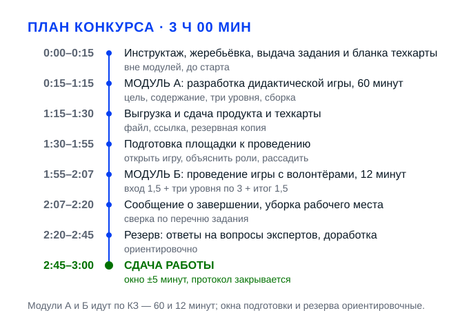
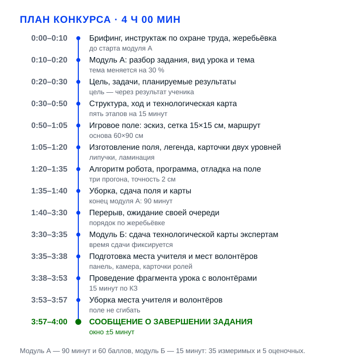
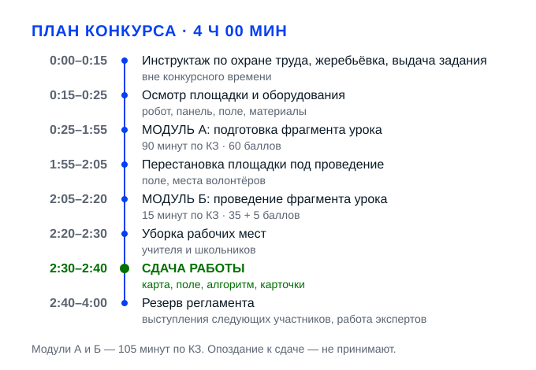

Учитель начальных классов (Р)
Задания ниже — официальные файлы «Абилимпикс» (источник: abilympics-russia.ru), разложенные по категориям. Решения написаны по тексту задания, регламенту и критериям оценки; в них указано, что именно проверяет эксперт.
Школьник
14–16 лет, базовый уровень заданияВыдержка из официального конкурсного задания: страницы, относящиеся к категории «Школьник» (стр. 5–9 источника).
Пошаговое решение
Конкурсное задание категории «Школьники» состоит из двух модулей и укладывается в три часа. В модуле А за 60 минут нужно разработать дидактическую игру по русскому языку для второго класса с заданиями трёх уровней — знание, применение, анализ — и заполнить технологическую карту её проведения; этот модуль стоит 68 баллов из 100. В модуле Б за 12 минут игру нужно провести с волонтёрами, сдав экспертам продукт и карту; здесь разыгрываются 28 измеримых и 4 оценочных балла. Работа идёт только на оборудовании площадки: собственное оборудование и готовые разработки из интернета запрещены. Тема может быть изменена на 30%, поэтому выигрывает не заученный сценарий, а умение спроектировать игру на месте: от цели через содержание и три уровня к структуре, а затем к проведению. Ниже задание разложено на шесть задач и пятьдесят шагов с временем, признаками готовности и типичными ошибками.

Задача 1. Принять задание и разложить 60 минут модуля АМодуль А · вход в 68 баллов
Модуль А даёт 68 баллов из 100, и это самая дорогая часть конкурса: именно здесь появляются оба продукта, которые потом оценивают, — дидактическая игра в электронном виде и технологическая карта. На разработку отведено 60 минут, и они уходят быстрее, чем кажется, потому что половина времени обычно тратится на поиск инструмента и на переделку уже собранного. Поэтому первые десять минут мы не трогаем панель, а читаем бланк, выписываем требования и раскладываем час на четыре блока с контрольными точками.
Действие 1.1. Прочитать бланк задания и выписать ограничения
Шаг 1.1.1
Берём бланк конкурсного задания и читаем его целиком, до последней строки, прежде чем включать панель. Выписываем на лист две строки того, что обязаны сдать: дидактическая игра в электронном виде и технологическая карта проведения дидактической игры. Ниже ставим время: 60 минут на разработку, 12 минут на проведение с волонтёрами, 3 часа на всё вместе. Лист кладём слева от клавиатуры, чтобы сверяться с ним взглядом, а не по памяти.
Модуль А стоит 68 баллов из 100, модуль Б — 28 измеримых и 4 оценочных, и оба продукта модуля А оценивают отдельно. Участник, который помнит про игру и забыл про карту, теряет не часть баллов, а целый оценочный блок: карту нельзя дособрать после сдачи, потому что она подаётся вместе с игрой. Выписанные цифры ещё и держат темп — по ним видно, не отстали ли вы.
На листе ровно два пункта результата, время обоих модулей и общая продолжительность 3 часа. Проверьте себя вопросом: если эксперт подойдёт через минуту и спросит, что вы сдаёте, ответ будет за две секунды и без заглядывания в бланк. Если ответа нет — бланк прочитан не до конца.
Самая дорогая ошибка входа — сразу сесть за панель и начать собирать задание, не дочитав перечень. Через час выясняется, что техкарта не заполнена, а на неё уходит двадцать минут, и они вычитаются из игры: недоделанная карта снимает баллы за целый блок модуля А.
Эксперт подходит в первые минуты и смотрит, читает ли участник бланк или сразу тянется к панели. Спокойное чтение с выписками читается как взрослая работа, а не как растерянность.
Шаг 1.1.2
Находим в бланке формулировку темы и класса и переписываем её дословно: русский язык, 2 класс, дидактическая игра с заданиями трёх уровней — знание, применение, анализ. Отдельно отмечаем строку про 30-процентное изменение темы: организаторы вправе подменить тему урока, и тогда заготовленный дома сценарий не подойдёт целиком. Рядом записываем, какой именно теме соответствует наше содержание, чтобы за минуту перестроиться, если тема изменится.
Три уровня названы в самом задании, и это не пожелание, а требование к структуре: игра без уровня «анализ» не выполняет задание, сколько бы красивых слайдов в ней ни было. Строка про 30% изменения объясняет, почему нельзя строить работу на одном заранее выученном сценарии — проверяется умение проектировать на месте, под конкретную тему.
В выписке есть класс, предмет, три уровня и пометка про возможную смену темы. Проверьте по бланку, что все три слова — знание, применение, анализ — выписаны полностью, а не заменены на «простое, среднее, сложное»: эксперт ищет в техкарте именно эти формулировки.
Типичная ошибка — свести три уровня к двум: сделать узнавание и применение, а анализ заменить заданием «повышенной сложности». Формально игра работает, но требование задания не выполнено, и часть из 68 баллов модуля А снимается за структуру.
Эксперт сверяет вашу игру с формулировкой задания по трём уровням. Смотрит он на это дважды: при сдаче продукта и во время проведения. Спрашивать он может и о том, как вы проверяли оборудование до старта.
Шаг 1.1.3
Читаем раздел ограничений и выписываем его отдельным пунктом: пользоваться можно только оборудованием площадки, а собственное оборудование и готовые методические разработки из интернета запрещены. Перечисляем, что относится к интерактивному оборудованию: инструменты панели — таймер, секундомер, элементы рисования, электронный флипчарт, документ-камера, индивидуальные планшеты, платформа LearningApps.org, сервисы викторин и опросов, PowerPoint, поиск изображений. Проверяем, что из этого реально стоит на площадке.
Запрет на готовые разработки — не формальность: если игра узнаваемо скачана, работу могут не оценить вовсе, потому что проверяется умение проектировать, а не умение искать. Список разрешённого, наоборот, работает в вашу пользу: он снимает вопрос «а можно ли» и позволяет сразу выбрать инструмент под свои задачи, не теряя минуты на сомнения.
На листе перечислено, что есть на площадке, и напротив каждого пункта стоит галочка «работает» или крестик. Отдельно проверьте вход в LearningApps и запуск PowerPoint: если аккаунт не открывается, лучше узнать это сейчас, а не на сороковой минуте.
Самая частая ошибка — начать собирать игру в сервисе, к которому нет доступа с площадки, или принести заготовку на своей флешке. В первом случае теряется двадцать минут на перенос, во втором работу могут не принять к оценке по разделу ограничений.
Эксперт следит, чем именно вы пользуетесь, и отмечает случаи работы с собственным оборудованием. Проверка идёт без предупреждения, по ходу модуля. Нарушение фиксируется сразу, без предупреждения.
Действие 1.2. Разложить 60 минут на четыре блока
Шаг 1.2.1
Делим час на четыре части и записываем их с временем: двадцать минут на проектирование — цель, задачи, содержание, три уровня и структура; двадцать пять минут на сборку игры в выбранном инструменте; десять минут на технологическую карту; пять минут на проверку и сдачу. Времена пишем на том же листе крупно, чтобы они были видны с рабочего места, а не лежали в перевёрнутом виде.
Шестьдесят минут на два продукта — это жёсткая арифметика: если сборка съест сорок минут, карта останется недописанной, а она входит в те же 68 баллов модуля А. Планирование с запасом в пять минут нужно ещё и потому, что выгрузка файла и его сохранение на носитель почти всегда занимают больше времени, чем ожидается.
Четыре блока в сумме дают ровно 60 минут, и на каждом стоит время окончания, а не только начала. Сверьте с бланком: разработка по заданию — 60 минут, значит резерв на «ещё чуть-чуть» уже внутри последнего блока, а не за его пределами.
Ошибка новичка — планировать «сначала сделаю игру, потом посмотрю, сколько осталось». Сборка в незнакомом сервисе затягивает, и на карту остаётся семь минут вместо десяти, а заполненная наспех карта теряет баллы за содержание и структуру.
Эксперт оценивает организацию работы: есть ли план, придерживается ли участник времени. Видно это по тому, успевает ли он к контрольным точкам. Точность к контрольным точкам видна по готовым продуктам.
Шаг 1.2.2
Ставим таймер прямо на интерактивной панели — это разрешённый инструмент, и он висит поверх окна, не мешая работе. Первую контрольную точку ставим на двадцатой минуте: к этому моменту должны быть готовы цель, содержание, три задания и структура на бумаге. Вторую — на сорок пятой: игра собрана и прогоняется. Третью — на пятьдесят пятой: карта заполнена, остаётся сдача.
Таймер на панели, а не на телефоне, нужен по двум причинам: телефон отвлекает и запрещён как собственное оборудование, а панель всё равно перед глазами. Контрольные точки важнее общего времени, потому что показывают отставание в момент, когда его ещё можно исправить сокращением, а не переделкой.
Таймер запущен и виден, три точки записаны. На двадцатой минуте проверьте по листу: четыре пункта проектирования закрыты или нет. Если закрыты два — вы отстаёте вдвое и должны упрощать замысел, а не ускорять набор.
Частая ошибка — поставить таймер и не смотреть на него, увлекшись оформлением первого слайда. К сороковой минуте готова одна анимация и ни одного задания третьего уровня, а именно уровни и составляют содержательную часть оценки.
Эксперт замечает, работает ли участник по времени. Ровный темп без рывка в конце читается как уверенное владение методикой. Если таймер выключен, это тоже замечают: значит, темп не контролируется.
Задача 2. Спроектировать игру до первого клика по панелиМодуль А · цель, содержание, уровни, структура
Дидактическая игра отличается от набора красивых слайдов ровно одним: у неё есть цель, к которой ведут задания, и правила, по которым дети в неё играют. Поэтому двадцать минут проектирования — не потерянное время, а страховка: пока замысел лежит на бумаге, его можно переделать за минуту, а собранные слайды переделываются по полчаса. Здесь мы формулируем цель через результат ученика, отбираем содержание по теме второго класса, выстраиваем три уровня и только потом рисуем структуру на 12 минут проведения.
Действие 2.1. Сформулировать цель и задачи игры
Шаг 2.1.1
Пишем цель одной фразой и начинаем её не с «познакомить» и не с «рассказать», а с результата: что второклассник сможет сделать после игры. Рабочая формулировка выглядит так: научить находить в слове орфограмму и объяснять выбор буквы, опираясь на правило. Дальше добавляем вторую половину цели — игровую: собрать как можно больше верных решений за отведённое время. Обе части пишем рядом, на одном листе.
Цель — первый пункт, который требует задание: её нужно определить с учётом возраста и возможностей детей и внести в технологическую карту. Формулировка через результат сразу задаёт и проверяемость: если после игры нельзя показать, что дети стали делать иначе, цель написана зря. Игровая половина цели нужна, чтобы это была игра, а не контрольная.
Прочитайте цель вслух и ответьте на вопрос: что изменится в действиях ребёнка. Если ответ звучит как «он узнает больше», цель слишком общая; если как «он найдёт орфограмму и объяснит выбор» — годится. В цели не должно быть слов «формировать» и «развивать» без уточнения, что именно ребёнок сделает руками и головой.
Самая распространённая ошибка — цель «повторить правила русского языка». Под такую цель подходит любое задание, и проверить её невозможно: эксперт видит общую фразу и снимает баллы за целеполагание, а вместе с ним рушится и логика уровней.
Эксперт читает цель в карте и слушает, как участник её проговаривает детям на входе в игру. Расхождение между картой и словами заметно сразу. Формулировка цели в карте — первое, что он сверяет со словами на площадке.
Шаг 2.1.2
Раскладываем цель на три задачи, по одной на уровень: узнать орфограмму в готовом слове, применить правило к новому слову, найти и объяснить чужую ошибку. Каждую задачу начинаем с глагола действия — узнать, применить, объяснить — и проверяем, что она не повторяет предыдущую другими словами. Три задачи пишем столбиком под целью, чтобы видно было, что они ведут к ней, а не живут отдельно.
Требование задания прямо называет три уровня, и задачи — это место, где уровни соединяются с целью. Если задач две, третий уровень оказывается без опоры и выглядит приклеенным; если задач пять, на двенадцати минутах проведения их не пройти. Три задачи на три уровня — единственная схема, которая укладывается и в замысел, и во время.
Каждая задача начинается с глагола и заканчивается проверяемым действием. Проверьте обратный ход: закройте цель и попробуйте восстановить её по трём задачам. Если восстановили — связка работает; если получилось «поиграть в слова» — задачи надо переписать.
Ошибка — написать три задачи, которые все про узнавание: «вспомнить правило», «узнать орфограмму», «повторить слова». Формально их три, фактически уровень один, и на проведении выясняется, что детям нечего делать на второй и третьей минуте.
Эксперт сверяет задачи с уровнями и смотрит, совпадает ли то, что написано в карте, с тем, что реально происходит на площадке. Особенно его интересует третий уровень: он чаще всего написан формально.
Шаг 2.1.3
Сразу переносим цель и задачи в технологическую карту, в её верхнюю часть, не откладывая на конец. Пишем от руки или в электронном бланке — тем способом, которым карта будет сдаваться, чтобы потом не переписывать. Формулировки в карте и на рабочем листе держим дословно одинаковыми: разойдяся на полслова, они потом читаются как две разные цели. Ниже оставляем место для пометок по ходу.
Карта — второй обязательный продукт модуля А, и заполнять её задним числом всегда дороже: приходится вспоминать, что имелось в виду. Дословное совпадение важно ещё и потому, что эксперт читает карту рядом с игрой и проверяет соответствие, а не красоту формулировок.
В карте заполнены класс, предмет, тема, цель и три задачи, и они совпадают с рабочим листом слово в слово. Проверьте, что в карте нет пустых полей в шапке: незаполненная шапка читается как небрежность, даже если ход игры расписан подробно.
Частая ошибка — держать цель в голове и записать её в карту в последние пять минут, сократив до одной строки. Тогда в карте появляется «игра по теме», а в игре — три уровня с конкретными задачами, и соответствие между продуктами теряется.
Эксперт сравнивает шапку карты с содержанием игры. Несовпадение цели и заданий — один из первых признаков, что игра собрана без проекта. Пустая шапка карты — первый вопрос, который он задаёт вслух.
Действие 2.2. Отобрать учебное содержание под тему второго класса
Шаг 2.2.1
Выписываем пять-семь дидактических единиц, которые будут внутри игры: само правило, способ проверки, набор слов с орфограммой, слова-ловушки без орфограммы, образец объяснения вслух. Каждую единицу подписываем так, как она звучит в учебнике второго класса, а не своими словами: дети узнают формулировку и не тратят время на перевод. Рядом помечаем, на каком уровне каждая единица работает.
Задание требует определить учебное содержание с учётом возраста и возможностей детей, и это проверяемая часть: содержание должно соответствовать программе второго класса, а не пятому. Пять-семь единиц — тот объём, который реально укладывается в двенадцать минут проведения; больше просто не прозвучит, и часть замысла останется невидимой для эксперта.
Список содержит правило, способ проверки, примеры и контрпримеры. Проверьте каждую единицу вопросом: это есть во втором классе. Если для объяснения нужно понятие, которое вводят позже, единицу надо заменить, иначе дети не смогут выполнить задание.
Типичная ошибка — взять содержание «с запасом», из программы третьего класса, и на проведении обнаружить, что волонтёры не знают термина. Задание проваливается не потому, что игра плохая, а потому, что содержание не по возрасту, и баллы за содержание снимаются.
Эксперт проверяет соответствие содержания возрасту и программе. Особенно внимательно смотрит на термины, которые участник произносит вслух во время игры.
Шаг 2.2.2
Сверяем отобранное с учебником и программой, которые лежат на площадке или доступны в электронном виде. Ищем точную формулировку правила и порядок его введения: если в учебнике правило дано в виде двух шагов, игра не должна требовать третьего. Отдельно проверяем, какие слова уже встречались в упражнениях, — знакомые слова берём как опору, незнакомые оставляем для уровня «анализ».
Опора на учебник — это то, что отличает методически грамотную игру от самодельной викторины. Эксперт оценивает именно методику: совпадает ли порядок действий в игре с порядком, который дети проходили. Кроме того, знакомые слова экономят время проведения — на них не нужно объяснять условие.
Правило в игре сформулировано теми же словами, что в учебнике, и состоит из того же числа шагов. Проверьте это буквально: положите рядом учебник и свой рабочий лист и сравните формулировки. Расхождение хотя бы в одном шаге — повод переписать формулировку в игре.
Ошибка — придумать своё правило, более удобное для игры. Дети привыкли к формулировке учебника, на проведении возникает спор о словах, время уходит, а эксперт фиксирует расхождение с программой. Эксперт-методист замечает такую подмену по первой же фразе.
Эксперт смотрит, на каком основании выбрано содержание: ссылается ли участник на учебник или сочиняет по памяти. Он может попросить назвать учебник, по которому взято правило, и это стоит держать в голове.
Шаг 2.2.3
Собираем банк языкового материала: не меньше десяти слов или предложений на каждый уровень, с запасом, потому что часть не прозвучит. В банк обязательно входят ловушки — слова, где орфограмма слышится, но не пишется, и наоборот. Каждое слово проверяем по словарю или учебнику и помечаем галочкой, чтобы в игре не оказалось спорного примера, который разрушит задание.
Запас материала нужен из-за темпа: на двенадцати минутах два-три задания вы не успеете дать, и это нормально, но если материала ровно на один круг, замена невозможна. Ловушки — сердце уровня «анализ»: именно на них видно, понимает ли ребёнок правило или узнаёт знакомые слова.
На каждый уровень не меньше десяти единиц, каждая проверена и помечена. Просмотрите банк на спорные случаи: если слово можно объяснить двумя способами, во втором классе его лучше убрать, иначе вместо анализа получится обсуждение.
Самая частая ошибка — набрать слова на ходу, во время сборки, и включить в игру то, что первым пришло в голову. Тогда в задании появляется слово с непроверяемой орфограммой, дети отвечают неправильно по вине материала, а не по незнанию.
Эксперт просматривает языковой материал на предмет корректности. Одна ошибка в слове стоит дороже, чем отсутствие красивой анимации. Спорное слово в игре он заметит быстрее, чем неудачный шрифт.
Действие 2.3. Выстроить три уровня заданий
Шаг 2.3.1
Собираем задание первого уровня — на знание. Формулируем так, чтобы ребёнок только узнавал и воспроизводил: выбрать из двух-трёх вариантов букву, показать карточку с нужным словом, назвать правило по опорной схеме на панели. Условие пишем одной строкой не длиннее восьми слов, ответ предусматриваем в одно касание, время на задание — не больше минуты.
Уровень «знание» — это фундамент, без которого применение превращается в угадывание: сначала нужно убедиться, что ребёнок видит орфограмму и помнит правило. В задании он назван отдельно, и его отсутствие читается как неполная структура. Одновременно это самый быстрый вход в игру: успешное касание в первую минуту снимает страх и включает группу.
Условие умещается в одну строку, вариантов не больше трёх, ответ проверяется касанием. Прочитайте условие вслух за четыре секунды — второклассник должен успеть понять его с первого раза. Если не укладывается, сокращайте формулировку, а не время.
Частая ошибка — перегрузить первое задание: четыре варианта, два условия и анимация входа. На проведении дети застревают на первой же минуте, и весь тайминг двенадцати минут рассыпается, а баллы за проведение снимаются за нарушение структуры.
Эксперт проверяет, действительно ли первое задание проверяет знание, а не догадку. Смотрит на число вариантов и на то, как быстро группа включается в работу.
Шаг 2.3.2
Строим задание второго уровня — на применение. Здесь ребёнок действует по правилу в новой ситуации: получает слово, которого не было в упражнениях, сам находит орфограмму, сам подбирает проверочное слово и вписывает букву. Формулируем как действие: вставь букву и назови проверочное слово. На панели оставляем место, куда вписывается ответ от руки, чтобы работало рисование, а не только выбор варианта.
Применение — центральный уровень игры и главная часть методической ценности: именно здесь видно, переносится ли правило на незнакомый материал. Требование задания называет применение отдельно, и подмена его ещё одним выбором из вариантов обесценивает всю игру: выбрать правильную букву можно и наугад, а подобрать проверочное слово — нет.
В задании есть действие, а не выбор: вписать, соединить, подобрать. Проверьте на себе: сможете ли вы выполнить его, не зная правила. Если да — это угадывание; если нет — уровень выстроен верно. Это и есть главный признак: выбор или действие.
Типичная ошибка — сделать второй уровень копией первого с другими словами: те же три варианта, только слова сложнее. Формально два задания есть, фактически уровень один, и часть баллов за структуру теряется, а на проведении дети проходят игру без усилия.
Эксперт смотрит на характер действия в задании: выбор или действие. Это один из самых быстрых признаков, по которому видно уровень методической подготовки.
Шаг 2.3.3
Собираем третий уровень — анализ. Даём текст или пару слов, где ошибка уже допущена, и просим не просто найти её, но и объяснить, почему написано неверно и как проверить. Второй вариант задания — разложить слова на две группы и назвать признак, по которому делили. Обязательное условие: после ответа ребёнок произносит объяснение вслух, а вы подтверждаете или поправляете.
Анализ — то, что отличает дидактическую игру от тренажёра, и задание требует его прямым текстом. Объяснение вслух принципиально: без него ребёнок может угадать ошибку, но не сможет показать, что понял причину, и уровень перестаёт быть аналитическим. Именно этот уровень чаще всего даёт разрыв в баллах между участниками.
В задании требуется объяснение, а не только ответ. Проверьте, что объяснение можно произнести за две фразы: «здесь пишется о, потому что проверочное слово — воды». Если для объяснения нужен абзац, задание не уложится в три минуты.
Ошибка — оставить на третьем уровне задание «найди ошибку» без объяснения. Дети находят её по памяти и не могут сказать почему, и эксперт видит, что аналитического уровня в игре нет, хотя задание формально присутствует.
Эксперт слушает объяснения детей во время проведения. Именно здесь видно, работает ли третий уровень или обозначен на слайде. Если объяснений нет, уровень считается не заявленным в реальном ходе игры.
Шаг 2.3.4
Проверяем три задания на «неслипание»: раскладываем их по возрастанию усилия и смотрим, что каждое следующее требует нового действия, а не повторяет предыдущее в другой обёртке. Рядом с каждым заданием записываем, какой уровень оно закрывает, и ставим эту пометку в техкарту. Если два задания оказались об одном и том же, переделываем второе, пока запас времени позволяет.
Эксперт оценивает не количество заданий, а наличие трёх уровней, и слипшиеся уровни читаются как один. Проверка на бумаге занимает две минуты, а переделка уже собранного слайда — восемь, поэтому сверку делаем до сборки. Заодно проверяется, что игра растёт по трудности, а не прыгает.
Три задания, три разных действия, три пометки уровня. Прочитайте условия подряд: должно чувствоваться нарастание. Если второе и третье можно поменять местами без потери смысла, значит уровни не выстроены.
Самая частая ошибка — подменить анализ «самым сложным заданием на применение»: длинное слово, редкая орфограмма, но действие то же. Проверяющий видит два уровня вместо трёх и снимает баллы за структуру игрового задания.
Эксперт читает условия всех заданий подряд и отмечает, есть ли нарастание сложности и разные типы действий. Его интересует не число слайдов, а то, растёт ли усилие от задания к заданию.
Действие 2.4. Собрать структуру игры и правила
Шаг 2.4.1
Раскладываем двенадцать минут проведения на четыре этапа: вход и мотивация — полторы минуты, задания трёх уровней — по три минуты, итог и рефлексия — полторы минуты. Внутри каждого этапа записываем, что делает учитель и что делают дети, двумя разными строками. Времена проставляем на листе рядом с названиями этапов, чтобы на проведении не считать в голове.
Двенадцать минут — жёсткая рамка модуля Б, и без разбивки они уходят на первые два задания, а итог с рефлексией не звучит вовсе. Именно итог показывает, достигнута ли цель, и его отсутствие снижает оценку проведения. Раскладка по этапам нужна и для карты: в ней ход игры описывается по этапам с временем.
Четыре этапа в сумме дают 12 минут, у каждого есть время начала и окончания. Проверьте арифметику: полторы плюс девять плюс полторы — ровно двенадцать, без скрытого резерва. Если сумма больше, сокращайте число заданий, а не время на рефлексию.
Ошибка — расписать игру «по заданиям», забыв про вход и итог. Тогда первые полторы минуты уходят на организацию вслух, три минуты рефлексии превращаются в тридцать секунд, и эксперт фиксирует отсутствие завершающего этапа.
Эксперт держит в руках карту и следит по часам, совпадает ли заявленный ход с реальным. Расхождение на минуту-две нормально, на пять — уже нет. Карта и часы у него в руках одновременно.
Шаг 2.4.2
Придумываем правила, которые ребёнок понимает с первого объяснения: как делитесь на команды или играете все вместе, что считается верным ходом, что происходит при ошибке и как считается результат. Правила формулируем тремя короткими фразами и выносим на отдельный слайд или в угол панели. Туда же добавляем поощрение: фишки, звёзды, движение по дорожке — что-то, что видно на экране и растёт.
Игра без правил превращается в опрос, а опрос на двенадцати минутах не держит внимание второклассников. Правила ещё и экономят время: объяснив их один раз в начале, вы не повторяете условие перед каждым заданием. Видимое поощрение нужно как обратная связь — ребёнок видит, что его действия меняют картинку.
Правила умещаются в три фразы и не требуют уточнений. Проверьте на человеке, который не знает замысла: если после объяснения он может начать играть, правила готовы. Отдельно проверьте, что поощрение видно с последнего ряда.
Самая частая ошибка — длинное объяснение правил на две минуты, после которого дети всё равно переспрашивают. Время уходит из игры, а внимание группы падает раньше, чем начинается первое задание. Второклассники переспрашивают хором, и это съедает ещё минуту.
Эксперт слушает объяснение правил на входе. Короткое и понятное объяснение оценивается как методический приём, длинное — как потеря времени. Он отмечает, уложилось ли объяснение в полторы минуты.
Шаг 2.4.3
Прогоняем структуру вслух, с секундомером в руке, не включая детей: произносим вход, объяснение правил, переходы между заданиями и итог. Засекаем время и сравниваем с планом. Если проговаривание занимает больше двух минут, сокращаем текст входа: на площадке с волонтёрами вы будете говорить медленнее, чем наедине с собой. Считаем не только общее время, но и каждый переход отдельно.
Прогон вслух вскрывает то, что не видно на бумаге: длинные переходы, повторы, лишние слова. На площадке к вашему темпу добавляется реакция группы, и всё, что не отрепетировано, растягивается вдвое. Две минуты, потраченные на прогон, экономят три минуты на проведении, а они входят в 28 измеримых баллов модуля Б.
Прогон уложился в 12 минут с запасом хотя бы в полминуты. Отметьте, на каком этапе вы сбились, и сократите именно его. Если сбились на переходе между уровнями, значит переход нужно сделать одной фразой.
Ошибка — считать, что структура проверена, потому что она записана. На проведении выясняется, что вход занимает три минуты вместо полутора, и третье задание остаётся невыполненным. Сокращать придётся на ходу, а это всегда за счёт третьего уровня.
Эксперт замечает, насколько свободно участник ведёт игру. Отрепетированный ход выглядит как уверенность, а не как чтение с листа. Сбивчивый вход и длинные паузы он отмечает как потерю темпа.
Задача 3. Собрать игру на интерактивном оборудованииМодуль А · продукт в электронном виде
Сборка — самая шумная часть работы и самая опасная по времени: именно здесь двадцать пять минут незаметно превращаются в сорок. Спасает правило одного инструмента: мы выбираем одну среду и собираем всё в ней, не перескакивая между сервисами. Второе правило — собирать от задания к оформлению, а не наоборот: сначала работающая механика, потом шрифты и картинки. К концу блока игра должна запускаться с первого клика и проходиться целиком без вас.
Действие 3.1. Выбрать инструмент и подготовить среду
Шаг 3.1.1
Выбираем между двумя реальными вариантами. LearningApps.org даёт готовые механики — выбор, классификация, ввод текста, — и в нём быстро собирается интерактив, но требует сети. PowerPoint даёт полный контроль над видом и работает без интернета, зато интерактивность приходится делать триггерами. Решаем по устройству заданий: если нужен ввод слова от руки — берём LearningApps, если важнее оформление и офлайн — PowerPoint.
Выбор инструмента — не вкусовой вопрос, а вопрос выполнимости задания: механика должна поддерживать действие, которое мы заложили в уровень. Ошибка на этом шаге стоит дороже всего, потому что переделка в другом сервисе означает сборку заново. Оба инструмента разрешены перечнем оборудования площадки.
Инструмент выдерживает все три задуманных задания, включая ввод или объяснение. Проверьте это на черновике: соберите одно задание до конца и посмотрите, чего не хватает. Если не хватает главного действия — меняйте инструмент сейчас, а не через пятнадцать минут.
Частая ошибка — начать в PowerPoint, а на третьем задании обнаружить, что для классификации нужна другая механика, и бросить сборку ради LearningApps. Двадцать минут уходят в никуда, и игра остаётся недоделанной.
Эксперт смотрит на соответствие инструмента заданию: не используется ли сложная среда там, где хватило бы простой, и наоборот. Если среда выбрана не под задание, это видно по тому, как долго участник ищет механику.
Шаг 3.1.2
Открываем выбранную среду на площадке и проверяем вход до того, как начинать собирать: логин, доступ к созданию упражнений, возможность сохранить и получить ссылку. Если аккаунта нет — создаём на месте или работаем в гостевом режиме, но обязательно проверяем, что результат можно выгрузить. Сразу заводим папку на рабочем столе и называем её по шаблону: класс, предмет, тема.
Потеря доступа — самая обидная потеря времени: игра собрана, а сохранить нельзя. Проверка входа занимает две минуты и снимает риск, который в худшем случае обнуляет весь модуль. Понятное имя папки и файлов нужно для сдачи: экспертам надо показать продукт за секунды, а не искать его по рабочему столу.
Вход выполнен, пробное упражнение создано, сохранено и открылось по ссылке в новой вкладке. Папка создана и названа. Если ссылка открывается только в вашем браузере — проверьте режим доступа, иначе эксперты её не увидят.
Ошибка — собирать в гостевом режиме и выяснить на сохранении, что результат не выгружается. Вторая по частоте — сохранить в личную папку без ссылки, а потом объяснять экспертам, где искать файл. Проверка ссылки в новой вкладке занимает десять секунд и снимает этот риск.
Эксперт присутствует при сдаче и проверяет, открывается ли продукт на его устройстве. Заранее проверенная ссылка снимает половину вопросов. Ссылку он открывает при вас, а не после.
Шаг 3.1.3
Настраиваем саму панель под работу: проверяем масштаб интерфейса, чтобы кнопки были крупными, включаем режим рисования поверх слайда и открываем таймер. Документ-камеру, если она есть, ставим так, чтобы в кадр попадал лист с заданием, и проверяем фокус на своей руке. Всё лишнее — чужие вкладки, уведомления, мессенджеры — закрываем. Масштаб меняется в настройках системы, а не в самом приложении.
Крупные элементы и рисование поверх — не украшение, а условие проведения: на двенадцати минутах ребёнок должен попадать по кнопке с первого раза, а вы — быстро писать на слайде от руки. Документ-камера даёт второй канал показа, когда нужно разобрать письменный ответ, и её отсутствие в кадре заметно при демонстрации.
Кнопки крупные и не перекрывают текст, рисование работает поверх любого слайда, таймер виден, документ-камера показывает лист читаемо. Проверьте с расстояния двух метров: если вы сами не читаете мелкий текст, второклассник тем более не прочтёт.
Типичная ошибка — оставить системный масштаб по умолчанию, и на панели мелкий текст, который видно только вблизи. На проведении дети не читают условие, вы теряете минуты на повторение, а оценка за использование оборудования падает.
Эксперт смотрит, насколько уверенно участник работает с инструментами панели: таймером, рисованием, флипчартом. Ему важно видеть, что участник пользуется панелью как инструментом, а не как экраном для показа.
Действие 3.2. Собрать задания уровней «знание» и «применение»
Шаг 3.2.1
Собираем первое задание: титульный слайд с названием игры и правилами, затем задание на узнавание. Берём из банка шесть-восемь слов, из них три-четыре с орфограммой, и делаем выбор из двух вариантов либо распределение по двум колонкам. Шрифт ставим не мельче 28 пунктов, слова — по одному на строку, без переносов. Слова располагаем в один столбец, чтобы взгляд шёл сверху вниз, а не прыгал по колонкам.
Уровень «знание» должен проходиться за минуту и без вашей помощи: он задаёт темп и уверенность. Ограничение по числу слов связано со временем — восемь слов на крупном шрифте занимают весь экран, и ребёнок успевает прочитать их за двадцать секунд. Требование к шрифту вытекает из условия показа на панели, а не из эстетики.
Задание проходится за минуту, все слова читаются с последнего ряда, ответ проверяется в одно касание. Пройдите его сами, не подглядывая в замысел: если вы задумались над формулировкой, ребёнок застрянет.
Самая частая ошибка — поставить на слайд десять слов мелким шрифтом в две колонки. Дети читают медленно, первая минута уходит на разбор, и вы начинаете второй уровень с отставанием. Проверка чтения с двух метров занимает полминуты и снимает этот риск.
Эксперт проверяет читаемость и однозначность задания. Двусмысленный вариант ответа — повод снизить балл за качество продукта. Он смотрит на первое задание как на вход: понятно ли оно без пояснений.
Шаг 3.2.2
Собираем второе задание с действием: слово с пропущенной буквой и полем для вписывания, либо соединение слова с проверочным словом линией. Оставляем на экране подсказку-опору — схему правила в углу, но не готовый ответ. Предусматриваем второй круг: три слова для всей группы и три дополнительных, если справились быстро. Второй круг держим на скрытом слайде, чтобы не отвлекать тех, кто ещё работает.
Применение проверяется действием, поэтому в задании должно быть место, куда ребёнок вписывает или что соединяет. Опора-схема снижает тревогу и позволяет работать самостоятельно, а второй круг спасает тайминг: сильная группа не простаивает, слабая не торопится. Это ровно то, что оценивается как учёт возможностей детей.
В задании есть действие и есть опора. Проверьте, что подсказка не содержит ответа: если по схеме можно списать букву, применение превращается в узнавание. Второй круг готов и не виден до нужного момента.
Ошибка — сделать подсказку с готовым примером, где буква уже вписана. Дети копируют пример вместо того, чтобы применить правило, и уровень «применение» фактически не проверяется. Проверка простая: закройте опору и посмотрите, изменится ли ответ.
Эксперт смотрит, как дети выполняют задание: сами или по подсказке. Видно это по паузам и по тому, кто тянется к экрану первым. Он смотрит, кто из детей действует сам, а кто ждёт подсказки.
Шаг 3.2.3
Настраиваем проверку и обратную связь: верный ответ подсвечивается и подписывается коротким объяснением, неверный — не исчезает, а получает пометку и возможность повторить. В LearningApps это делается в настройках упражнения, в PowerPoint — триггерами анимации. Тексты обратной связи пишем двумя-тремя словами: «верно, проверочное слово — воды». Проверяем оба варианта на одном слове.
Обратная связь — то, что превращает касание в обучение: без объяснения ребёнок запоминает ответ, а не способ. Мягкая реакция на ошибку нужна методически: второклассник, у которого ответ исчезает с экрана, теряет мотивацию и выпадает из игры. Короткий текст экономит время на проведении.
На каждый ответ есть реакция, верная и неверная, и в верной есть объяснение. Пройдите задание намеренно неправильно: экран должен дать понятную подсказку, а не просто красный крест. Если после неверного ответа экран просто замирает, обратной связи нет.
Частая ошибка — оставить стандартное «неверно» без пояснения или, наоборот, написать абзац объяснения, который никто не читает. В первом случае ошибка не разбирается, во втором теряется время. Короткая реакция работает лучше длинной: её успевают прочитать.
Эксперт смотрит на реакцию игры на ошибку. Наличие разбора отмечается как сильная сторона продукта. Он специально отвечает неверно, чтобы посмотреть, что игра скажет ребёнку, и записывает, есть ли разбор.
Действие 3.3. Собрать задание уровня «анализ»
Шаг 3.3.1
Готовим задание на поиск ошибки: короткий текст из трёх-четырёх предложений, в котором две-три буквы написаны неверно. Ошибки делаем типичные для второго класса, а не случайные: проверяемая безударная гласная, парная согласная на конце. На панели предусматриваем инструмент выделения, чтобы ребёнок обводил слово пальцем или маркером. Маркер даём одного цвета, чтобы выделения не превращались в раскраску.
Анализ начинается с обнаружения несоответствия, и текст с типичными ошибками даёт материал для разбора. Случайные ошибки проверяют внимательность, а типичные — понимание правила, и эксперт различает это без труда. Инструмент выделения нужен, чтобы работа шла на панели, а не в воздухе.
В тексте ровно столько ошибок, сколько объявлено, и все они относятся к изученному правилу. Проверьте текст на отсутствие спорных написаний: любая неоднозначность превратит задание в спор с группой. Сверяйте по списку задуманных ошибок.
Ошибка — насовать в текст ошибок «для интереса», включая те, которые дети ещё не проходили. Группа находит не то, что задумано, объяснение рассыпается, и уровень не срабатывает. Типичность важнее количества: две верные ошибки лучше пяти случайных.
Эксперт проверяет, соответствуют ли ошибки в тексте программе второго класса и заявленному правилу. Он читает текст задания заранее и сверяет ошибки с теми, что проходят во втором классе.
Шаг 3.3.2
Делаем вторую часть анализа — классификацию с обоснованием: шесть-восемь слов нужно разложить на две группы и назвать признак деления. Признак не подписываем, его формулируют дети. На панели делаем две зоны перетаскивания и пустое поле для формулировки, куда вы вписываете ответ группы от руки. Формулировку признака записываем на лист заранее в двух вариантах, чтобы принять детский ответ, даже если он сказан другими словами.
Классификация — самый чистый вид анализа для второго класса: ребёнок сравнивает, находит общий признак и называет его. Пустое поле для формулировки принципиально: без него задание сводится к перетаскиванию и не требует объяснения. Именно обоснование показывает, работает ли третий уровень.
Слова делятся по одному признаку и не допускают второго толкования. Проверьте: если слово можно отнести в обе группы, оно лишнее. Поле для формулировки есть и заполняется от руки. Проверьте это на каждом слове, а не на двух первых.
Типичная ошибка — подобрать слова, которые делятся сразу по двум признакам, и получить спор. Дети предлагают верный вариант, вы его не принимаете, и вместо анализа начинается обсуждение условий. Спорное слово убираем сразу, пока не начали сборку.
Эксперт слушает, как группа формулирует признак. Способность назвать основание деления — прямой признак аналитического уровня. Он слушает, как дети формулируют основание, и отмечает, принял ли участник их слова.
Шаг 3.3.3
Проверяем третье задание на невозможность угадать: пробуем выполнить его, не зная правила, и смотрим, получается ли. Если получается — добавляем требование объяснить выбор: после ответа ребёнок называет проверочное слово или основание деления. В карте напротив задания дописываем, что именно должен произнести ребёнок. Если задание выполняется наугад, добавляем второй шаг: объяснить, почему остальные варианты не подходят.
Анализ отличается от применения тем, что требует обоснования, а не только результата. Проверка «можно ли угадать» — самый быстрый способ убедиться, что уровень настоящий. Запись в карте нужна, чтобы на проведении вы требовали объяснение, а не принимали молчаливый ответ.
Без знания правила задание не выполняется, и в карте записано, что должен произнести ребёнок. Проверьте формулировку вслух: она должна звучать как просьба, а не как угроза — «объясни, почему так». Просьба должна звучать спокойно и коротко.
Ошибка — оставить задание, где ответ очевиден по картинке или по количеству элементов. Тогда третий уровень формально есть, но не проверяет ничего, и на проведении группа проходит его молча за двадцать секунд.
Эксперт оценивает, требует ли задание объяснения. Отсутствие обоснования снижает оценку за содержательность игры. Его интересует, спрашивает ли участник «почему» после верного ответа, а не только после ошибки.
Действие 3.4. Настроить навигацию, таймер и прогон
Шаг 3.4.1
Делаем навигацию, которая работает без вас: с титульного слайда попадание в первое задание одним касанием, с любого задания — возврат к выбору уровня, с последнего — переход к итогу. Кнопки ставим в одном и том же месте на всех слайдах, крупные, с подписью словом, а не только значком. Проверяем, что ни один экран не оставляет ребёнка без выхода. Подписи делаем словами, а не значками.
На проведении вы ведёте группу и одновременно следите за временем, и любая навигационная заминка отнимает секунды у всех. Единое расположение кнопок даёт мышечную привычку: ребёнок не ищет, куда нажать. Тупиковый экран — частая причина, по которой игра останавливается посреди модуля Б.
Пройдите все переходы: титул, три задания, итог, возврат. Ни на одном экране нет состояния «дальше некуда». Кнопки одного размера и в одном месте, подписи читаются с двух метров. Проверьте это, нажимая всё подряд, как это сделает ребёнок.
Типичная ошибка — сделать переходы только вперёд и на последнем слайде оставить пустоту. Во время игры вы не можете вернуться к первому заданию, а группа ждёт, пока вы ищете нужный экран. Проверка всех переходов занимает три минуты.
Эксперт смотрит, свободно ли участник перемещается по своему продукту. Заминки в навигации читаются как недоделанность. Он открывает продукт и пробует перейти между заданиями сам, не спрашивая участника.
Шаг 3.4.2
Встраиваем таймер и счёт прямо в игру: таймер на каждое задание или общий на двенадцать минут, счёт — в виде фишек, звёзд или дорожки, которая заполняется. В PowerPoint это делается через анимацию по времени, в LearningApps — через настройки упражнения или внешний таймер панели. Проверяем, что оба элемента видны, но не закрывают текст задания. Таймер настраиваем на три минуты.
Таймер в игре, а не в голове, помогает держать двенадцать минут и показывает детям, что время ограничено, — это часть игровой рамки. Видимый счёт создаёт обратную связь и удерживает внимание до конца. Одновременно таймер на панели закрывает требование использовать инструменты интерактивного оборудования.
Таймер запускается и останавливается, счёт меняется при верном ответе, оба элемента не перекрывают текст. Прогоните одно задание с таймером: если он считает на весь экран поверх слов, уменьшите или перенесите в угол.
Частая ошибка — поставить таймер, который не останавливается и перекрывает условие. Дети смотрят на цифры вместо слов, а вы на проведении теряете контроль над этапами. Проверьте расположение элементов на панели, а не на мониторе: на большом экране пропорции другие.
Эксперт отмечает, используются ли инструменты панели по назначению: таймер, рисование, флипчарт. Формальное присутствие без применения не засчитывается.
Шаг 3.4.3
Делаем полный прогон игры от титула до итога, вслух, с секундомером, изображая ребёнка: читаем условие, отвечаем, ошибаемся намеренно, смотрим реакцию. Засекаем время по каждому заданию отдельно. Всё, что не сработало, правим сразу и прогоняем еще раз — уже только исправленный фрагмент. Если прогон идёт быстрее десяти минут, добавляем второй круг слов, чтобы на площадке не было паузы, а если медленнее — сокращаем текст условий, но не число заданий.
Прогон вскрывает то, чего не видно на слайдах: неверный ответ не подсвечивается, переход ведёт не туда, шрифт мелкий. На двенадцати минутах каждая такая мелочь стоит тридцать секунд, а в сумме — целое задание. Двойной прогон нужен потому, что правка часто ломает соседний переход.
Игра проходится целиком, каждое задание укладывается в три минуты с запасом, все реакции работают. Если суммарно получается больше десяти минут, вы оставили слишком много слов — сокращайте текст, а не замысел.
Ошибка — проверять игру по слайдам, а не прохождением. На проведении обнаруживается, что третье задание не открывается, и вы тратите драгоценные минуты на восстановление. Проверка занимает пять минут и стоит дешевле, чем сорванное проведение.
Эксперт проверяет продукт перед проведением, открывая его у себя. Работоспособность всех переходов — базовое условие оценки. Он проверяет продукт до старта модуля Б и отмечает, всё ли работает.
Задача 4. Заполнить технологическую карту и сдать продуктМодуль А · техкарта и сдача
Технологическая карта — второй обязательный результат модуля А, и её оценивают отдельно от игры. Карта показывает, умеет ли участник проектировать: в ней видно цель, задачи, содержание, этапы с временем, деятельность учителя и детей, планируемый результат. Писать её надо параллельно со сборкой, а не после, иначе половина замысла к моменту заполнения забывается. Сдача — отдельный навык: продукты должны открываться у эксперта за секунды.
Действие 4.1. Заполнить карту по структуре
Шаг 4.1.1
Заполняем шапку карты: класс, предмет, тема, вид работы — дидактическая игра, цель, три задачи, планируемые результаты, перечень оборудования. Оборудование перечисляем точно, как оно называется на площадке: интерактивная панель, документ-камера, индивидуальные планшеты, платформа. Формулировки берём с рабочего листа, не переписывая заново. Тему записываем так, как она сформулирована в задании.
Шапка — первое, что читает эксперт, и по ней он сверяет замысел с продуктом. Перечень оборудования в карте показывает, что участник осознанно использует возможности площадки, а не просто показывает слайды. Дословное совпадение с листом экономит время и убирает расхождения.
Все поля шапки заполнены, оборудование названо точно, цель и задачи совпадают с листом. Проверьте, что в шапке нет общих слов вроде «развивать интерес» без уточнения, что именно будет развиваться. Проверьте каждую строку шапки по очереди.
Частая ошибка — оставить в шапке пустые поля или написать «интерактивная доска» вместо конкретного перечня. Первое читается как небрежность, второе — как незнание оборудования, и баллы за карту снижаются.
Эксперт читает шапку карты в первую очередь и сверяет с целью и задачами игры. Незаполненные поля отмечает сразу. Он сверяет перечень оборудования с тем, что реально стоит на площадке, и замечает расхождения.
Шаг 4.1.2
Заполняем таблицу хода: этап, время, деятельность учителя, деятельность детей, планируемый результат. Делим на четыре этапа по нашей структуре и в каждом пишем конкретные действия, а не «объясняет задание»: например, «показывает схему правила на панели, просит назвать проверочное слово». Время по этапам ставим то же, что в прогоне, — полторы, три, три, три и полторы минуты.
Таблица хода — ядро карты: по ней видно, понимает ли участник, чем занят ребёнок в каждую минуту. Формулировки вроде «объясняет задание» не показывают методики и оцениваются ниже. Совпадение времени с прогоном важно, потому что карту сверяют с реальным ходом игры на площадке.
В каждом этапе заполнены все пять колонок, время в сумме даёт двенадцать минут, деятельность детей описана глаголами действия. Прочитайте строку за строкой: если из карты непонятно, что делают дети, — переписывайте строку.
Ошибка — заполнить колонку учителя и оставить пустой колонку детей. Тогда карта описывает монолог, а не игру, и эксперт видит, что взаимодействие не спроектировано. Заполняйте таблицу сразу после прогона: по памяти легко перепутать время этапов и написать план, а не факт.
Эксперт читает таблицу построчно и ищет в ней деятельность детей. Пустая колонка — прямой минус за карту. Он читает таблицу как сценарий и мысленно проверяет, хватает ли времени на каждый этап.
Шаг 4.1.3
Дописываем в карту уровни заданий и критерии: напротив каждого задания помечаем «знание», «применение» или «анализ» и указываем, что считается верным выполнением. Отдельной строкой вписываем, как проверяется достижение цели, — по каким ответам детей видно, что они справились. Если места в бланке мало, дописываем на обороте и подписываем лист. Пометки делаем прямо в строках таблицы.
Требование трёх уровней должно быть видно в карте текстом, иначе эксперт ищет его сам и может не найти. Критерии выполнения показывают, что игра задумана как измеримая деятельность, а не как развлечение. Связка «цель — способ проверки» — признак профессиональной карты и заметно выделяет работу.
У каждого задания стоит пометка уровня, у каждого уровня есть критерий, есть строка о проверке цели. Проверьте соответствие: если задание помечено «анализ», критерий должен требовать объяснения, а не только верного ответа.
Самая частая ошибка — не показать уровни в карте, оставив их только в игре. Эксперт, читающий карту, не видит выполнения ключевого требования и снижает балл за содержание модуля. Пометки в карте занимают две минуты и закрывают целый критерий.
Эксперт ищет в карте пометки уровней и критерии. Их наличие напрямую влияет на оценку методической части. Он ищет связку цели и способа проверки: если её нет, карта читается как формальность.
Действие 4.2. Проверить продукт перед сдачей
Шаг 4.2.1
Проходим игру «глазами второклассника»: садимся на место ученика, смотрим на панель с расстояния двух метров и пробуем выполнить задания, не зная замысла. Отмечаем всё, что требует объяснения: непонятное слово в условии, мелкий шрифт, кнопку без подписи. Правки вносим сразу и только в эти места, не переделывая оформление. Отмечаем на листе каждую правку, чтобы не править одно и то же дважды.
Ваш взгляд с рабочего места и взгляд ребёнка с последнего ряда — разные вещи: то, что очевидно автору, не очевидно второкласснику. Проверка с дистанции ловит ровно те ошибки, которые потом стоят минуты на проведении. Ограничение «только в эти места» защищает от соблазна переделать всё и не успеть к сдаче.
Все условия понятны без ваших пояснений, текст читается с двух метров, кнопки подписаны. Пройдите игру молча: если вы ни разу не захотели что-то объяснить вслух, продукт готов. Если приходится объяснять — правьте условие, а не речь.
Ошибка — проверять игру на своём экране вблизи. На панели мелкий шрифт сливается, и на проведении вы тратите первую минуту на перевод условия своими словами. Проверка с крайнего места занимает три минуты и ловит всё, что не видно с рабочего стола.
Эксперт садится за панель и проходит игру сам. Всё, что приходится объяснять, становится вопросом к участнику. Он садится именно на крайнее место: оттуда видно, читается ли текст и не мешают ли блики.
Шаг 4.2.2
Проверяем орфографию и пунктуацию во всех текстах игры и карты: условия, обратная связь, названия, подписи кнопок. Читаем по одному слову, а не по смыслу, — так ловятся пропущенные буквы. Отдельно проверяем языковой материал: все слова с орфограммами сверяем с правилом и словарём, чтобы в игре не оказалось ошибочного примера. Отдельно проверяем слова, где орфограмма не проверяется правилом.
Учитель начальных классов не имеет права на ошибку в демонстрационном материале: игра по русскому языку с опечаткой в правиле теряет смысл. Эксперт читает тексты внимательно, и одна ошибка перевешивает красивое оформление. Проверка по словам, а не по смыслу, — единственный способ увидеть опечатку в знакомом тексте.
В игре и карте нет опечаток, все примеры соответствуют правилу. Прочитайте текст справа налево или снизу вверх — мозг перестаёт достраивать слова, и ошибки видны. Если сомневаетесь в слове, лучше заменить его на другое из банка.
Типичная ошибка — пропустить ошибку в формулировке самого правила, потому что она привычна. Это самый заметный недостаток для эксперта-методиста и самая обидная потеря баллов. Проверка по словам занимает пять минут, и это самые дешёвые баллы.
Эксперт читает тексты игры как учитель. Опечатка в правиле или в примере фиксируется отдельно. Он читает тексты игры как учитель начальных классов: для него опечатка в правиле — признак того, что продукт не вычитан.
Действие 4.3. Сдать продукт экспертам
Шаг 4.3.1
Сохраняем игру в двух видах: рабочий файл в исходной среде и копию, которая открывается без вас — PDF, видео прохождения или файл PowerPoint, если он не требует внешних связей. Ссылку на LearningApps копируем в текстовый файл рядом с игрой. Проверяем, что копия открывается на другом устройстве. Если игра собрана в LearningApps, дополнительно сохраняем скриншоты всех заданий: они пригодятся, если на площадке пропадёт сеть или ссылка откроется не сразу.
Сдача предполагает два варианта — ссылку или готовый продукт на электронном носителе, и лучше иметь оба. Резервная копия спасает, если на площадке пропадёт сеть или ссылка откроется не у всех. Проверка на другом устройстве нужна потому, что локальные пути и права доступа на чужом компьютере не работают.
Есть файл, есть ссылка, копия открывается на другом устройстве и показывает все задания. Убедитесь, что в названии файлов нет пробелов и лишних символов — они часто ломают открытие. Проверьте копию на планшете или на компьютере эксперта.
Частая ошибка — сдать только ссылку и надеяться на сеть. Если соединение пропадает, показать нечего, и модуль Б фактически не проводится, а это 32 балла. Резервная копия занимает две минуты и страхует все 32 балла модуля Б.
Эксперт открывает продукт на своём устройстве. Если он не открылся, участнику дают минуту на исправление, и эта минута берётся из проведения. Ему важно, чтобы продукт открывался без вашей помощи.
Шаг 4.3.2
Называем файлы по одному шаблону: фамилия, класс, предмет, тема, вид продукта — так, чтобы по имени было понятно содержимое. Складываем всё в одну папку: игра, карта, ссылка, резервная копия. Папку копируем на носитель, который принимает эксперт, и оставляем себе второй экземпляр для проведения. Если носитель просит эксперт, копируем при нём и проверяем, что файлы открылись, — так сдача фиксируется в один момент и без вопросов.
Порядок в файлах — часть организационной оценки: эксперт не должен искать, где карта, а где игра. Один шаблон имени позволяет опознать продукт через месяц после конкурса. Второй экземпляр нужен вам: во время проведения придётся открывать игру снова. Это экономит минуты на площадке.
В папке четыре элемента, имена по шаблону, лишних файлов нет. Откройте папку и посмотрите на неё как посторонний: понятно ли с первого взгляда, что здесь игра, а что карта. Лишние файлы удаляем сразу: они создают ощущение беспорядка.
Ошибка — оставить имена вида «новый1», «final_final» и свалить всё в корень носителя. Эксперт тратит время на поиск, а участник — на объяснения вместо проведения. Шаблон имени стоит придумать один раз и держаться его во всех файлах.
Эксперт принимает папку и открывает её при участнике. Понятная структура ускоряет сдачу и оставляет хорошее впечатление. Он открывает папку и ищет карту — если находит за три секунды, структура в порядке.
Шаг 4.3.3
Подходим к экспертам и сдаём продукты лично: называем, что сдаём, показываем карту, открываем игру, коротко проводим по трём уровням — по одному предложению на уровень. Уточняем, нужно ли что-то ещё, и фиксируем, что сдача состоялась. Не уходим, пока эксперт не подтвердит приём. Если эксперт занят, ждём рядом и не начинаем уборку: сдача и уборка в один момент читаются как спешка, а спешка в сдаче стоит дороже, чем сэкономленные две минуты.
Сдача — это действие, а не факт наличия файла: задание требует предоставить экспертам ссылку или продукт и карту, и момент передачи фиксируется. Короткий рассказ по уровням помогает эксперту увидеть замысел и снимает риск, что уровни не заметят. Подтверждение приёма защищает от ситуации «файл не дошёл».
Эксперт подтвердил приём обоих продуктов, вы услышали ответ. У вас осталось понимание, что ещё может понадобиться. Если эксперт задал вопрос, на который нет ответа, лучше уточнить сразу, чем после проведения.
Ошибка — положить файл в общую папку и уйти, считая сдачу состоявшейся. Продукт могут не увидеть вовремя, и часть модуля А останется без оценки. Положите папку на стол эксперта и останьтесь рядом до подтверждения: это две минуты, которые страхуют 68 баллов модуля А.
Эксперт отмечает момент сдачи в протоколе. Личная передача с коротким пояснением — самый надёжный формат. Он отмечает, может ли участник за минуту объяснить устройство своей игры: это признак того, что замысел действительно его.
Задача 5. Провести игру с волонтёрами за 12 минутМодуль Б · 28 измеримых и 4 оценочных балла
Модуль Б — это 12 минут, за которые видно всё: умеет ли участник держать группу, говорить понятно, вести игру по структуре и укладываться в время. Здесь же снимается основная часть оценочных баллов — за коммуникацию, реакцию на трудности, культуру речи. Проведение выигрывается не импровизацией, а тем, что заготовлено: открытая игра, разложенные материалы, объясненные роли и отрепетированный вход на полторы минуты.
Действие 5.1. Подготовить площадку и волонтёров
Шаг 5.1.1
Открываем игру на панели заранее и оставляем её на титульном слайде, чтобы не искать файл при группе. Раскладываем материалы: маркеры для панели, листы для записи ответов, фишки или карточки, если они нужны по правилам. Проверяем таймер и звук, закрываем всё лишнее и отходим на два метра, чтобы увидеть площадку целиком. Салфетку и воду убираем под стол, чтобы не мешали на панели.
Двенадцать минут не выдерживают пауз на поиск: каждая заминка перед группой читается как неуверенность и снимает оценочные баллы за организацию. Заранее открытая игра и разложенные материалы дают ровное начало без суеты. Взгляд с двух метров нужен, чтобы увидеть то, что увидит группа, а не то, что видно с рабочего места.
Игра открыта на титуле, материалы разложены, таймер обнулён, лишние окна закрыты. Всё, что может понадобиться в первые тридцать секунд, лежит в пределах вытянутой руки. Проверьте это, встав на место самого дальнего ребёнка.
Типичная ошибка — начать искать файл и настраивать панель при группе. Первая минута уходит на технику, дети теряют интерес, и оценочные баллы за организацию теряются в самом начале. Открытая заранее игра снимает этот риск полностью.
Эксперт смотрит на готовность площадки до старта. Открытый продукт и разложенные материалы — заметный плюс. Он подходит к площадке до старта и смотрит, готова ли она: открыт ли продукт, лежат ли материалы.
Шаг 5.1.2
Объясняем волонтёрам их роль до начала: где они сидят, как отвечают — по поднятой руке или по очереди, что делать при ошибке. Просим одного из них быть «помощником»: считать фишки или переключать слайд по вашей команде. Говорим коротко, двумя-тремя фразами, и проверяем, что поняли, — просим повторить. Если волонтёров несколько, сразу назначаем, кто отвечает первым, — иначе они перебивают друг друга и теряется время.
Волонтёры — такие же участники показа, и от их понимания зависит, пойдёт ли игра по структуре. Распределённая роль помощника снимает с вас часть технических действий и показывает умение организовать взаимодействие. Проверка понимания через повторение экономит минуты на проведении.
Волонтёры могут назвать свою роль одним предложением, и вы видите, что они готовы отвечать. Если кто-то не понял — повторите, это дешевле, чем объяснять по ходу игры. Проверьте это до старта, а не по ходу игры.
Ошибка — считать, что волонтёры сами разберутся. На проведении они перебивают друг друга, вы тратите время на дисциплину, а оценивается это как слабое владение группой. Тридцать секунд на объяснение ролей экономят две минуты на проведении.
Эксперт слушает, как участник говорит с группой до старта. Спокойное и короткое объяснение читается как готовность к работе. Он смотрит, говорит ли участник с группой или поверх неё.
Шаг 5.1.3
Сажаем группу так, чтобы всем было видно панель: полукругом или двумя рядами, без сидящих сбоку под острым углом. Проверяем видимость с крайнего места — садимся туда сами и смотрим на экран. Встаём у панели сбоку, чтобы не закрывать текст рукой и корпусом. Если в помещении есть блик от окна, меняем положение группы, а не настройки яркости: на панели яркость уже выставлена под площадку, и сбивать её не стоит.
Посадка — не формальность: ребёнок, которому не видно, выпадает из игры, и вы теряете его ответы. Проверка с крайнего места ловит блики и перекрытия, которые не видны с вашей точки. Ваше положение сбоку нужно, чтобы группа смотрела на экран, а не на вас.
С крайнего места текст читается, бликов нет, вы не закрываете экран. Все видят и экран, и вас одновременно. Если кто-то вытягивает шею — пересадите, это десять секунд. Посадка проверяется за минуту и снимает половину проблем с дисциплиной.
Частая ошибка — встать по центру перед панелью. Половина задания оказывается за вашей спиной, дети переспрашивают, и темп падает. Проверьте посадку до того, как начнёте говорить: пересаживать группу посреди объяснения правил неудобно и заметно.
Эксперт отмечает, работает ли участник с пространством: видно ли всем, свободно ли участник двигается. Он смотрит, где стоит участник: сбоку от панели — правильная позиция, по центру — он закрывает экран.
Действие 5.2. Провести игру по структуре
Шаг 5.2.1
Начинаем с входа на полторы минуты: приветствие, название игры, правила тремя фразами, деление на команды или объяснение общего хода. Сразу показываем, как начисляются фишки, и запускаем таймер. Не начинаем первое задание, пока не убедились, что правила поняты, — но и не растягиваем вход дольше двух минут. Вход проговариваем заранее, слово в слово: импровизация на первых секундах почти всегда удлиняет этап вдвое.
Вход задаёт рамку: во что играем, как выигрываем, сколько времени. Без этого дети воспринимают задания как опрос и отвечают вяло. Полторы минуты — расчётное время, которое оставляет девять минут на три уровня и полторы на итог, и любая задержка здесь забирает время у анализа.
Правила объяснены, фишки показаны, таймер идёт, группа готова отвечать. Прошло не больше двух минут. Если приходится объяснять второй раз — вход был слишком длинным или слишком быстрым. Проверьте по таймеру, а не по ощущению.
Ошибка — начать сразу с задания, пропустив правила. Дети не понимают, зачем отвечают, и на втором уровне разваливается дисциплина, а с ней и тайминг. Вход — единственный этап, который можно сократить без потери смысла, поэтому его текст должен быть выучен наизусть.
Эксперт слушает вход и оценивает ясность речи, темп и контакт с группой. Это основная часть оценочных баллов модуля Б. Он слушает первые фразы особенно внимательно: по ним видно, готовился участник или нет.
Шаг 5.2.2
Ведём три задания по три минуты, строго по возрастанию: узнавание, применение, анализ. В каждом сначала читаем условие целиком, потом даём время подумать, потом спрашиваем — по поднятой руке, с обязательным объяснением на третьем уровне. Ответы комментируем коротко: верно — подтверждаем и просим проверочное слово, неверно — не спешим с оценкой, а задаём наводящий вопрос.
Три минуты на уровень — то время, за которое второклассник успевает прочитать, подумать и ответить без спешки. Обязательное объяснение на третьем уровне превращает ответ в анализ, и именно это оценивается. Наводящий вопрос вместо «неправильно» сохраняет мотивацию и показывает методическую грамотность.
Каждый уровень занял около трёх минут, на третьем прозвучали объяснения, а не только ответы. Проверьте по таймеру: если второе задание заняло пять минут, третье придётся сокращать, а его сокращать нельзя.
Самая частая ошибка — застрять на втором уровне, разбирая каждый ответ. Анализ остаётся без времени, и эксперт видит игру из двух уровней вместо трёх. Держите на виду таймер и переходите к следующему заданию по звонку, даже если обсуждение не закончено.
Эксперт ведёт отсчёт по заданиям и слушает, требует ли участник объяснений. Наличие третьего уровня в реальном ходе — ключевой критерий. Он сверяет ход игры с картой по этапам.
Шаг 5.2.3
Завершаем итогом на полторы минуты: считаем фишки вместе с группой, называем победителей и обязательно задаём вопрос на понимание — где было труднее всего и почему. Возвращаемся к цели одной фразой: чему научились. Благодарим группу и останавливаем таймер. Если группа отвечает вяло, задаём вопрос конкретному ребёнку, но не вытягиваем ответ: цель итога — услышать, что дети поняли, а не получить правильную фразу.
Итог и рефлексия — этап, по которому видно, достигнута ли цель, заявленная в карте. Без него игра обрывается на последнем ответе, и эксперт фиксирует отсутствие завершения. Вопрос «где было труднее» даёт детям возможность самим назвать аналитический уровень, и это звучит убедительнее вашего объяснения.
Итог прозвучал, результат объявлен, цель названа одной фразой, таймер остановлен. Проверьте: если вы вышли из двенадцати минут, значит один из этапов съел время у другого — на будущее режьте текст, а не этапы.
Ошибка — закончить на последнем ответе, сославшись на время. Отсутствие рефлексии снимает баллы за проведение и лишает игру методического смысла. Итог занимает полторы минуты, и его отсутствие видно сразу: игра просто обрывается на последнем ответе.
Эксперт ждёт завершающего этапа. Рефлексия с вопросом к детям оценивается как сильная сторона проведения. Он ждёт вопроса к детям и слушает, как участник реагирует на их ответы: это видно только в завершении.
Действие 5.3. Сообщить о завершении
Шаг 5.3.1
После последнего слова группы поворачиваемся к экспертам и говорим коротко: игра проведена, задания трёх уровней выполнены, материалы готовы к осмотру. Уточняем, нужны ли пояснения по карте или по продукту. Не начинаем уборку, пока эксперт не сказал, что вопросов нет. Если эксперт молчит, уточняем сами: «Могу убрать материалы или нужно ещё что-то показать?» — вопрос снимает неопределённость и читается как владение регламентом.
Задание требует сообщить экспертам о завершении выполнения — это отдельный пункт модуля Б. Пауза перед уборкой нужна потому, что эксперту может понадобиться посмотреть промежуточные материалы на экране, а вы их уже закроете. Короткая и точная формулировка читается как владение регламентом.
Эксперт подтвердил завершение, вы получили ответ по вопросам. Экран и материалы остались в том состоянии, в котором их можно показать. Проверьте, что игра осталась открытой и на экране то же, что было в конце проведения: эксперту может понадобиться посмотреть последнее задание.
Ошибка — молча начать складывать материалы сразу после игры. Эксперт не успевает задать вопрос, а вы теряете возможность пояснить спорный момент. Сообщение о завершении — отдельный пункт задания, и его отсутствие отмечается в протоколе независимо от качества игры.
Эксперт фиксирует сообщение о завершении. Отсутствие сообщения — формальный минус модуля Б. Он ждёт этого сообщения, потому что после него закрывает свой блок оценки; без него он подходит и спрашивает сам, а это лишние минуты.
Шаг 5.3.2
Отвечаем на вопросы экспертов по существу и коротко: почему выбран этот уровень для этого задания, как проверялась достижимость цели, что бы изменили при большем времени. Если вопрос про слабое место — признаём прямо и называем, как исправить. Держим ответ в двух-трёх предложениях. Если вопросов нет, не начинаем рассказывать о замысле: короткое «готов ответить, если нужно» уместнее, чем монолог о трёх уровнях.
Ответы на вопросы входят в оценочную часть: проверяется понимание собственного замысла. Умение назвать слабое место без оправданий ценится выше, чем защита любой ценой, потому что показывает рефлексию. Короткий ответ оставляет время на остальные вопросы.
На каждый вопрос дан ответ с причиной, а не с оценкой. Если эксперт кивнул и перешёл к следующему — ответ достаточен. Если переспросил — объясняйте иначе, а не громче. Держите ответ в пределах двух предложений: длинный ответ читается как оправдание.
Типичная ошибка — оправдываться и ссылаться на нехватку времени. Это читается как отсутствие замысла, и оценочные баллы снижаются. Ссылка на нехватку времени — самая частая защита и самая слабая: эксперт видит, что план был, и вопрос не о времени, а о решении.
Эксперт задаёт один-два вопроса именно для того, чтобы услышать, как участник понимает свою работу. Он задаёт вопрос о слабом месте намеренно: смотрит, умеет ли участник видеть свою работу со стороны.
Задача 6. Убрать рабочее место и закрыть конкурсМодуль А и Б · организационная часть
Уборка рабочего места названа отдельным пунктом и в модуле А, и в модуле Б, и это те баллы, которые теряют чаще всего, потому что силы уже потрачены на проведение. Между тем порядок на площадке виден без всяких измерений и оценивается быстро. Здесь же закрывается другой риск: несданный носитель, незакрытая сессия на панели, оставленные бумаги — всё это вопросы, которые возникают уже после конкурса.
Действие 6.1. Привести площадку в исходное состояние
Шаг 6.1.1
Закрываем игру и выходим из аккаунта на панели, но перед этим убеждаемся, что файл сохранён и ссылка скопирована. Выключаем документ-камеру, убираем маркеры в подставку, протираем панель мягкой салфеткой без спирта. Стулья ставим на место, стол возвращаем в исходное положение. Файл перед выходом копируем на носитель ещё раз: панель после выключения может очистить рабочий стол, и открывать игру заново будет нечем.
Выход из аккаунта — требование безопасности: оставленная сессия позволяет изменить продукт после сдачи, и это ставит под сомнение всю оценку. Протирание панели без спирта сохраняет покрытие, которое портится от агрессивных средств. Порядок на площадке входит в организационную часть оценки обоих модулей.
Панель выключена или на экране блокировки, аккаунт закрыт, камера опущена, маркеры убраны, стол чистый. Пройдите по площадке и посмотрите, что осталось бы, если бы вы ушли прямо сейчас. Такой взгляд занимает полминуты и ловит всё, что забывают.
Ошибка — оставить открытую сессию и разбросанные материалы, рассчитывая вернуться. Возврата не будет, а незакрытый аккаунт фиксируется как нарушение. Незакрытая сессия и разбросанные материалы — самая частая потеря организационных баллов в конце конкурса.
Эксперт проходит по площадке после завершения. Состояние рабочего места — последнее, что он видит. Он проходит по площадке после завершения и смотрит на стол, панель и стулья: это последнее впечатление от работы.
Шаг 6.1.2
Собираем бумажные материалы: черновики, рабочий лист, распечатки — и складываем в папку, а не в урну, потому что черновики могут понадобиться при вопросах. Носитель сдаём эксперту или оставляем там, где указано, и фиксируем, что он принят. Свой второй экземпляр забираем с собой. Если носитель принимают под подпись, проверяем, что подпись стоит в нужной строке, а не просто на листе: формальности в сдаче работают против участника.
Черновики показывают ход проектирования, и если возникнет спор о том, чья разработка, они работают в вашу пользу. Носитель, оставленный на столе, могут не найти, и сдача окажется неполной. Второй экземпляр нужен для разбора после конкурса. Разбор после конкурса удобнее делать по своим же записям.
Бумаги в папке, носитель сдан и это подтверждено, второй экземпляр у вас. На столе не осталось ничего вашего. Проверьте карманы и сумку: флешка, которая уехала с вами, — самая частая причина незакрытой сдачи.
Частая ошибка — выбросить черновики и оставить носитель на столе. В первом случае нечем подтвердить авторство, во втором продукт может потеряться при передаче. Проверка карманов занимает секунду и снимает самый нелепый вариант незакрытой сдачи.
Эксперт принимает носитель и отмечает это. Незакрытая передача материалов создаёт вопросы уже после конкурса. Он отмечает, сдан ли носитель, и это единственное подтверждение передачи материалов.
Действие 6.2. Сверить сдачу и закрыть для себя конкурс
Шаг 6.2.1
Проходим по перечню из задания и отмечаем каждый пункт: игра в электронном виде сдана, технологическая карта сдана, материалы и оборудование подготовлены и убраны, игра проведена с волонтёрами, о завершении сообщено. Если какой-то пункт не отмечен — идём к эксперту сразу, пока площадка работает. Пять пунктов удобно выписать на лист в том порядке, в каком они идут в задании, и отмечать по одному, не полагаясь на память.
Перечень из задания — это и есть критерий полноты, и сверка по нему занимает две минуты. Пропущенный пункт почти всегда можно закрыть, если обнаружить его до ухода с площадки, и почти никогда — после. Пять пунктов модулей А и Б дают в сумме 100 баллов, и каждый незакрытый вычитается целиком.
Все пять пунктов отмечены, и по каждому есть подтверждение от эксперта или видимый результат. Если хотя бы один не подтверждён — считайте, что он не выполнен, и исправляйте. Если эксперт не подтвердил пункт, значит для него он не закрыт.
Ошибка — уйти, не сверив перечень, и вспомнить про техкарту в коридоре. Возврат на площадку после завершения обычно невозможен, и продукт остаётся без оценки. Сверка занимает две минуты и стоит всех 100 баллов, которые разыгрываются в двух модулях.
Эксперт закрывает протокол по участнику. Полнота сдачи проверяется именно в этот момент. Он закрывает протокол по участнику, и полнота сдачи проверяется именно в этот момент: после закрытия исправить уже ничего нельзя.
Шаг 6.2.2
Отходим в сторону и записываем для себя три вещи: что получилось лучше всего, где потеряли время и что переделали бы в следующий раз. Достаточно трёх строк. Записываем сразу, пока помнится, — через час детали исчезнут. Листок убираем в папку к черновикам. Если под рукой нет листа, записываем в заметки на планшете площадки: главное — зафиксировать вывод до того, как впечатления смешаются с усталостью.
Разбор сразу после конкурса — единственный момент, когда помнишь, на какой минуте что пошло не так. Эти три строки превращаются в план подготовки к следующему этапу и экономят недели. Кроме того, привычка фиксировать выводы — часть профессиональной позиции учителя, и на вопросах экспертов она звучит убедительно.
Три строки написаны: сильная сторона, потеря времени, изменение. Если третья строка получилась общей — сузьте её до конкретного действия, например «сократить вход до одной минуты». Проверьте, что третья строка начинается с глагола.
Ошибка — уйти без разбора, пообещав себе «запомнить». Через день остаётся только общее впечатление, и следующая подготовка начинается с нуля. Три строки, написанные сразу, экономят недели подготовки: они показывают, где именно теряется время.
Прямо этот листок никто не оценивает. Но умение назвать слабые места слышно в ответах на вопросы, и оно отличает сильных участников. Он слышит это в ответах на вопросы о слабых местах.
Студент
учащиеся колледжей и техникумовВыдержка из официального конкурсного задания: страницы, относящиеся к категории «Студент» (стр. 5–9 источника).
Пошаговое решение
Задание категории «Студенты» — подготовить и провести фрагмент урока окружающего мира в третьем классе с элементами робототехники и самодельным игровым полем. На модуль А отводится девяносто минут и шестьдесят баллов: за это время нужно определить вид, цель и задачи урока, выстроить структуру, заполнить технологическую карту, изготовить поле и отладить алгоритм движения робота. Модуль Б — пятнадцать минут проведения с волонтёрами, тридцать пять измеримых баллов и пять оценочных, где смотрят на речь, контакт с детьми и культуру общения. Всего на конкурсе четыре часа и сто баллов. Тема урока меняется на тридцать процентов, поэтому каркас отрабатывается заранее, а содержание подставляется на месте. Оборудование берём только то, что стоит на площадке: своё привозить и пользоваться готовыми разработками из интернета запрещено.

Задача 1. Понять задание и спроектировать фрагмент урокаМодуль А · 60 баллов (измеримый критерий)
Фрагмент проектируется сверху вниз: сначала вид урока и тема, потом цель с задачами, потом планируемые результаты, и только после этого структура на пятнадцать минут. На этом этапе мы не трогаем ни ватман, ни конструктор: если начать с игрового поля, содержание урока начнёт подгоняться под красивую картинку, и расхождение цели с ходом станет видно эксперту с первых минут защиты. Ориентир по времени — двадцать пять минут из девяноста, отведённых на модуль А.
Действие 1.1. Разобрать задание и зафиксировать тему
Шаг 1.1.1
Берём выданный лист с заданием и читаем его целиком, до последней строки, а не по диагонали: в нём перечислены девять обязательных пунктов модуля А, от вида и цели урока до уборки рабочего места. Выписываем эти пункты на отдельный лист столбиком и напротив каждого ставим минуты, которые планируем потратить, чтобы сумма не превысила девяносто. Отдельно обводим строку про тридцатипроцентное изменение темы: она означает, что тема приходит от организаторов и принесённые с собой заготовки по другой теме не подойдут.
Модуль А — это шестьдесят баллов из ста, и оценивается он измеримо: по каждому пункту задания нужно предъявить продукт. Пропущенный пункт не компенсируется красивым полем, потому что за отсутствие алгоритма или карты баллы просто не начисляются. План на бумаге экономит десять-пятнадцать минут: без него участники бросаются к ватману, а на технологическую карту времени уже не остаётся.
На листе девять пунктов, у каждого проставлено время, сумма не выходит за девяносто минут. Обязательно отмечено, что тема выдаётся на площадке. Если сумма больше — сокращайте оформление поля, а не карту и не отладку робота.
Самая частая ошибка — прочитать первый абзац и решить, что задание сводится к «сделать поле и покатать робота». Тогда на шестидесятой минуте выясняется, что технологическая карта пустая, а это самая весомая часть измеримых баллов модуля А.
Эксперт обходит площадку в первые минуты и смотрит, с чего участник начал: лист с пометками и хронометражем читается как понимание задания, а сразу раскроенный ватман — как спешка.
Шаг 1.1.2
Вид урока определяем по доминирующей деятельности детей: для третьего класса с роботом и полем естественно выглядит урок открытия нового знания в форме урока-путешествия. Записываем это одной строкой в черновик, а рядом — тему дословно из выданного листа, без своих добавлений и сокращений. Если тема сформулирована широко, сужаем её до одного вопроса, который дети смогут решить за пятнадцать минут: не «природа родного края» вообще, а «какие растения и животные нашего края нуждаются в охране».
Вид урока — первый пункт задания, и он задаёт всё остальное: от него зависит структура, набор этапов и формулировка цели. Дословная тема нужна потому, что эксперт сверяет карту с выданным заданием построчно, и переписанная «своими словами» тема читается как невнимательность. Сужение темы до одного вопроса — единственный способ уложить содержательный разговор в пятнадцать минут.
В черновике есть три строки: вид урока, точная тема и один вопрос-фокус. Проверьте, что вопрос звучит так, как его может задать третьеклассник, и что ответ на него требует работы с полем, а не простого пересказа учебника.
Ошибка — взять вид урока «комбинированный» на всякий случай: тогда в структуре появляются проверка домашнего задания и объяснение нового, и на практикум с роботом остаётся три минуты. Вторая ошибка — расширить тему до целой главы учебника.
Эксперт читает шапку карты и сразу видит, совпадает ли заявленный вид урока с тем, что реально происходит в кадре через два часа. Смотрит он и на то, произносит ли участник тему дословно или пересказывает её своими словами.
Шаг 1.1.3
Проверяем выбранную тему на возраст: в третьем классе дети работают с конкретными объектами и признаками, а не с обобщёнными категориями, поэтому в формулировке должны быть называемые вещи — растения, животные, природные зоны, полезные ископаемые. Если тема позволяет, сразу намечаем региональный поворот: для Башкортостана это бурзянская пчела, липа, ковыль, река Белая, заповедник Шульган-Таш. Такой поворот предусмотрен вариативным модулем и почти всегда выигрывает у экспертов, потому что показывает связь с местом, где живут дети.
Возрастное соответствие — то, что эксперт проверяет в первую очередь при оценке содержания: перегруженная терминология в третьем классе читается как незнание психологии младшего школьника, а упрощение до детского сада — как недооценка класса. Региональный материал даёт конкретику бесплатно: детям проще удержать внимание на знакомых объектах, а вам — набрать содержание без лишних понятий.
В формулировке темы не больше восьми слов, в ней есть называемый объект, и её можно произнести вслух за четыре секунды. Проговорите её так, как скажете детям, — если сбиваетесь, значит фраза перегружена.
Ошибка — придумать тему с абстракцией вроде «бережное отношение к природе»: её нельзя проверить на уроке, и вся работа с полем повисает в воздухе. Ещё одна — увлечься региональным материалом настолько, что тема уходит от выданной.
Эксперт отмечает, есть ли в теме конкретный объект изучения, и слушает, как участник произносит тему детям: уверенно и коротко или с запинками по бумажке.
Действие 1.2. Сформулировать цель, задачи и планируемые результаты
Шаг 1.2.1
Цель пишем через результат деятельности ученика, а не через действия учителя: не «познакомить детей с Красной книгой», а «ученик научится объяснять, почему отдельные растения и животные родного края нуждаются в охране, и приводить два примера таких объектов». В формулировке используем глагол совершенного вида — научится, сможет, назовёт, — потому что его можно проверить в конце фрагмента. Одну цель, максимум две: за пятнадцать минут проверяемо достигается только одна.
Цель — стержень, по которому эксперт сверяет весь остальной продукт: задачи, ход, поле и алгоритм робота должны работать на неё. Цель, написанная через «познакомить», не проверяется, и тогда невозможно показать, что фрагмент достиг результата, — а именно это оценивается в измеримой части модуля Б. Глагол совершенного вида превращает цель в критерий.
Цель помещается в одну строку, содержит действие ученика и хотя бы один измеримый признак — называет, привести примеры, объяснить. Проверьте себя вопросом: что я покажу эксперту в конце фрагмента, чтобы доказать, что цель достигнута.
Ошибка — написать три цели: образовательную, развивающую и воспитательную — и потом ни одну не проверить. Развивающая и воспитательная части уходят в планируемые результаты, а цель остаётся одна. Проверить такую цель на пятнадцати минутах невозможно, и защита сводится к пересказу карты.
Эксперт читает цель до начала просмотра и потом смотрит фрагмент именно через неё: совпадает ли финал урока с заявленным результатом. Отдельно он отмечает, совпадает ли финал фрагмента с формулировкой цели дословно.
Шаг 1.2.2
Задачи формулируем как шаги к цели, три или четыре, и каждая начинается с глагола, который описывает действие ребёнка: рассмотреть объекты на игровом поле, распределить их по группам, объяснить выбор группы, сформулировать правило охраны. Задачи выстраиваем в том порядке, в котором они прозвучат на уроке, — тогда из них почти автоматически складывается ход. Четвёртую задачу, если она есть, отдаём рефлексии: оценить свою работу по критериям.
Задачи связывают цель с конкретными этапами: по ним эксперт проверяет логику фрагмента, и именно здесь чаще всего видно формальный подход — задачи написаны, но ни одна не отражается в ходе урока. Последовательность задач экономит время на следующем шаге: структура собирается из них, а не придумывается заново.
Каждая задача соотносится с конкретным этапом хода, и на каждую уходит не меньше двух минут. Если задача не помещается в хронометраж, её убирают, а не сокращают до упоминания. Если какая-то задача осталась без этапа, её либо убирают, либо дописывают этап в ход.
Ошибка — написать задачи через деятельность учителя: «объяснить», «показать», «рассказать». Такие задачи не проверяются и не дают эксперту понять, что делали дети. Проверяется это просто: если задачу нельзя показать в действии детей, она написана для отчёта.
Эксперт сверяет количество задач с числом этапов: если задач четыре, а этапов семь, он ищет, какой этап ни на что не работает. Он же смотрит, не подменены ли задачи перечнем видов работы на уроке.
Шаг 1.2.3
Планируемые результаты расписываем по трём группам, как требует стандарт: предметные — что ребёнок узнает и сможет сделать по окружающему миру, метапредметные — какие универсальные учебные действия отрабатываются, личностные — какое отношение формируется. В метапредметной группе называем конкретные действия, а не общие слова: работа с картой поля, сравнение объектов по двум признакам, распределение ролей в группе, самопроверка по критериям. Личностный результат привязываем к содержанию: бережное отношение к природе родного края.
Планируемые результаты — второй обязательный пункт модуля А, и их отсутствие снимает баллы напрямую. Конкретные формулировки нужны ещё и потому, что в третьем классе метапредметные результаты оцениваются наблюдаемо: эксперт видит, распределяют ли дети роли и сверяются ли с критериями, а «развитие мышления» увидеть нельзя.
На каждую группу — не больше двух результатов, и каждый начинается с проверяемого глагола. Проверьте, что хотя бы один метапредметный результат реально проявляется в работе с роботом и полем, иначе он останется декларацией.
Ошибка — скопировать результаты из примерной программы целиком: они не соотносятся с конкретным фрагментом, и эксперт это отмечает. Вторая — оставить только предметные результаты, посчитав остальные «формальностью».
Эксперт ищет в карте связку «результат — задание, на котором он формируется»: если связки нет, результат считается заявленным формально. Поэтому рядом с каждым результатом лучше сразу написать номер этапа.
Действие 1.3. Выстроить структуру и ход фрагмента на 15 минут
Шаг 1.3.1
Раскладываем пятнадцать минут по этапам с точностью до минуты: организационный момент и мотивация — две минуты, актуализация и постановка учебной задачи — три, открытие нового через работу с полем и роботом — шесть, первичное закрепление и вывод — две, рефлексия и оценивание — две. Итого пятнадцать. Хронометраж записываем слева на черновике, а справа — что в это время делает учитель и что делают дети, чтобы сразу видеть провалы, где учитель говорит один.
Хронометраж — единственное, что защищает фрагмент от главной беды: практикум с роботом съедает всё время, и на вывод с рефлексией его не остаётся. А без вывода фрагмент выглядит оборванным, и экспертный балл за целостность теряется. Пятнадцать минут по заданию — это жёсткая рамка, и она проверяется по факту.
Сумма по этапам ровно пятнадцать минут, и на каждом этапе есть действие детей, а не только учителя. Проверьте соотношение: речи учителя не больше половины времени, остальное — работа детей с полем, карточками и роботом.
Ошибка — расписать этапы без минут: тогда на практике мотивация занимает пять минут, и практикум обрезается на середине. Вторая — отвести на робота десять минут из пятнадцати, оставив по минуте на всё остальное.
Эксперт держит в руках секундомер и отмечает, в какой момент участник вышел за этап: видно ли по нему, что он следит за временем. Он же смотрит, звучит ли предупреждение о времени для детей или участник молча смотрит на часы.
Шаг 1.3.2
Работу с роботом ставим в середину — на третьем-четвёртом этапе, после того как дети поняли задачу, и до того, как начали подводить итог. Практикум строим как короткую серию: робот проезжает маршрут по полю и останавливается у объекта, дети называют объект и относят его к группе, затем маршрут повторяется со следующей остановкой. На один проход — не больше полутора минут, за шесть минут практикума успевают пройти три-четыре остановки.
Робот в этом фрагменте — не аттракцион, а инструмент перемещения по содержанию: он задаёт темп и удерживает внимание, но решение принимают дети. Середина урока выбрана потому, что в начале робот отвлекает от постановки задачи, а в конце съедает время рефлексии. Короткие проходы нужны для управляемости: длинный маршрут невозможно остановить, если дети сбились.
На каждую остановку отведено не больше полутора минут, и после каждой есть микровывод, произнесённый детьми. Проверьте на черновике, что маршрут заканчивается там, где вам удобно остановить робота и перейти к выводу.
Ошибка — запустить робота по длинному маршруту и наблюдать: дети смотрят на движение, а не на содержание, и фрагмент превращается в демонстрацию техники. Вторая — поставить практикум в самый конец, после чего рефлексия не проводится.
Эксперт фиксирует, кому принадлежит решение на каждом шаге: если объекты называет учитель, а дети только кивают, элемент самостоятельности не засчитан.
Шаг 1.3.3
В ход обязательно встраиваем самостоятельную деятельность учащихся: на практикуме каждая мини-группа получает роль — оператор робота, штурман с картой маршрута, хранитель карточек, секретарь, который формулирует вывод. Роли расписываем на карточках, чтобы их можно было раздать за десять секунд, а не объяснять две минуты. Отдельно намечаем две точки контроля: после второй остановки — короткая сверка с образцом, в конце — самопроверка по критериям, которые записаны на поле или на слайде.
Самостоятельная деятельность — прямое требование задания: алгоритм движения робота должен включать её, а не существовать отдельно. Роли решают две задачи сразу: дают каждому ребёнку дело и снимают толкучку у поля, из-за которой практикум разваливается. Точки контроля нужны, чтобы ошибка не размножилась по всем группам.
На каждого ребёнка есть роль, и ни одна роль не дублируется. В ходе намечены минимум две проверки, и вторая — с критериями на виду. Проверьте, что роли можно раздать за десять секунд. Если ролей меньше, чем детей, добавьте наблюдателя с бланком отметок.
Ошибка — дать робота одному ребёнку, а остальных оставить зрителями: тогда самостоятельная деятельность формально есть, но её не видно. Вторая — не предусмотреть точку сверки и обнаружить ошибку только на рефлексии.
Эксперт смотрит именно на это: сколько детей реально действовали и было ли видно, что они понимают свою роль. Ему важно увидеть, что роли распределены до начала практикума, а не выдаются по ходу.
Задача 2. Заполнить технологическую карту урокаМодуль А · карта — обязательный продукт модуля
Технологическая карта — второй продукт, который сдают экспертам, и самый проверяемый документ: по ней сверяют цель, структуру, деятельность детей и планируемые результаты. Заполняем её не после урока, а параллельно с проектированием, потому что карта и есть проект, записанный в таблицу. На карту уходит около двадцати минут из девяноста, и эти минуты нельзя экономить: незаполненная графа читается как отсутствие пункта задания.
Действие 2.1. Разметить бланк и заполнить шапку
Шаг 2.1.1
Берём выданный бланк технологической карты и сначала размечаем его, а не пишем: считаем графы, смотрим, есть ли отдельные столбцы для деятельности учителя, деятельности ученика и формируемых универсальных учебных действий. Если бланк свободный, расчерчиваем пять столбцов: этап и время, деятельность учителя, деятельность ученика, формируемые умения, примечания по оборудованию. Ширину под деятельности отдаём больше, чем под примечания.
Разметка экономит переписывание: заполненная не в те графы карта потом переносится заново, а это десять минут из девяноста. Пять столбцов закрывают все требования задания сразу — от структуры до самостоятельной деятельности, — и эксперт находит нужное без поиска по тексту.
Все графы бланка использованы, ни одна не осталась пустой, и в каждой записи есть глагол действия. Проверьте, что столбец деятельности ученика не пустует ни в одной строке. Считается и то, что в графе умений стоят глаголы, а не названия умений.
Ошибка — заполнять карту сплошным текстом в одной графе: тогда деятельность детей невозможно отделить от речи учителя, и пункт про самостоятельность считается невыполненным. Проверяется это за десять секунд: если графа пуста в первой строке, дальше её обычно тоже нет.
Эксперт открывает карту на первой странице и проверяет именно структуру: видны ли этапы и разделение деятельности. Он же отмечает, есть ли в карте графа для деятельности ученика, а не только для учителя.
Шаг 2.1.2
Заполняем шапку: класс — третий, предмет — окружающий мир, тема дословно из задания, тип урока, цель, задачи, планируемые результаты по трём группам, перечень оборудования. Оборудование перечисляем по факту площадки: интерактивная панель, документ-камера, робототехнический комплект с указанием модели, игровое поле, карточки, маркеры. Модель робота указываем точно — «образовательный робот с датчиком линии», а не «робот».
Шапка — то, что эксперт читает первым, и по ней он составляет ожидание от просмотра. Точное указание модели оборудования показывает, что участник работал с реальным комплектом, а не описывал робота в общих словах. Перечень оборудования в карте сверяется с тем, что стоит на столе, и расхождение читается как небрежность.
В шапке заполнены все строки, тема совпадает с выданной буква в букву, класс указан третий. Сверьте перечень оборудования со столом: каждая позиция должна быть на месте. Если чего-то не хватает, скажите эксперту до старта, а не ищите замену по ходу.
Ошибка — оставить в шапке формулировки из шаблона, например «тема: ____________» или чужой класс. Вторая — перечислить оборудование, которого на площадке нет, рассчитывая «дописать потом». Проверка простая: каждая строка шапки должна читаться без правок и сокращений.
Эксперт сверяет шапку с выданным заданием механически, построчно, и любое расхождение фиксирует в оценочном листе. Он же смотрит, указан ли класс и предмет, потому что шаблон часто остаётся незаполненным.
Шаг 2.1.3
Раскладываем этапы по строкам карты и в каждой строке проставляем время: 0–2 минуты — мотивация, 2–5 — актуализация и постановка задачи, 5–11 — работа с полем и роботом, 11–13 — закрепление и вывод, 13–15 — рефлексия. Время пишем слева, в одной графе с названием этапа, чтобы хронометраж читался сверху вниз как шкала. Названия этапов формулируем одинаково с черновиком структуры, не переписывая их заново.
Совпадение карты с черновиком структуры — это и есть проверка на целостность: если названия этапов в двух документах разные, значит один писался отдельно от другого. Шкала времени слева позволяет эксперту за минуту увидеть, что фрагмент укладывается в пятнадцать минут, а не растянут на двадцать пять.
Пять строк, сумма времени ровно пятнадцать минут, названия этапов дословно совпадают с черновиком. Проверьте, что практикум занимает шесть минут, а не десять. Если сумма больше пятнадцати, сокращайте практикум, а не рефлексию, иначе фрагмент оборвётся.
Ошибка — написать этапы без времени или с диапазонами «примерно 5–10 минут»: карта перестаёт быть инструментом контроля, и эксперт не может сверить её с реальным ходом. Вторая причина — писать этапы по памяти, не сверяясь с черновиком структуры.
Эксперт во время просмотра держит карту рядом и отмечает, на какой минуте участник отклонился от собственного плана. По шкале времени он сразу видит, где участник планирует задержаться дольше всего.
Действие 2.2. Внести содержание и деятельность участников
Шаг 2.2.1
В графе деятельности учителя пишем конкретные реплики и действия: какой вопрос задаём, что показываем на панели, какую карточку выдаём. В графе деятельности ученика — что делают дети: рассматривают поле, называют объект, распределяют карточки по группам, формулируют правило. В графе умений указываем конкретное универсальное действие для каждой строки: сравнение, классификация, работа с картой, распределение ролей, самоконтроль. Формулировки реплик записываем дословно, потому что на уроке вы будете говорить именно их.
Дословные реплики превращают карту из отчёта в сценарий: по ней можно провести фрагмент, не вспоминая, что хотел сказать. Конкретные умения в каждой строке закрывают требование про метапредметные результаты и показывают, что они не декларация. Разделение граф позволяет эксперту увидеть баланс речи, который проверяется на просмотре.
В каждой строке заполнены обе графы деятельности, и в графе умений стоит не «развивать мышление», а называемое действие. Проговорите вслух реплики из графы учителя: они должны звучать как живая речь, а не как методическая формулировка.
Ошибка — написать в деятельности ученика «слушают, отвечают на вопросы»: это описание пассивного класса, и самостоятельная деятельность в карте не читается. Вторая — общие формулировки умений без привязки к этапу.
Эксперт сравнивает карту с тем, что слышит: если реплики на уроке другие, значит карта писалась формально. Ему важно, чтобы реплики в карте и в кадре совпадали дословно, а не по смыслу.
Шаг 2.2.2
Отдельной строкой или отдельным блоком вписываем в карту алгоритм работы с роботом: кто включает, по какому маршруту идёт, где останавливается, что делают дети на каждой остановке, кто выключает. Алгоритм записываем пошагово, короткими фразами, чтобы его можно было прочитать вслух детям. Здесь же указываем, как распределены роли и сколько времени отведено на один проход — не больше полутора минут.
Алгоритм движения робота с включением самостоятельной деятельности — отдельный пункт задания, и его отсутствие в карте означает потерю соответствующей части баллов. Пошаговая запись нужна потому, что этот текст вы будете читать детям как инструкцию: чем короче фразы, тем понятнее третьеклассникам и тем меньше времени уйдёт на объяснение.
Алгоритм содержит не меньше пяти шагов, в нём названы действия детей на каждой остановке и указано время прохода. Проверьте, что инструкцию можно прочитать за тридцать секунд. Если инструкция длиннее, сокращайте её до трёх шагов, как в памятке для детей.
Ошибка — ограничиться фразой «дети запускают робота по полю»: это не алгоритм, и эксперт не увидит ни маршрута, ни ролей. Вторая — записать алгоритм только технически, без того, что в это время делают дети.
Эксперт ищет в карте именно этот блок и сверяет его с тем, что участник делает на площадке во время модуля Б. Он сверяет число шагов алгоритма с числом остановок на поле.
Шаг 2.2.3
В конце карты добавляем блок оценивания и рефлексии: по каким критериям дети проверяют результат, что именно они произносят на рефлексии, как учитель фиксирует достижение цели. Критерии формулируем детским языком, три штуки, и записываем их так, как они будут выглядеть на слайде или на самом поле: все объекты названы, группы определены верно, правило сформулировано своими словами. Там же оставляем строку для самооценки — светофор или короткая фраза.
Блок рефлексии доказывает, что цель достигнута: без него фрагмент заканчивается на практикуме, и проверяемый результат остаётся невидимым. Критерии детским языком нужны потому, что третьеклассники не работают с формулировками вроде «сформированность предметных результатов» — им нужны три понятных признака.
Критериев ровно три, они сформулированы так, что ребёнок может ответить «да» или «нет». В карте видно, что делает учитель, если критерий не выполнен. Если критерий нельзя проверить за десять секунд, он сформулирован слишком широко.
Ошибка — написать «рефлексия: что нового узнали» без критериев: тогда оценивание превращается в формальный вопрос, и проверяемость цели теряется. Вторая ошибка — оставить блок рефлексии пустым, рассчитывая провести её по ситуации.
Эксперт слушает финал фрагмента и смотрит, прозвучали ли те критерии, которые записаны в карте. Он ищет в карте три критерия и слушает, звучат ли они в конце фрагмента.
Действие 2.3. Проверить карту и подготовить её к сдаче
Шаг 2.3.1
Читаем карту целиком, как чужой документ, и сверяем три вещи: цель совпадает с итогом фрагмента, задачи совпадают с этапами, планируемые результаты совпадают с заданиями. Проверяем объём: карта должна читаться за три-четыре минуты, то есть умещаться на двух страницах печатного текста. Если получилось больше, сокращаем примечания, а не деятельность детей и не алгоритм.
Карта проверяется на связность, потому что именно связность отличает проект от набора красивых формулировок: эксперт читает её за несколько минут и делает вывод об уровне подготовки. Объём в две страницы — практическое ограничение: на защите вам нужно найти нужную строку мгновенно, а не листать пять страниц.
Все три связки проверены и совпадают, объём укладывается в две страницы. Прочитайте карту вслух от шапки до рефлексии — если сбиваетесь, значит логика не выстроена. Если карта не умещается, убирайте примечания и повторы, а не деятельность детей.
Ошибка — сдать карту, не перечитав: в ней остаются обрывки черновика, дубли этапов и несовпадающие формулировки цели. Это первое, что бросается в глаза при проверке. Проверьте это до печати: правки от руки на сдаваемом документе выглядят небрежно.
Эксперт проверяет карту на связность целиком, до просмотра фрагмента, и отмечает несоответствия заранее. Он же отмечает, совпадают ли формулировки цели в шапке и в финале фрагмента.
Шаг 2.3.2
Печатаем карту в двух экземплярах, подписываем оба, один оставляем себе для работы на площадке, второй готовим к сдаче. Если печати нет, пишем разборчиво, тёмной ручкой, без сокращений, которые понятны только вам. Кладём карту в отдельную папку или файл вместе с листом задания, чтобы в момент сдачи не искать её по столу. Перед сдачей проверяем, что таблица не разъехалась при печати.
Карта — продукт, который сдают экспертам до начала модуля Б, и опоздание со сдачей фиксируется. Два экземпляра нужны потому, что один уходит экспертам, а второй остаётся у вас как сценарий: без него фрагмент придётся вести по памяти. Отдельная папка экономит минуты, которые на конкурсе дороже, чем кажутся.
Оба экземпляра подписаны, текст читается без напряжения, карта лежит в папке вместе с заданием. Проверьте, что в печатной версии не съехали столбцы таблицы. Если столбцы съехали, переверстайте таблицу и напечатайте заново, это две минуты.
Ошибка — сдать единственный экземпляр и остаться без сценария. Вторая — принести карту в черновике с правками и зачёркиваниями: она читается как незавершённая работа. Третья — сдать карту без подписи: её принимают, но вопрос о подготовке остаётся.
Эксперт принимает карту и отмечает время сдачи; аккуратный документ задаёт тон всей оценке модуля Б. Он отмечает, лежит ли карта в папке вместе с заданием, а не отдельно.
Задача 3. Разработать игровое полеМодуль А · игровое поле — обязательный продукт
Поле — это не фон, а рабочая часть урока: по нему едет робот, на нём лежат объекты, вокруг него дети принимают решения. Поэтому сначала рисуется маршрут и остановки, а уже потом основа, цвет и декор. На поле и карточки уходит около тридцати минут из девяноста — самая большая часть модуля А, и здесь же чаще всего теряют время на оформление в ущерб отладке робота.
Действие 3.1. Нарисовать эскиз и определить маршрут
Шаг 3.1.1
Рисуем эскиз на листе в клетку в масштабе один к десяти: основа 60 на 90 сантиметров превращается в прямоугольник 6 на 9 клеток, и на нём сразу видно, сколько объектов помещается. Размечаем сетку: шесть клеток по длинной стороне и четыре по короткой, каждая клетка 15 на 15 сантиметров — под размер ладони третьеклассника и под габарит робота с запасом. На эскизе отмечаем маршрут одной линией и четыре остановки, обведённые кружком.
Масштабный эскиз отсекает главную ошибку новичка: поле, на котором не хватает места маршруту или объекты налезают друг на друга. Клетка 15 сантиметров выбрана не случайно — робот с датчиком линии должен проходить между объектами, не задевая карточки, а ребёнок должен дотянуться до любой точки поля, не вставая. Четыре остановки — это ровно столько, сколько успеваешь пройти за шесть минут практикума.
На эскизе видны все шесть на четыре клетки, маршрут не пересекает сам себя, каждая остановка целиком лежит внутри своей клетки. Проверьте линейкой: 6 клеток по 15 сантиметров дают ровно 90 сантиметров.
Ошибка — начать сразу с ватмана без эскиза: разметка уезжает, маршрут получается кривым, и робот уходит с линии на третьем повороте. Вторая — сделать клетки по 10 сантиметров: карточки не помещаются, а робот задевает края.
Эксперт смотрит на поле глазами ребёнка: видно ли, куда ехать, и можно ли дотянуться до объектов, не перегибаясь через стол. Он же смотрит, видно ли с первого взгляда, куда едет робот и где он остановится.
Шаг 3.1.2
Придумываем сюжет, который держит маршрут: например, робот-эколог объезжает свои владения и на каждой остановке встречает растение или животное, о котором должны решить дети — охраняемое оно или обычное. Остановки нумеруем и подписываем крупно, каждую привязываем к одному объекту и одному вопросу. Сюжет записываем в три строки, чтобы его можно было объявить детям за двадцать секунд.
Сюжет превращает набор клеток в игру и удерживает внимание третьеклассников: без него поле читается как схема, и дети теряют интерес к третьей остановке. Привязка каждой остановки к одному объекту и одному вопросу не даёт разрастись содержанию: на маршруте ровно столько вопросов, сколько вы успеете обсудить.
У каждой остановки есть номер, объект и один вопрос, записанный дословно. Проверьте, что вопрос можно задать одной фразой и что ответ на него требует взгляда на объект, а не памяти. Если вопрос требует пересказа учебника, его заменяют на вопрос по объекту.
Ошибка — придумать сюжет, который не связан с темой урока: дети играют, но не учатся, и содержательная часть фрагмента проваливается. Вторая — по три вопроса на остановку, из-за чего практикум не укладывается в шесть минут.
Эксперт слушает, как участник объявляет сюжет детям: если на это уходит больше тридцати секунд, темп фрагмента уже потерян. Он же слушает, называют ли дети сюжет своими словами после первого прохода.
Шаг 3.1.3
Проверяем эскиз на возраст и на доступность: подписи не мельче 28 пунктов, контраст тёмного текста на светлом фоне, цвет не единственный носитель смысла. Если охраняемые объекты выделены красным, добавляем к ним ещё и значок или рамку, потому что часть детей не различает красный и зелёный. Крупные элементы располагаем ближе к краю поля, чтобы их было видно и детям, и документ-камере.
Требования доступности в третьем классе — не формальность: если ребёнок не видит подпись или не различает цвет, он выпадает из работы, и самостоятельная деятельность снова оказывается только на бумаге. Дублирование цвета значком стоит две минуты, а спасает целый этап. Крупные элементы у края нужны ещё и для трансляции через документ-камеру, которую эксперты смотрят при оценке.
Подписи читаются с расстояния полутора метров, у каждого цветового признака есть дублирующий значок. Отойдите на два шага от стола и проверьте, что номера остановок видны без наклона. Проверьте и то, что фон не темнее текста: на тёмном фоне подписи теряются.
Ошибка — сделать подписи шрифтом 12 пунктов и объяснять, что «дети сидят близко»: на просмотре часть текста не читается, и эксперт отмечает недоступность материала. Вторая — увлечься декором и закрыть часть маршрута рисунками.
Эксперт смотрит на поле с точки зрения ребёнка и отдельно проверяет, читаются ли подписи на записи документ-камеры. Он же смотрит, читаются ли подписи на записи документ-камеры, а не только с рук.
Действие 3.2. Изготовить поле и закрепить маршрут
Шаг 3.2.1
Готовим основу: лист ватмана 60 на 90 сантиметров наклеиваем на картон толщиной 2 миллиметра, промазывая клеем-карандашом по всей площади, а не только по краям, и прижимаем под грузом на пять минут. Края обклеиваем полосой бумажного скотча шириной 2 сантиметра — она держит кромку и не даёт ватману отходить. Если на площадке есть ламинатор, основу лучше заламинировать матовой плёнкой: по ней робот едет ровнее, а маркер стирается.
Жёсткая основа нужна потому, что робот весом около полукилограмма продавливает мягкий ватман, и маршрут деформируется уже на втором проходе. Проклейка по всей площади предотвращает волны, из-за которых датчик теряет линию. Матовая ламинация даёт стабильное сцепление колёс и защищает поле от стирания — на конкурсе поле проходит минимум шесть-восемь проходов.
Основа не прогибается при нажатии ладонью, углы не загибаются, поверхность матовая, без бликов. Проверьте, что лист не пошёл волной: приложите линейку ребром. Если лист пошёл волной, прижмите его под грузом ещё на пять минут.
Ошибка — взять обычный ватман без картона: поле горбится, робот на повороте съезжает, и вся отладка идёт насмарку. Вторая — глянцевая плёнка: блики мешают и детям, и камере, а колёса проскальзывают. Проверка занимает минуту: нажмите ладонью в центр поля и отпустите.
Эксперт проверяет поле на ощупь и смотрит, не образовались ли заломы после первого прохода робота. Он же отмечает, не осталось ли на кромке следов клея и скотча.
Шаг 3.2.2
Размечаем сетку карандашом по линейке, отмеряя по 15 сантиметров от левого края и по 15 сантиметров от верхнего, затем проходим линии маркером по линейке. Маршрут наносим отдельно: чёрная линия шириной 18–20 миллиметров, потому что датчик линии уверенно держится на полосе от 15 до 25 миллиметров. Повороты делаем плавными, радиусом не меньше 5 сантиметров, и следим, чтобы линия не прерывалась у остановок.
Ширина линии и радиус поворота — не эстетика, а условие работоспособности: на узкой полосе датчик теряет трассу, а на прямом угле робот вылетает за пределы поля. Плавный поворот стоит двух минут разметки и экономит десять минут отладки. Непрерывная линия у остановок нужна, чтобы робот мог доехать до нужной точки, а не остановиться на входе в клетку.
Линия ровная, одной ширины по всей длине, повороты скруглены. Проверьте ширину штангенциркулем или линейкой в трёх местах: расхождение больше 2 миллиметров — перерисуйте участок. Проверьте и ширину в местах поворотов: там линия чаще всего сужается.
Ошибка — начертить линию «на глаз» толщиной 8–10 миллиметров: датчик срывается, и робот уходит в сторону на первом же повороте. Вторая — сделать прямые углы: робот выезжает за границу поля. Третья — рисовать линию фломастером, который просвечивает насквозь.
Эксперт не измеряет линию, но видит результат: если робот проходит маршрут без остановок на правку, разметка сделана верно. Он же смотрит, проходит ли робот маршрут без ручной правки на поворотах.
Шаг 3.2.3
Оформляем объекты: каждый рисуем или наклеиваем в своей клетке, размером не больше 8 на 8 сантиметров, с подписью под рисунком. Цветовое кодирование делаем двухуровневым: фон клетки и значок в углу — например, зелёный фон с листом для обычных объектов и красный фон со щитом для охраняемых. Номера остановок ставим в левом верхнем углу клетки кружком диаметром 3 сантиметра, чтобы их не закрывали карточки.
Объекты — то, ради чего дети смотрят на поле: если рисунок крупный и подписан, ребёнок называет объект сам, без подсказки учителя, и самостоятельная деятельность становится видимой. Двухуровневое кодирование решает задачу доступности и одновременно даёт материал для задания на классификацию. Номер в углу нужен для быстрых отсылок: «остановка три» звучит короче, чем описание клетки.
Все объекты подписаны, значки читаются, номера не перекрыты. Проверьте, что цвет фона не мешает читать подпись: тёмный текст на насыщенном красном читается плохо. Если фон мешает, подложите под подпись белую полосу.
Ошибка — наклеить мелкие картинки без подписей: дети не называют объект и ждут подсказки. Вторая — занять всю клетку рисунком так, что карточку некуда положить. Ещё одна — поставить подписи сбоку, где их закрывает рука ребёнка.
Эксперт смотрит, называют ли дети объекты самостоятельно: это прямой признак того, насколько поле работает на содержание. Он же смотрит, различают ли дети группы по значку, а не только по цвету.
Шаг 3.2.4
Делаем поле многоразовым: в каждую клетку с объектом крепим на двусторонний скотч полоску липучки, а на карточки — ответную часть, чтобы карточки держались при движении робота и снимались одним движением. По краю поля оставляем свободную полосу 3 сантиметра для карточек и маркера. Проверяем поле пробным проходом: ставим робота на линию и прогоняем маршрут целиком, глядя, не сдвигаются ли карточки и не цепляет ли робот углы наклеек.
Липучки решают проблему, из-за которой поля рассыпаются на просмотре: карточки, положенные просто так, сдвигаются колесом или рукавом, и на третьей остановке дети видят уже другую картину. Свободная полоса по краю нужна для быстрой сортировки ответов. Пробный проход до отладки программы показывает дефекты основы, которые потом невозможно исправить на ходу.
Карточки держатся при проходе робота и снимаются без усилия, робот не задевает наклейки. Проверьте, что после прохода ни одна карточка не сдвинулась больше чем на сантиметр. Если карточка сдвинулась, замените липучку: старая держит хуже.
Ошибка — приклеить карточки на скотч навсегда: поле перестаёт быть интерактивным, и дети не могут ничего переставить. Вторая — оставить липучки выше уровня карточки, из-за чего робот цепляет край. Третья — наклеить липучку на глянцевую поверхность без ламинации: она отходит.
Эксперт проверяет поле на прочность руками и смотрит, может ли ребёнок снять карточку без посторонней помощи. Он же проверяет, хватает ли карточек на всех детей с запасом.
Действие 3.3. Сделать легенду, карточки и правила
Шаг 3.3.1
Пишем легенду поля на отдельном листе формата А5: что означает каждый цвет, что означает значок, как нумеруются остановки, что делает робот и что делают дети. Легенду печатаем крупно, по одной строке на правило, и кладём рядом с полем, а не убираем в папку. Второй экземпляр уменьшаем и вклеиваем в технологическую карту как приложение. Легенду печатаем на плотной бумаге и не ламинируем, чтобы по ней можно было писать.
Легенда снимает половину вопросов детей и экономит минуты практикума: вместо объяснений вы показываете на лист. Крупная печать и одна строка на правило — требование читаемости для третьеклассников, которые ещё теряют строку при чтении. Копия в карте нужна потому, что эксперт оценивает поле вместе с описанием, а не отдельно.
В легенде не больше пяти правил, каждое начинается с глагола, шрифт не мельче 24 пунктов. Проверьте, что легенду можно прочитать за двадцать секунд и что она не дублирует слова учителя целиком. Проверьте и то, что легенда не спорит с разметкой поля.
Ошибка — написать легенду методическим языком: «формирование умения классифицировать». Дети её не читают, и она существует только для эксперта. Вторая — спрятать легенду в папку и объяснять правила словами на каждом проходе.
Эксперт берёт легенду в руки и проверяет, совпадает ли она с реальной разметкой поля. Он же смотрит, стоит ли легенда рядом с полем, а не лежит в сумке.
Шаг 3.3.2
Готовим карточки-задания двух уровней: первый — узнать объект и назвать его, второй — объяснить, почему объект охраняется или почему он обычный. Карточки делаем размером 8 на 8 сантиметров, из плотной бумаги 200 граммов, с цветной полосой по уровню: синяя полоса — узнавание, оранжевая — объяснение. На обороте мелким шрифтом пишем правильный ответ, чтобы вы могли быстро проверить и не ошибиться на просмотре.
Два уровня дают возможность работать детям с разной подготовкой: сильные берут оранжевые карточки, остальные начинают с синих, и никто не выпадает. Цветная полоса позволяет раздать задания за десять секунд, не читая текст. Ответ на обороте нужен вам, а не детям: на конкурсе волнуешься, и одна фактическая ошибка стоит дороже, чем время на подготовку.
Карточек хватает на всех детей с запасом, уровни различаются визуально, ответы на обороте проверены. Пересчитайте карточки по числу волонтёров: не меньше одной на ребёнка плюс две запасные. Если карточек меньше, добавьте по одной запасной на каждый уровень.
Ошибка — сделать только карточки-узнавания: задание не выходит на объяснение, и уровень анализа в фрагменте отсутствует. Вторая — написать на обороте ответ, который не совпадает с содержанием урока. Третья — сделать карточки одного размера с клеткой: они закрывают маршрут.
Эксперт смотрит, какие карточки берут дети и есть ли среди них задания на объяснение. Он же смотрит, читаются ли карточки с расстояния вытянутой руки.
Шаг 3.3.3
Формулируем три критерия успеха и размещаем их прямо на поле или на отдельной полосе у края: все объекты названы, каждый отнесён к группе, правило охраны сформулировано своими словами. Критерии пишем так, как их произнесёт ребёнок, и оставляем рядом место для отметок — галочек или магнитов. Перед практикумом эти критерии проговариваются вслух, а после — по ним проводится самопроверка.
Критерии на самом поле превращают оценивание в действие, а не в вопрос учителя в конце: дети видят, к чему стремятся, и могут проверить себя без напоминания. Именно этот момент эксперт отмечает как сформированность регулятивных умений. Место для отметок нужно, чтобы самопроверка была видимой, а не устной.
Три критерия написаны детским языком, читаются с места, место для отметок свободно. Проверьте, что каждый критерий можно проверить по результату работы группы за десять секунд. Если критерий проверяется только на словах, он написан слишком общо.
Ошибка — сформулировать критерии абстрактно, например «работа выполнена правильно»: по такому критерию нельзя провести самопроверку, и этап рефлексии становится формальным. Вторая — написать критерии мелко и убрать их с поля после практикума.
Эксперт слушает, произносит ли участник критерии до работы и возвращается ли к ним в конце фрагмента. Он же смотрит, пользуются ли дети критериями сами, без напоминания.
Задача 4. Разработать алгоритм движения робота с самостоятельной работой детейМодуль А · алгоритм движения робота
Алгоритм — самая техническая часть задания и та, где чаще всего теряется смысл: робот должен не просто проехать, а вести детей по содержанию. Поэтому сначала алгоритм пишется словами и блок-схемой на бумаге, потом собирается программа, и только потом начинается отладка на поле. На всё вместе — около пятнадцати минут из девяноста, и это время нужно защищать от соблазна улучшать программу до бесконечности.
Действие 4.1. Принять и проверить комплект робота
Шаг 4.1.1
Распаковываем комплект и сверяем по перечню: корпус робота, контроллер, два мотора, датчик линии, кабель, аккумулятор или батарейный блок, пульт или планшет для запуска программы. Проверяем заряд: на индикаторе не меньше половины, иначе робот проедет полмаршрута и остановится на самом интересном месте. Сразу проверяем, что колёса сидят плотно и не люфтят, а датчик закреплён на высоте 5–8 миллиметров от поверхности.
Комплект выдаётся на площадке, и заменить его потом будет нечем: своё оборудование привозить нельзя, это прямо запрещено условиями. Заряд и крепление колёс — две причины большинства срывов на просмотре, причём обе проверяются за минуту. Высота датчика влияет на чтение линии: слишком высоко — теряет трассу, слишком низко — цепляет бумагу.
Все позиции перечня на месте, заряд больше половины, колёса не люфтят, датчик на высоте 5–8 миллиметров. Проверьте зазор датчика сложенным вдвое листом бумаги. Проверьте и то, что датчик не болтается: он должен сидеть жёстко.
Ошибка — начать программировать, не проверив заряд: на отладке робот ведёт себя непредсказуемо, и вы полчаса ищете ошибку в программе, которой нет. Вторая — не проверить крепление колёс: на повороте колесо слетает, и маршрут рвётся.
Эксперт видит, как участник обращается с комплектом: проверка перед работой читается как профессиональная привычка. Он же смотрит, кладёт ли участник комплект на место после проверки.
Шаг 4.1.2
Делаем тестовый прогон базовых движений: проезд вперёд на 30 сантиметров, поворот на девяносто градусов, остановка. Замеряем результат линейкой и записываем расхождение: если робот вместо 30 сантиметров проходит 34, значит в программе нужно уменьшить значение на соответствующую поправку. Отдельно проверяем, что робот едет по прямой, а не по дуге, — при перекосе колёс дугу придётся компенсировать программно.
Калибровка нужна потому, что один и тот же блок программы на разных экземплярах даёт разный результат: износ колёс, заряд и трение поверхности вносят поправку до десяти процентов. Без калибровки маршрут из четырёх остановок гарантированно уезжает к третьей. Проверка прямой линии выявляет механическую проблему, которую нельзя решить красивой программой.
Робот проходит 30 сантиметров с точностью до сантиметра и поворачивает на девяносто градусов без заметного отклонения. Отклонение по прямой не больше сантиметра на метр пути. Повторите замер дважды: один прогон ничего не доказывает.
Ошибка — пропустить калибровку и сразу писать длинный маршрут: потом невозможно понять, где ошибка — в программе или в механике. Вторая — списать расхождение на особенности робота и не внести поправку в программу.
Эксперт отмечает, замеряет ли участник результат линейкой или гоняет робота «на глаз». Он же отмечает, записывает ли участник результаты замеров на бумагу или держит в голове.
Шаг 4.1.3
Маркируем робота и пульт: наклеиваем номер или цветную метку, чтобы не перепутать со сменным комплектом соседа и не отдать свой. Рядом с рабочим местом оставляем только нужное: робота, пульт, зарядный кабель, запасные батарейки, если они есть в комплекте. Всё остальное убираем в коробку, чтобы на столе не было деталей, которые могут попасть под колёса.
Маркировка кажется мелочью, но на площадке рядом работают другие участники, и комплекты одной модели неразличимы. Посторонние детали на столе — реальная причина сбоев: мелкая деталь под колесом меняет траекторию, и вы ищете ошибку в программе. Порядок на столе входит в оценку организации работы.
На роботе и пульте есть метка, на столе только необходимые предметы. Проверьте, что провода не лежат на маршруте движения. Проверьте и то, что пульт лежит на месте и не уезжает по столу во время прохода.
Ошибка — держать на столе всю коробку с деталями: под колёсами оказываются мелкие элементы, и робот сбивается с линии. Вторая — оставить запасные детали рядом с маршрутом: они попадают под колёса, и робот сбивается.
Эксперт обходит рабочие места и отмечает порядок: чистое место с двумя-тремя предметами читается как понимание процесса. Он же смотрит, убраны ли лишние предметы, которые мешают движению робота.
Действие 4.2. Записать алгоритм и собрать программу
Шаг 4.2.1
Пишем алгоритм словами на бумаге, до программы: включить, проехать по линии до первой остановки, остановиться на две секунды, дождаться ответа детей, продолжить до второй, и так до четвёртой, затем вернуться в стартовую клетку и выключиться. Каждый шаг нумеруем и рядом указываем, что в это время делают дети. Ниже рисуем блок-схему из пяти-шести блоков, чтобы видеть циклы и точки остановки.
Алгоритм словами — обязательный пункт задания, и он же защищает от главной технической ошибки: программирования без плана, когда маршрут получается случайным. Блок-схема показывает, где ставить цикл, а где — паузу, и экономит половину времени сборки. Привязка шагов к действиям детей делает алгоритм частью урока, а не отдельным аттракционом.
В алгоритме пять-семь шагов, у каждого указано действие детей, есть точки остановки и возврат в старт. Проверьте, что алгоритм можно прочитать вслух за тридцать секунд и что ребёнок поймёт его с первого раза.
Ошибка — программировать сразу в среде, подбирая блоки наугад: время уходит, а маршрут не складывается. Вторая — алгоритм без остановок: робот проезжает поле насквозь, и дети ничего не успевают сказать.
Эксперт при защите может попросить объяснить алгоритм словами: заученная программа без понимания здесь сразу видна. Он же смотрит, может ли участник назвать точку остановки робота на каждой клетке.
Шаг 4.2.2
Собираем программу по блокам, повторяя шаги алгоритма: блок движения по линии с заданной скоростью 20–30 процентов от максимума, блок остановки на две секунды, повтор для каждой остановки. Скорость держим низкой: на 20 процентах робот проходит поле за 40–60 секунд, и это как раз то время, за которое дети успевают назвать объект. После сборки запускаем программу целиком, не пытаясь улучшить отдельные блоки.
Низкая скорость — не осторожность, а педагогическое решение: на быстром проходе дети не успевают ни рассмотреть объект, ни произнести ответ, и практикум превращается в наблюдение. Сорок-шестьдесят секунд на круг укладываются в шесть минут практикума с тремя-четырьмя остановками. Сборка по шагам алгоритма позволяет найти ошибку в конкретном блоке, а не переделывать всё.
Программа запускается без ошибок, робот проходит маршрут целиком, время круга 40–60 секунд. Проверьте, что остановки совпадают с клетками объектов, а не с границами между ними. Если робот останавливается на границе клеток, сдвиньте точку остановки на два сантиметра.
Ошибка — поставить скорость 60–80 процентов: робот проскакивает остановки, а дети не успевают реагировать. Вторая — собирать программу без остановок, рассчитывая тормозить рукой: это выглядит как потеря контроля.
Эксперт засекает время прохода и смотрит, совпадает ли темп с заявленным в карте. Он же отмечает, совпадает ли темп прохода с тем, что записано в карте.
Шаг 4.2.3
Отлаживаем на поле: прогоняем маршрут три раза подряд и смотрим, куда робот приезжает на каждой остановке. Если он останавливается раньше или позже, правим не программу целиком, а один параметр — длительность движения на участке. Точность остановки доводим до двух сантиметров: объект должен оказаться прямо перед роботом, чтобы дети видели, о чём речь. После каждой правки прогоняем маршрут полностью.
Три прогона подряд выявляют нестабильность: если робот каждый раз останавливается в разных местах, значит дело в сцеплении или в питании, а не в программе. Правка одного параметра за раз — единственный способ понять, что именно помогло. Точность в два сантиметра нужна для восприятия: при большем разбросе ребёнок не понимает, к какому объекту приехал робот.
Три прогона дают одинаковый результат, отклонение на остановках не больше двух сантиметров. Проверьте линейкой расстояние от носа робота до карточки объекта на каждой остановке. Проверьте и то, что робот не задевает карточки на остановках.
Ошибка — менять сразу несколько параметров: потом невозможно понять, какая правка испортила маршрут. Вторая — отлаживать один раз и считать, что стабильно. Третья — отлаживать при полном заряде и не проверить поведение на половине.
Эксперт смотрит на отладку как на процесс: участник, который замеряет и правит по одному параметру, явно работал с роботом раньше. Он же смотрит, есть ли на столе линейка или рулетка для замеров.
Шаг 4.2.4
Готовим план на сбой: записываем, где находится кнопка сброса, как перезапустить программу с нужной остановки и что делать, если робот ушёл с линии. Прогоняем этот план руками — останавливаем робота на второй остановке и запускаем продолжение. Если среда не позволяет стартовать с середины, готовим второй, короткий маршрут на две остановки, который можно запустить за десять секунд.
На просмотре сбой случается у всех: севшая батарейка, сдвинутая карточка, ребёнок, задевший поле. Заранее отработанный перезапуск превращает сбой в паузу на двадцать секунд, а не в провал этапа. Это же качество — управляемость — эксперт отмечает в оценке практической части.
Перезапуск с середины маршрута занимает меньше пятнадцати секунд, и вы помните последовательность действий без подглядывания. Проверьте на тренажёре: остановите робота и запустите снова, засекая время.
Ошибка — не предусмотреть перезапуск и на просмотре лихорадочно искать меню: пауза растягивается на минуту, дети теряют внимание, и вернуть их уже невозможно. Вторая — не проверить, работает ли перезапуск с середины маршрута.
Эксперт специально наблюдает за реакцией на сбой: спокойный перезапуск оценивается выше, чем идеальный маршрут без плана на ошибку. Он же отмечает, сколько времени участник тратит на восстановление после сбоя.
Действие 4.3. Встроить самостоятельную деятельность детей
Шаг 4.3.1
Распределяем роли на карточках: оператор — нажимает кнопку запуска и следит за роботом, штурман — держит карту маршрута и говорит, какая остановка следующая, хранитель карточек — снимает карточки с поля и складывает в конверт, секретарь — формулирует вывод группы и произносит его вслух. Карточки ролей делаем размером с визитку, с крупной надписью и одной строкой обязанностей, и раздаём в начале практикума.
Самостоятельная деятельность — прямое требование к алгоритму, и роли делают её наблюдаемой: эксперт видит, что каждый ребёнок что-то делает, а не смотрит на робота. Раздача ролей по карточкам занимает десять секунд вместо двух минут объяснений, и эти минуты уходят на содержание. Одна строка обязанностей нужна потому, что третьеклассник не удержит в голове длинную инструкцию.
У каждого волонтёра есть роль, ни одна не дублируется, карточки разложены заранее. Проверьте, что роль оператора не забирает себе самый активный ребёнок: карточки раздаются, а не выбираются. Если роли дублируются, уберите лишнюю карточку, а не добавляйте обязанностей.
Ошибка — оставить робота одному ребёнку, а остальных — зрителями: самостоятельная деятельность в карте есть, а на просмотре её нет. Вторая — раздавать роли без карточек и тратить на объяснение три минуты.
Эксперт считает, сколько детей реально действовали: четыре действующих ребёнка — это и есть заявленная самостоятельность. Он же смотрит, не забирает ли самый активный ребёнок все роли себе.
Шаг 4.3.2
Пишем памятку для детей на три шага, крупным шрифтом, и кладём её у поля: включи робота кнопкой, следи за остановками и называй объект, после четвёртой остановки верни робота в старт. Памятку проговариваем вслух один раз, показывая на поле, а не читая с листа. Ту же памятку вклеиваем в технологическую карту как раздаточный материал. Если шрифт мельче, увеличьте памятку до формата А5.
Памятка на три шага — то, что ребёнок удержит в памяти: длинные инструкции третьеклассники теряют после второго пункта. Проговаривание с показом на поле связывает слово с местом, и на второй остановке дети уже не спрашивают, что делать. Копия в карте показывает эксперту, что раздаточный материал продуман, а не придуман на ходу.
В памятке ровно три шага, шрифт не мельче 24 пунктов, инструкция произносится за тридцать секунд. Проверьте, что памятку видно с места волонтёров. Проверьте и то, что памятка не закрывает поле и не мешает движению робота.
Ошибка — написать инструкцию на пять шагов с условиями: дети перестают читать её и начинают спрашивать. Вторая — читать памятку с листа, не показывая на поле. Третья — положить памятку под поле, где её никто не видит.
Эксперт слушает инструкцию и смотрит, действуют ли дети после неё самостоятельно или ждут подсказки. Он же смотрит, читают ли дети памятку сами или ждут объяснения.
Шаг 4.3.3
Проговариваем правила безопасности при работе с роботом: не поднимать робота за датчик, не ставить руку на маршрут во время движения, не тянуть за провод, не менять карточки под колёсами. Правила формулируем коротко и повторяем перед запуском, а не в начале урока: за две минуты до практикума они звучат вовремя и запоминаются. Отдельно показываем, где находится кнопка выключения, чтобы дети могли остановить робота сами.
Безопасность — часть организации работы, и на конкурсе её оценивают наравне с содержанием. Короткие правила перед практикумом работают лучше длинного инструктажа в начале: дети слышат их в момент, когда это важно. Знание кнопки выключения снимает главный риск — робот уехал, а дети хватают его руками на ходу.
Правил не больше четырёх, они произнесены до запуска, дети знают, где кнопка выключения. Проверьте, что провод лежит вне маршрута и никто не наступит на него. Проверьте и то, что кнопка выключения доступна ребёнку, а не только вам.
Ошибка — проговорить технику безопасности формально, в начале фрагмента, и не вернуться к ней: на практикуме дети тянут руки к движущемуся роботу. Вторая — не показать кнопку выключения, и тогда дети хватают робота руками.
Эксперт отмечает, останавливает ли участник детей при нарушении и делает ли это спокойно, без окрика. Он же смотрит, звучит ли предупреждение до запуска, а не после первого сбоя.
Задача 5. Провести фрагмент урока и сдать рабочее местоМодуль Б · 35 измеримых + 5 оценочных баллов
Модуль Б — пятнадцать минут с волонтёрами, которые играют роль третьеклассников. Здесь проверяется всё, что было написано в карте: удержите ли вы хронометраж, говорит ли учитель меньше половины времени, действуют ли дети самостоятельно. Пять баллов в этом модуле оценочные — их дают за речь, контакт и культуру общения, и они набираются или теряются в первые же две минуты.
Действие 5.1. Сдать карту и подготовить рабочее место учителя
Шаг 5.1.1
До начала модуля Б подходим к экспертам, называем себя, передаём технологическую карту и коротко говорим, что в ней: класс, тема, тип урока, где описан алгоритм робота. Не пересказываем карту целиком — хватает двух предложений. Если эксперты задают вопрос, отвечаем по карте, показывая нужную строку, а не по памяти. Карту держим в руках, а не в папке: её могут попросить открыть на любой странице.
Сдача карты — первый обязательный пункт модуля Б, и время сдачи фиксируется. Короткое точное представление задаёт рамку: эксперт уже знает, что смотреть, и во время просмотра ищет именно заявленные элементы. Ответ по карте, а не по памяти, показывает, что документ рабочий.
Карта передана до старта, эксперты знают тему и класс, вы показали, где алгоритм. Проверьте, что у вас остался второй экземпляр на столе. Проверьте и то, что второй экземпляр лежит на столе, а не в сумке.
Ошибка — сдать карту молча или, наоборот, пересказывать её пять минут: первое читается как неуверенность, второе съедает время подготовки. Ещё одна ошибка — отдать карту и сразу уйти готовить стол, оставив экспертов без пояснений.
Эксперт отмечает время сдачи и манеру: спокойное представление на две фразы — то, что ожидается от участника категории «Студенты». Он же отмечает, называет ли участник себя и категорию, как принято на площадке.
Шаг 5.1.2
Готовим место учителя: включаем интерактивную панель и выводим на неё тему и три критерия успеха, ставим документ-камеру так, чтобы поле было видно целиком, кладём поле на стол маршрутом к детям, робота — в стартовую клетку, пульт — справа от себя. Рядом раскладываем карточки ролей, карточки-задания двух уровней, конверт для ответов и маркер. Таймер на панели выставляем на пятнадцать минут и не показываем детям.
Порядок на столе учителя — это темп: когда всё под рукой, вы не тратите минуты на поиск и не теряете контакт с классом. Документ-камера, направленная на поле, позволяет экспертам видеть, что происходит на маршруте, а это прямо влияет на измеримую часть оценки. Таймер нужен вам, а не детям: открытый отсчёт нервирует волонтёров.
Все предметы на своих местах, панель работает, камера показывает поле целиком, робот в стартовой клетке. Проверьте кадр камеры на панели: поле должно попадать в него без обрезки краёв. Если кадр обрезан, подвиньте камеру на десять сантиметров назад.
Ошибка — начать фрагмент и только потом обнаружить, что камера показывает половину поля или что робот стоит не в старте. Вторая — искать карточки в сумке на второй минуте урока. Третья — оставить таймер на виду у детей: отсчёт их нервирует.
Эксперт смотрит на подготовку до старта: готовое место читается как управляемость, суета — как потеря контроля. Он же смотрит, всё ли оборудование включено до прихода волонтёров.
Действие 5.2. Провести фрагмент урока
Шаг 5.2.1
Приветствуем волонтёров и рассаживаем их так, чтобы каждый видел поле и панель: двоих с одной стороны стола, двоих с другой, никто не сидит спиной к экрану. На столы кладём по одной карточке роли и по листу для ответов. Представляемся детям коротко, называем тему так, как она записана в карте, и говорим, что сегодня будем делать, — на всё не больше минуты.
Посадка решает половину дисциплины: ребёнок, который не видит поле, отвлекается и мешает остальным, и вернуть его в работу стоит дороже, чем сразу посадить правильно. Короткое представление задаёт тон — с детьми говорят как с детьми, а не как с комиссией. Минута на организационный момент заложена в хронометраж, и выходить за неё нельзя.
Все волонтёры видят поле и экран, у каждого есть карточка роли. Проверьте, что никто не сидит против света и что до поля можно дотянуться рукой. Проверьте и то, что доска видна всем и не бликует от окна.
Ошибка — рассадить детей как получится и потом весь фрагмент просить пересесть. Вторая — представить себя длинно, на две минуты, съев время практикума. Третья — начать урок, не убедившись, что волонтёры готовы слушать.
Оценочные баллы начинают набираться здесь: эксперты смотрят на приветствие, посадку и первую фразу участника. Он же отмечает, звучит ли обращение к детям по имени, если бейджи видны.
Шаг 5.2.2
Проводим мотивацию через короткий вопрос, а не через объяснение: показываем на панели два изображения — бурзянскую пчелу и обычного шмеля — и спрашиваем, чем они отличаются и почему одну охраняют, а другого нет. Даём десять секунд на размышление и просим два ответа, не больше. Ответы не оцениваем словами «правильно» или «неправильно», а переформулируем и записываем на панели одним словом.
Вопрос вместо объяснения включает детей с первой минуты и даёт материал для постановки учебной задачи. Два ответа — достаточно, чтобы обозначить разные мнения, и мало, чтобы увязнуть. Переформулировка без оценки снимает страх ошибиться, что для третьеклассников критично: после окрика они перестают поднимать руку.
Дети включились в разговор, на панели появились два-три слова из их ответов. Проверьте по таймеру: мотивация уложилась в две минуты, вы не перешли к рассказу. Проверьте и то, что на панели появились слова детей, а не ваши формулировки.
Ошибка — начать с объяснения темы на три минуты: дети слушают, но не включаются, и дальше весь фрагмент приходится тянуть на себе. Вторая — оценивать ответы словами «молодец, но не совсем». Третья — задать вопрос и тут же ответить на него самому.
Эксперт отмечает, задаёт ли участник открытый вопрос и сколько детей успели ответить за первую минуту. Он же смотрит, сколько детей успели высказаться за первую минуту.
Шаг 5.2.3
Ставим учебную задачу: формулируем вместе с детьми вопрос, на который ответим, — какие обитатели нашего края нуждаются в охране и как это определить. Показываем поле, объявляем сюжет в одну фразу: робот-эколог объезжает владения, на каждой остановке мы решаем, охраняемый объект или обычный. Сразу проговариваем три критерия успеха с полосы у края поля и объясняем, что ответы складываем в конверт.
Учебная задача, сформулированная детьми, а не учителем, — то, что делает дальше работу осмысленной: они решают свой вопрос, а не выполняют задание взрослого. Критерии, произнесённые до работы, а не после, дают возможность самопроверки в конце. Конверт для ответов нужен, чтобы не потерять результаты и показать их на рефлексии.
Вопрос сформулирован и записан на панели, дети знают сюжет и три критерия. Проверьте, что формулировка вопроса совпадает с целью из карты по смыслу, а не по словам. Если формулировка расходится, поправьте карту до сдачи, а не после.
Ошибка — объявить задачу самому и не дать детям её произнести: тогда на рефлексии не с чем сверяться. Вторая — забыть про критерии и вспомнить о них только в конце. Третья — объявить критерии после работы, когда исправлять уже нечего.
Эксперт сверяет формулировку задачи с целью в карте: расхождение видно сразу. Он же отмечает, записана ли учебная задача на панели или только произнесена.
Шаг 5.2.4
Запускаем практикум: раздаём карточки ролей, читаем памятку на три шага, показывая на поле, и передаём запуск оператору. Робот идёт до первой остановки, дети называют объект и относят его к группе, хранитель снимает карточку, секретарь формулирует вывод одной фразой. Вы не называете объекты сами: если группа молчит, задаёте наводящий вопрос про признак — цвет, листья, размер, — но не подсказываете ответ.
Шесть минут практикума — сердце фрагмента, и здесь проверяется самостоятельная деятельность, заявленная в алгоритме. Вопрос про признак вместо готового ответа оставляет решение за детьми и одновременно учит смотреть на объект, а не угадывать. Роли работают на управляемость: каждый занят своим делом, и никто не тянется через стол к роботу.
Пройдены три-четыре остановки, каждый ребёнок выполнил свою роль, в конверте накопились ответы. Проверьте по таймеру: на одну остановку уходит не больше полутора минут, вы не вышли за шесть минут практикума.
Ошибка — начать подсказывать, когда группа задумалась: самостоятельность исчезает, и эксперт фиксирует, что объекты называет учитель. Вторая — увлечься технической частью и поправлять программу на глазах у детей.
Именно этот этап эксперт смотрит внимательнее всего: кто действует, кому принадлежит решение, удерживается ли темп. Он же смотрит, не забирает ли участник у детей карточки и пульт.
Шаг 5.2.5
Подводим итог: возвращаем детей к вопросу, записанному на панели, и просим сформулировать правило охраны своими словами — один ответ от группы, затем второй. Проводим самопроверку по трём критериям с полосы на поле: дети показывают пальцем или магнитом, какой критерий выполнен. Закрываем рефлексией в одну фразу: что было трудным и что запомнилось. На всё — две минуты.
Итог доказывает, что цель достигнута: без него фрагмент обрывается на игре, и проверяемый результат остаётся невидимым. Самопроверка по критериям, произнесённым заранее, — это регулятивное умение в действии, которое эксперт ищет в карте. Рефлексия одной фразой укладывается в минуту и не превращается в длинный круг «а кто что понял».
Правило сформулировано детьми, критерии проверены вслух, рефлексия прозвучала. Проверьте по таймеру: до конца пятнадцатой минуты остаётся запас в тридцать секунд. Если времени не осталось, сократите рефлексию до одной фразы, но не убирайте её.
Ошибка — закончить на последней остановке робота, посчитав, что итог очевиден: цели не видно, и часть измеримых баллов теряется. Вторая — растянуть рефлексию на четыре минуты и выйти за рамки модуля. Третья — закончить словами «молодцы, спасибо» вместо вывода.
Эксперт слушает формулировку правила и сверяет её с целью: совпадение по смыслу — признак достигнутого результата. Он же отмечает, кто произносит вывод — дети или учитель.
Действие 5.3. Убрать рабочие места и отчитаться о завершении
Шаг 5.3.1
Убираем место учителя и места волонтёров: робота выключаем и кладём в коробку, пульт рядом, поле снимаем со стола и складываем карточки в конверт по уровням, маркер закрываем. Со столов волонтёров собираем карточки ролей и листы ответов. Поле не сгибаем и не ставим на ребро: основа из картона деформируется, и на защите оно будет выглядеть помятым. Конверт с ответами не выбрасываем: он пригодится при ответах на вопросы.
Уборка — отдельный пункт модуля Б, и она оценивается: за рабочим местом смотрят после фрагмента, и разбросанные карточки читаются как незавершённая работа. Аккуратно убранное поле — это ещё и продукт, который предъявляют экспертам, поэтому его состояние входит в оценку. Сортировка карточек по уровням нужна, чтобы на защите показать комплект целиком.
Столы пустые, поле целое и лежит горизонтально, карточки собраны по уровням, робот выключен и убран. Проверьте, что на полу нет деталей и бумаги. Проверьте и то, что поле лежит на ровной поверхности, а не на краю стола.
Ошибка — оставить всё на столе, считая, что главное сделано: баллы за организацию снимаются, а впечатление от работы портится. Вторая — сложить поле пополам, чтобы удобнее унести: картон ломается по сгибу.
Эксперт проходит по площадке после фрагмента и фиксирует состояние рабочих мест. Он же смотрит, выключен ли робот и убран ли он в коробку, а не оставлен на столе.
Шаг 5.3.2
Подходим к экспертам и сообщаем о завершении задания: коротко называем, что сделано, где лежит поле, робот и карта, и спрашиваем, нужно ли что-то показать дополнительно. Если просят продемонстрировать проход робота — включаем и прогоняем маршрут один раз, без объяснений на ходу. Завершение фиксируем у главного эксперта, если порядок такой предусмотрен площадкой.
Сообщение о завершении — обязательный пункт задания, и без него работа формально не сдана. Короткий отчёт показывает, что участник владеет своим продуктом и знает, где что лежит. Один показ без комментариев лучше трёх: на комментариях теряется время и появляется риск сбоя.
Эксперты знают, что работа сдана, все продукты названы и доступны. Проверьте, что карта, поле и робот находятся там, где вы сказали. Проверьте и то, что эксперты записали время сдачи, если это предусмотрено.
Ошибка — уйти молча, решив, что и так видно. Вторая — начать длинно рассказывать, как всё задумано, вместо ответов на вопросы. Третья — уйти с площадки, не дождавшись, пока эксперты отпустят участника.
Эксперт отмечает время и содержание отчёта; ясность изложения входит в оценочные баллы. Он же смотрит, отвечает ли участник на вопросы коротко и по существу.
Шаг 5.3.3
Проводим короткий саморазбор, пока свежо: смотрим на таймер, вспоминаем, на каком этапе вышли за время, и записываем одну-две вещи, которые сделали бы иначе. Если предстоит ответ на вопросы экспертов, готовим два коротких объяснения: почему выбрана эта структура и почему алгоритм робота построен именно так. Записи делаем на обратной стороне черновика, не на карте.
Саморазбор нужен не для отчёта, а для ответов: эксперты часто спрашивают, почему этап занял больше времени или почему скорость робота выбрана такой. Готовые короткие объяснения звучат уверенно, а импровизация на волнении — сбивчиво. Черновик для записей выбран потому, что карта уже сдана и править её нельзя.
Записаны два объяснения и один вывод по времени, они укладываются в тридцать секунд каждое. Проверьте, что можете произнести их без запинки. Проверьте и то, что ваши записи не попали на сданную экспертам карту.
Ошибка — не готовиться к вопросам и отвечать «так получилось»: это читается как отсутствие замысла, хотя замысел был. Вторая — спорить с замечанием эксперта вместо того, чтобы спокойно объяснить замысел.
Эксперт задаёт один-два вопроса после фрагмента и по ответу судит, понимает ли участник собственную разработку. Он же отмечает, признаёт ли участник слабые места своей разработки.
Специалист
работающие профессионалыВыдержка из официального конкурсного задания: страницы, относящиеся к категории «Специалист» (стр. 5–11 источника).
Пошаговое решение
Категория «Специалисты» компетенции «Учитель начальных классов» — это фрагмент урока литературного чтения в четвёртом классе с элементами робототехники и самодельным игровым полем. Девяносто минут модуля А уходят на технологическую карту, поле, алгоритм движения робота и подготовку площадки, пятнадцать минут модуля Б — на показ с волонтёрами. Из ста баллов шестьдесят дают за подготовленный продукт, тридцать пять — за проведение, и ещё пять эксперт ставит по общему впечатлению от работы. Тема объявляется на площадке как тридцатипроцентное изменение, поэтому привезённый конспект не поможет: важно уметь собрать урок за девяносто минут и уложить его в пятнадцать. Ниже — путь по шагам, от чтения задания до сдачи рабочего места.

Задача 1. Прочитать задание и спроектировать замысел урокаМодуль А · 60 баллов
Модуль А длится девяносто минут и стоит шестьдесят баллов из ста, поэтому первые десять минут уходят не на письмо, а на понимание: что именно требуется, какая тема объявлена как тридцатипроцентное изменение и какие обязательные элементы должны быть видны в работе. На выходе этой задачи у вас появляется замысел: вид урока, одна цель, три задачи, планируемые результаты и отобранный эпизод текста. Пока замысла нет, любое оформление карты и любое поле — это угадывание.
Действие 1.1. Понять, что требуется и что изменилось
Шаг 1.1.1
Открываем выданное задание и читаем его целиком: категория «Специалисты», предмет — литературное чтение, класс — четвёртый, формат — фрагмент урока с элементами робототехники и самодельным игровым полем. На том же листе находим строку про тридцать процентов изменения: тему урока объявляют на площадке, и она определяет содержание. Выписываем четыре вещи — класс, тему, длительность фрагмента пятнадцать минут и обязательные элементы: игровое поле, алгоритм движения робота, самостоятельная деятельность учащихся.
Модуль А стоит шестьдесят баллов из ста, и почти все они снимаются за несоответствие заданию, а не за красоту конспекта. Если в карте окажется урок по другой теме или без самостоятельной работы детей с роботом, эксперт не сможет поставить баллы ни за содержание, ни за методику: формально работа выполнена, а требуемого продукта нет. Полное чтение задания занимает три минуты из девяноста и страхует от самой дорогой ошибки конкурса.
На рабочем листе появились четыре записи: «4 класс», формулировка темы, «15 минут», «поле, алгоритм, самостоятельная работа». Проверьте себя одним вопросом: если эксперт попросит назвать обязательные элементы модуля А, вы ответите, не заглядывая в задание?
Обычная ошибка — прочитать только первый абзац и начать готовить конспект по теме, которую участник ждал. Тогда тридцать процентов изменения превращаются в переписывание всей карты за сорок минут до сдачи, а игровое поле остаётся недоделанным и без алгоритма.
Эксперт сверяет титул технологической карты с объявленной темой в первые же минуты проверки, и несовпадение видно сразу, без чтения остального текста.
Шаг 1.1.2
Формулировку темы переписываем в карту дословно, как её объявили, и рядом записываем автора и название произведения, если тема названа широко. Дальше проверяем, посильна ли она за пятнадцать минут: из произведения берём один эпизод, а не всё содержание, иначе на работу с текстом уйдёт десять минут и робот останется без дела. Если тема сформулирована общо, например через творчество писателя, сужаем её сами до конкретного эпизода и это сужение фиксируем в карте одной строкой, чтобы эксперт видел логику отбора.
Изменение темы — это сознательная проверка на гибкость: домашняя заготовка ломается, и дальше оценивают способность выстроить урок заново за девяносто минут. Баллы модуля А дают за соответствие объявленной теме, а не за объём материала, поэтому узкая тема всегда выигрывает у широкой: её можно успеть раскрыть и показать результат.
В карте тема записана одной строкой без вариаций, рядом стоит автор и произведение, а в содержании выбран ровно один эпизод. Попросите наставника прочитать тему и ваш план: если он не может за десять секунд сказать, о чём урок, тема слишком широкая.
Самая частая ошибка — оставить тему в общем виде и рассчитывать разобраться по ходу. За пятнадцать минут участник успевает рассказать биографию, коснуться сюжета и не дойти до работы с текстом, а робот превращается в декорацию, за которую баллы не дают.
Эксперт смотрит на титул карты и первый слайд: совпадает ли заявленная тема с тем, что реально происходит на фрагменте, и нет ли расхождения между картой и показом.
Шаг 1.1.3
Проверяем замысел на запреты. Собственное оборудование привозить нельзя, интернет-ресурсы с готовыми методическими разработками использовать нельзя, всё берём на площадке: интерактивную панель с таймером, секундомером и элементами рисования, электронный флипчарт, документ-камеру, планшеты, PowerPoint и сервисы для викторин вроде LearningApps. Значит, домашние заготовки допустимы только как идея, перенесённая в файл уже на площадке, а скачанную презентацию или чужой конспект показывать экспертам нельзя.
За использование своих материалов работу могут не оценить вовсе, и это обиднее всего потому, что участник обычно не считает флешку с готовой презентацией нарушением. Кроме того, привязка к оборудованию площадки — это отдельная содержательная линия задания: интерактивные инструменты должны быть встроены в ход урока, а не упомянуты в карте.
Пройдитесь по замыслу и мысленно отнимите всё, чего нет на площадке. Если урок рассыпается без личной флешки, план нужно менять. Хороший признак — весь фрагмент проводится на панели, ноутбуке, роботе и вашем поле, а слайды собираются за десять минут на месте.
Ошибка — привезти готовую презентацию «как образец» и показывать её с личного носителя. Вторая, менее заметная — построить этап на сервисе, к которому на площадке нет доступа, и обнаружить это за минуту до показа, когда дети уже сидят за столами.
Эксперт проверяет, с какого носителя идёт показ, и отдельно фиксирует, используются ли интерактивные инструменты площадки или техника участника. Вопрос про происхождение файлов он может задать в любой момент модуля А, пока участник ещё работает за столом.
Действие 1.2. Определить вид, цель и задачи урока
Шаг 1.2.1
Определяем вид урока и честно называем его в карте. За пятнадцать минут невозможно провести полный цикл, поэтому берут либо урок открытия нового знания с этапом первичного закрепления, либо урок закрепления и развития умений, если тема детям уже знакома по программе четвёртого класса. В карте пишем вид и одной фразой объясняем выбор: эпизод незнакомый — идём через открытие, эпизод знакомый — идём через углубление и работу со средствами выразительности.
Вид урока задаёт набор обязательных этапов, и эксперт проверяет их наличие по карте. Если заявлено открытие нового знания, а на фрагменте дети ничего не открывают, а только отвечают на вопросы учителя, это внутреннее противоречие, которое снимает баллы сразу по двум строкам критериев — за структуру и за методику.
Название вида стоит в шапке карты, и под него подобраны этапы: есть мотивация, постановка учебной задачи, открытие, первичное закрепление. Проверьте, что ни один этап не выпадает: в карте открытия не может быть сразу практической работы без постановки задачи.
Смешать всё и назвать урок комбинированным, вписав в карту пять этапов на пятнадцать минут. Формально вид есть, но ни один этап не развёрнут, и на показе видно, что урок скачет с одного на другое без результата.
Эксперт держит в голове структуру заявленного вида урока и на показе отмечает, дошёл ли участник до этапа, который объявлен главным. Если заявлено открытие нового знания, он ждёт момента, когда дети сами формулируют вывод, а не получают его готовым.
Шаг 1.2.2
Цель формулируем через результат, который видно в конце фрагмента, и одним предложением. Вместо «познакомить с творчеством писателя» пишем так, чтобы был глагол совершенного вида и объект проверки: сформировать умение находить в эпизоде сравнение и олицетворение и объяснять их роль. Цель ставим одну: две цели за пятнадцать минут не достигаются и в карте читаются как признание, что участник не решил, чему именно учит.
Цель — первая строка, по которой эксперт понимает, есть ли у урока методический каркас. Формулировка через результат позволяет проверить всю карту одним движением: каждое задание либо работает на эту цель, либо лишнее. За цель и её достижение идут баллы модуля А, и на показе модуля Б видно, добрались ли дети до заявленного умения.
Проверка простая: под целью должно стоять задание, которое дети выполняют в конце, и его результат можно предъявить — названное сравнение, объяснение, выбранный маршрут робота. Если между целью и последним заданием нет прямой связи, цель написана формально.
Цель-лозунг про воспитание любви к чтению: проверить её за пятнадцать минут нельзя, и эксперт отметит, что цель не диагностична. Вторая ошибка — написать цель в три строки с четырьмя глаголами, после чего непонятно, что считать достигнутым.
Эксперт читает цель до показа и на фрагменте слушает, проговаривает ли участник её детям и возвращается ли к ней в рефлексии. Расхождение между заявленной целью и финальным выводом он отмечает отдельной пометкой в протоколе.
Шаг 1.2.3
Разводим цель и задачи: цель одна и отвечает на вопрос, чему учим, задачи — три и отвечают на вопрос, через что. Обычно это обучающая задача про конкретный приём работы с текстом, развивающая про речь или логическое действие и воспитательная про отношение к поступку героя. Каждую задачу проверяем на выполнимость: если задача требует письменной работы на двадцать минут, она не проходит и её нужно переписать под пятнадцатиминутный формат.
Задачи показывают, что участник умеет декомпозировать цель, а это отдельная строка критериев модуля А. Кроме того, именно задачи связывают литературное содержание с робототехникой: развивающая задача про планирование маршрута объясняет, зачем на уроке чтения появился робот, и без неё встроить технику в урок методически нечем.
Три задачи, каждая начинается с глагола, ни одна не дублирует цель и не повторяет другую. Проверьте обратный ход: возьмите каждое задание фрагмента и скажите, на какую задачу оно работает; задание без пары — лишнее.
Написать три задачи одним и тем же словом «формировать» про одно и то же умение. Тогда в карте три строки, а по сути одна, и эксперт видит формальное заполнение графы без понимания, что развивается и что воспитывается.
Эксперт сопоставляет задачи с этапами: на показе видно, отработаны ли все три или участник остановился на обучающей. Воспитательную задачу он ищет в вопросах о поступке героя, развивающую — в заданиях на речь и планирование маршрута.
Действие 1.3. Определить ожидаемые результаты и содержание
Шаг 1.3.1
Планируемые результаты расписываем по трём группам, как требует карта: предметные, метапредметные и личностные. В предметных пишем проверяемое на этом эпизоде: находить сравнение и олицетворение, объяснять, зачем автор их использует, читать по ролям с нужной интонацией. В метапредметных не ограничиваемся словом «познавательные», а добавляем, что дети работают в паре, договариваются о маршруте робота и сверяют результат с образцом. Личностные привязываем к поступку героя, иначе строка останется пустой формальностью.
Планируемые результаты — это тот язык, на котором эксперт сверяет карту с современными требованиями к уроку, и пропуск любой группы читается как незнание структуры. Кроме того, метапредметная строка про договорённость в паре напрямую описывает то, что происходит у игрового поля, и связывает технику с уроком без натяжки.
По каждой группе есть хотя бы одна формулировка, которую можно проверить на фрагменте. Задайте себе вопрос по каждой строке: что именно я увижу или услышу от детей, если результат достигнут. Ответ «они поймут» не годится, ответ «назовут два сравнения и объяснят, что с чем сравнивается» — годится.
Списать общие результаты из интернета и оставить строки, не связанные с эпизодом. Эксперт видит такое сразу: в карте говорится про умение работать с разными источниками информации, а на уроке дети читают один абзац с листа.
Эксперт проверяет, что заявленные результаты достижимы за пятнадцать минут, и на показе отмечает, есть ли в конце фрагмента обращение к ним. Особенно внимательно он смотрит на метапредметную строку: она должна описывать то, что реально делают дети у поля.
Шаг 1.3.2
Отбираем содержание под пятнадцать минут: один эпизод объёмом не больше двадцати строк, два-три средства выразительности и четыре-пять слов для словарной работы. Эпизод берём кульминационный, чтобы в нём был конфликт и было о чём спросить. Если произведение большое, эпизод распечатываем или выводим на панель крупным шрифтом, а не читаем с телефона: дети на площадке должны видеть текст так же хорошо, как в классе.
Содержание — единственная часть работы, которую нельзя исправить на показе: если эпизод выбран неудачно, вопросы получаются односложными, работа с текстом превращается в пересказ, и баллы за содержательный компонент модуля А теряются. Двадцать строк — это предел, при котором остаётся время на робота и на рефлексию.
Эпизод укладывается в двадцать строк, из него выводятся два-три средства выразительности и четыре-пять незнакомых или трудных слов. Прочитайте эпизод вслух с секундомером: чтение не должно занимать больше двух минут, иначе вы не успеете задать вопросы.
Взять весь рассказ, рассчитывая, что дети прочитают дома. На площадке домашнего чтения нет, и участник либо читает сам десять минут, либо говорит о тексте, которого дети не видели, и обсуждение повисает.
Эксперт смотрит на объём текста и на вопросы: есть ли среди них такие, на которые нельзя ответить одним словом. Если все вопросы репродуктивные, он отмечает, что работа с эпизодом сведена к проверке знания содержания.
Шаг 1.3.3
Открываем учебник литературного чтения для четвёртого класса и сверяем терминологию: в программе этого года говорят «сравнение», «олицетворение», «эпитет», а не «красивые слова». Проверяем, что ваши вопросы по типу совпадают с вопросами учебника: там есть и репродуктивные, и продуктивные. Заодно уточняем, как в учебнике назван жанр, потому что литературная сказка и рассказ требуют разных вопросов и разных выводов.
Возрастная соответствие — отдельная строка критериев, и проверяется она не на глаз, а по тому, пользуется ли участник терминологией программы и посильны ли задания четверокласснику. Слишком простые вопросы выглядят как урок для второго класса, слишком сложные — как урок для шестого, и в обоих случаях баллы снижаются.
В карте и в репликах используются термины из учебника четвёртого класса, задания требуют не только назвать приём, но и объяснить его роль. Проверьте по учебнику хотя бы одну страницу с вопросами после текста и сравните со своими.
Говорить с детьми языком вузовского литературоведения: «композиционный параллелизм», «ретардация». Дети не поймут, диалог рассыплется, и участнику придётся объяснять термины вместо того, чтобы работать с текстом.
Эксперт отмечает, соответствует ли лексика и сложность заданий возрасту, и слушает, как участник реагирует на ответы волонтёров. Вопрос, заданный не по возрасту, он фиксирует как методическую неточность, даже если участник сам на него ответил.
Шаг 1.3.4
Продумываем, как содержание ложится на игровое поле: каждая остановка маршрута — это не украшение, а вопрос по эпизоду. Четырёх-пяти остановок достаточно: одна проверяет знание текста, две работают со средствами выразительности, одна требует объяснить поступок героя. Робот движется от остановки к остановке, а дети решают, куда он поедет следующим, и тем самым выстраивают порядок разговора о тексте.
Именно эта связка даёт баллы за встроенность робототехники: если поле не связано с содержанием, эксперт видит технику ради техники, и модуль А теряет значительную часть оценки за методическую целостность. Кроме того, поле решает проблему пятнадцати минут: перемещение по остановкам само задаёт темп и не даёт уроку провиснуть.
У каждой остановки есть вопрос, записанный на карточке или в карте, и последовательность остановок соответствует логике разговора о тексте. Пройдите маршрут пальцем: если остановки можно поменять местами без потери смысла, связь с содержанием слабая.
Сделать поле красивой картой путешествия, по которой робот просто катается, а вопросы задаются отдельно, по презентации. Тогда на показе две линии не пересекаются, и робот выглядит инородным элементом.
Эксперт смотрит, задаются ли вопросы по ходу движения робота или техника стоит в стороне от разговора о тексте. На показе это видно за первые две минуты работы с полем: либо остановка становится вопросом, либо робот просто катается.
Задача 2. Выстроить структуру и заполнить технологическую картуМодуль А · 60 баллов
Технологическая карта — второй обязательный продукт модуля А, и её сдают экспертам до показа. В ней видно всё: успел ли участник продумать хронометраж пятнадцати минут, есть ли этапы, деятельность учителя и учащихся, формируемые умения, встроены ли робот и самостоятельная работа. Карту заполняют на предложенном бланке, не меняя граф, и пишут так, чтобы по ней можно было провести урок, не заглядывая в конспект.
Действие 2.1. Выстроить структуру фрагмента на 15 минут
Шаг 2.1.1
Раскладываем пятнадцать минут по этапам и записываем цифры прямо в карту: организационный момент и мотивация — две минуты, постановка учебной задачи — две, работа с текстом и словарная работа — пять, работа с роботом и полем с самостоятельной деятельностью детей — четыре, рефлексия и итог — две. В сумме ровно пятнадцать. Любой этап, на который вы отвели больше пяти минут, съест робота, а без робота фрагмент перестаёт соответствовать заданию категории.
Модуль Б по конкурсному заданию длится пятнадцать минут, и это жёсткая рамка, а не пожелание: за перебор времени фрагмент останавливают. Хронометраж в карте показывает эксперту, что участник управляет временем, а не надеется на удачу, и это прямо влияет на баллы за структуру в модуле А.
Сумма по графам равна пятнадцати, на робота с самостоятельной работой отведено не меньше четырёх минут, на рефлексию — не меньше полутора. Прогоните хронометраж с секундомером на репетиции: первый прогон обычно даёт восемнадцать-девятнадцать минут, и разницу надо снимать заранее, а не на показе.
Отвести на работу с текстом десять минут, потому что текст интересный. Тогда робот и поле остаются на последние две минуты, самостоятельная деятельность детей сводится к наблюдению, и обязательный элемент задания фактически не выполняется.
Эксперт на показе отмечает время каждого этапа, а после сверяет с картой: расхождение больше двух минут читается как отсутствие планирования. Отдельно он фиксирует, успел ли участник дойти до робота и рефлексии в отведённые пятнадцать минут.
Шаг 2.1.2
Проверяем, что каждый этап опирается на конкретный объект: эпизод на панели, карточки с вопросами, поле с остановками, робот, лист самооценки. Если этап держится только на словах учителя, он провисает: дети в четвёртом классе на незнакомой площадке теряют нить за тридцать секунд. В карте рядом с этапом пишем, чем он материально обеспечен, и это же становится вашим списком на подготовку рабочего места.
Наглядность и смена видов деятельности — часть методических критериев модуля А, а на показе они видны сразу. Кроме того, привязка этапов к объектам решает практическую задачу: на площадке всё нужно разложить так, чтобы в нужную секунду рука сама находила карточку, а не искала её в стопке.
У каждого из пяти этапов в карте назван объект, и все объекты физически лежат на рабочем месте учителя. Проверьте обратное: возьмите любой предмет на столе и скажите, на каком этапе он нужен; предмет без этапа — лишний, этап без предмета — пустой.
Заполнить карту словами «беседа», «опрос», «демонстрация» без указания, что именно демонстрируется. На показе участник начинает импровизировать, теряет две-три минуты и не доходит до самостоятельной работы детей.
Эксперт смотрит, пользуется ли участник подготовленными материалами по ходу и совпадает ли реальная последовательность с картой. Материал, который лежит на столе и ни разу не берётся в руки, он отмечает как заявленный, но не использованный.
Шаг 2.1.3
Планируем самостоятельную деятельность детей отдельным этапом, потому что она прямо названа в задании. Выглядеть это может так: пары получают карточку с вопросом и набор команд, сами выкладывают маршрут от текущей остановки до нужной и запускают робота. Учитель в это время не диктует, а наблюдает и задаёт уточняющие вопросы, и в карте это записано в графе деятельности учащихся, а не учителя.
Без этапа самостоятельной работы фрагмент превращается в монолог с демонстрацией, и это самая дорогая потеря модуля Б: задание требует включить детей в работу с робототехническим комплексом. Кроме того, самостоятельный выбор маршрута — то метапредметное умение, которое заявлено в планируемых результатах, и без него карта противоречит сама себе.
В карте есть этап, где дети действуют без прямых указаний, и он занимает не меньше трёх минут. На репетиции с волонтёрами проверьте, успевают ли они за это время собрать маршрут: если нет, сократите число команд до трёх.
Оставить самостоятельность на словах: «дети помогают учителю». Формально этап есть, фактически робота запускает участник, карточки держит он же, и эксперту нечего оценивать по этой строке критериев. Три-четыре минуты из пятнадцати уходят на демонстрацию, а не на деятельность детей.
Эксперт фиксирует, кто нажимает кнопки и кто принимает решение о маршруте: если всё делает учитель, балл за организацию деятельности учащихся не ставится.
Действие 2.2. Расписать ход фрагмента по этапам
Шаг 2.2.1
В таблице хода ведём две колонки — деятельность учителя и деятельность учащихся — и заполняем их параллельно, этап за этапом. В левой пишем, что делает и говорит учитель, в правой — что в это время делают дети: слушают, читают, находят сравнение, советуются в паре, выкладывают команды. Если в правой колонке три этапа подряд стоит слово «слушают», структура не работает, и это видно ещё на бумаге.
Параллельные колонки — это требование к технологической карте и одновременно проверка на деятельностный подход, за который в модуле А дают баллы. Эксперт по карте видит, кому принадлежит инициатива на каждом этапе, и на показе сверяет написанное с реальностью.
В правой колонке нет трёх одинаковых глаголов подряд, у детей есть хотя бы два разных вида работы за фрагмент. Проверьте, что напротив каждого действия учителя стоит конкретное действие ребёнка, а не многоточие.
Написать в правой колонке общие слова «активно работают», «отвечают на вопросы». Такая карта не даёт представления об уроке, и на её основе невозможно провести фрагмент, если что-то пойдёт не так: непонятно, чем именно заняты дети в каждую минуту и где их можно подстраховать.
Эксперт читает колонку деятельности учащихся первой: по ней видно, насколько урок действительно построен на работе детей. Одинаковые глаголы в трёх строках подряд он отмечает как формальное заполнение графы.
Шаг 2.2.2
Прописываем ключевые реплики дословно, особенно те, где даётся инструкция к роботу и к полю. Формулировка должна быть короткой и однозначной: возьмите карточку, положите её на поле, поставьте робота на синюю точку, нажмите одну кнопку и дождитесь остановки. Дословность нужна не для красоты: на площадке волнение съедает половину слов, и заранее написанная фраза спасает инструкцию от превращения в поток.
Чёткая инструкция — это и безопасность, и время. Дети на незнакомой технике теряются, если слышат «сделайте что-нибудь с роботом», и участнику приходится повторять объяснение по три раза, теряя минуты из пятнадцати. В критериях модуля Б отдельно оценивают ясность заданий и умение организовать работу волонтёров.
Каждая инструкция укладывается в две фразы, содержит один объект и одно действие, и её можно выполнить, не переспрашивая. Прочитайте инструкцию вслух человеку, не знакомому с замыслом: если он переспрашивает, фразу надо сокращать.
Инструкция из пяти пунктов, произнесённая на одном дыхании: дети запоминают первый и последний, середина теряется, и половина пар делает не то. Вторая ошибка — использовать слова «туда», «сюда», «вот так» без указания на объект.
Эксперт слушает, как участник формулирует задания, и отмечает, приходится ли детям переспрашивать. Инструкция, произнесённая один раз и понятая всеми, читается как профессиональный навык, а не как удача.
Шаг 2.2.3
Расставляем в карте маркеры времени: рядом с каждым этапом пишем, на какой минуте он начинается, а в конце фрагмента — контрольную точку «на десятой минуте робот уже на поле». Эти метки нужны вам, а не эксперту: на показе они позволяют понять, что вы отстаёте, за две минуты до того, как отставание станет критическим. Смотреть на таймер панели при этом не обязательно, достаточно держать в голове две точки.
Пятнадцать минут на незнакомой площадке пролетают быстрее, чем на репетиции, и без контрольных точек участник замечает перебор, когда до звонка остаётся минута. Умение уложиться в регламент входит в оценку модуля Б, а способность перестроить ход на середине — в оценку модуля А за гибкость замысла.
В карте стоят две-три временные метки, и они реалистичны относительно репетиции. Проверьте их на прогоне: если на десятой минуте вы только достаёте робота, метку надо сдвинуть, а этапы — сократить на минуту-полторы.
Написать метки только в конце, «итого пятнадцать». Тогда единственный ориентир — финальное время, и участник узнаёт о переборе слишком поздно: когда до конца остаётся минута, а робот ещё не выезжал на поле.
Эксперт фиксирует время по этапам и после показа может спросить, как участник контролировал регламент. Ответ «смотрел на часы» принимается, если время действительно совпало с картой.
Действие 2.3. Заполнить технологическую карту
Шаг 2.3.1
Берём бланк технологической карты, выданный организаторами, и заполняем именно его, не меняя структуру граф и не перенося свою форму из домашней заготовки. Если бланк предлагает графы «этап, время, деятельность учителя, деятельность учащихся, формируемые умения, результат», все шесть заполняются, даже если какая-то кажется избыточной. Свои дополнения допустимы только в свободных полях, а не вместо предложенных граф.
Форма карты задана организаторами, и эксперт проверяет работу по ней, а не по вашему пониманию удобства. Переставленные графы или своя таблица читаются как невыполнение требований к продукту модуля А, даже если содержание хорошее: проверяющему приходится искать нужное, и часть баллов уходит на формальность.
Структура бланка не изменена, все графы на месте, пустых клеток нет. Сверьте карту с чистым бланком построчно: количество строк и порядок граф должны совпадать, а свои пометки допустимы только в свободных полях.
Сделать карту в своей форме, потому что «так удобнее и красивее». Эксперт вынужден искать сведения в непривычных местах, а формальные баллы за оформление продукта теряются полностью, даже если содержание карты сильное.
Эксперт сверяет карту с выданным бланком в первые секунды и отмечает отклонения в структуре отдельно от содержания. Переставленные графы он считает невыполнением требований к продукту модуля А.
Шаг 2.3.2
Заполняем шапку: класс, предмет, тему дословно, вид урока, цель, задачи, планируемые результаты по трём группам, оборудование и материалы. В графе оборудования перечисляем то, что реально есть на площадке: интерактивная панель, документ-камера, планшеты, робот, игровое поле, карточки-команды, раздаточный текст эпизода. Ничего лишнего, чего вы не сможете показать, в шапку не вписываем.
Шапка — единственное место, где эксперт ищет формальные соответствия: класс, предмет и тему он сверяет с объявленным заданием, а оборудование — с тем, что видит на столе. Расхождение между заявленным и реальным оборудованием бьёт по баллам дважды: и за карту, и за подготовку рабочего места.
В шапке нет пустых строк, тема совпадает с объявленной буква в букву, оборудование перечислено то, что лежит на столе. Пройдитесь по списку оборудования глазами: каждый пункт должен находиться в пределах вытянутой руки.
Вписать в оборудование ноутбук, планшет и проектор «на всякий случай», а потом не использовать. Эксперт отмечает несоответствие, а на показе видно, что половина заявленного не задействована и стоит в стороне от работы.
Эксперт сверяет шапку с заданием и со столом участника, и делает это до начала показа. Класс, предмет и тему он проверяет буквально, а оборудование — по наличию на площадке.
Шаг 2.3.3
Заполняем таблицу этапов: номер, название, время, деятельность учителя, деятельность учащихся, формируемые умения, результат этапа. В графе умений не пишем «УУД» без расшифровки: указываем конкретно, что формируется, например умение находить средства выразительности или умение договариваться о последовательности действий. В графе результата формулируем, что должно быть получено к концу этапа, — названное сравнение, собранный маршрут, заполненный лист.
Таблица этапов — ядро карты, по ней эксперт оценивает и структуру, и методику, и встроенность робототехники. Конкретные умения вместо аббревиатуры показывают, что участник понимает, зачем этап нужен, а графа результата не даёт этапу провиснуть без вывода.
У каждого этапа заполнены все графы, в графе результата стоит проверяемый продукт или действие, а не слово «поняли». Проверьте, что результаты этапов складываются в заявленную цель: последний результат должен ей соответствовать дословно.
Оставить графу умений с записью «формирование УУД» и графу результата пустой. Карта выглядит заполненной, но по ней нельзя понять, что происходит на уроке, и эксперт снимает баллы за методическую проработку.
Эксперт читает таблицу целиком и на показе следит, совпадают ли этапы и их результаты с тем, что происходит в аудитории. Графа результата для него важнее графы умений: по ней видно, чем заканчивается каждый отрезок урока.
Действие 2.4. Проверить карту и подготовить её к сдаче
Шаг 2.4.1
Проходим карту по чек-листу: тема совпадает, класс и предмет указаны, цель одна, задач три, все три группы результатов заполнены, хронометраж даёт пятнадцать минут, в таблице нет пустых клеток, робот и самостоятельная работа детей упомянуты в ходу, а не только в целях. Отдельно проверяем орфографию и единообразие терминов: если в одном месте написано «олицетворение», а в другом «олицетворенье», это читается как небрежность.
Карта — письменный продукт, который оценивают до показа, и именно на ней теряются баллы, которые нечем компенсировать: хороший урок не спасает карту с пустыми графами, потому что часть критериев модуля А относится только к документу. Пять минут на вычитку дешевле, чем потерянные баллы за формальное соответствие.
По всем пунктам чек-листа ответ «да», сумма времени ровно пятнадцать, пустых клеток нет. Прочитайте карту так, как её будет читать чужой человек: сверху вниз, без ваших пояснений, и проверьте, понятно ли, что делать на каждом этапе.
Проверить только содержание и не смотреть на формальности: опечатки, разные шрифты в графах, обрезанный текст в последней строке при печати. Вторая ошибка — оставить графу результатов с общими словами, потому что «и так понятно».
Эксперт читает карту до показа и делает пометки, к которым возвращается, когда участник отвечает на вопросы. Опечатки и разные шрифты в графах он отмечает как небрежность оформления письменного продукта.
Шаг 2.4.2
Сохраняем карту в двух форматах — редактируемом и PDF — и печатаем один экземпляр для экспертов. Имя файла делаем по шаблону фамилия и имя участника через подчёркивание, без пробелов и лишних символов, потому что файл будут искать в общей папке. Копию кладём на рабочий стол площадки, а не только на флешку, и проверяем, что открывается на том компьютере, где будет показ.
Сдача карты — обязательный элемент модуля Б: её сдают экспертам до начала фрагмента, и если файл не открывается или печать не читается, время уходит на технические разбирательства вместо подготовки. Два формата страхуют от разного рода сбоев: PDF не поедет по вёрстке, редактируемый файл нужен, если эксперт попросит поправить мелочь.
Файл открывается на площадке, печатный экземпляр читается без напряжения, имя соответствует шаблону. Проверьте печать заранее: таблица не должна разрываться так, что графа результата уходит на следующую страницу одна.
Сохранить только на личную флешку и не проверить открытие. На площадке может не оказаться нужной версии программы, и карта превратится в набор символов за минуту до сдачи, а печатать её будет уже негде.
Эксперт получает карту до показа и отмечает, в каком виде она сдана: печатном, электронном или обоих. Если карту пришлось открывать при участнике, он засекает, сколько это заняло.
Шаг 2.4.3
Прогоняем карту вслух как сценарий, с таймером и без детей: читаем графу деятельности учителя и проговариваем реплики, отмечая, где сбиваетесь. Обычно сбой происходит на переходе от текста к роботу, и это место нужно переписать. Одновременно помечаем, какие фразы придётся сократить, если на показе вы отстанете на минуту, — заранее решаем, что убирается первым.
Прогон по карте выявляет разрывы, которые не видны на бумаге: пропущенную инструкцию, двойное объяснение одного и того же, забытую рефлексию. Девяносто минут модуля А позволяют сделать два таких прогона, и это самая выгодная трата времени, потому что пятнадцать минут показа необратимы.
Прогон укладывается в пятнадцать минут с запасом в одну минуту, все переходы проговорены без запинки. Если на прогоне вы сбились дважды в одном месте, значит, там не хватает написанной фразы — допишите её в карту.
Прогнать только первую половину, потому что она кажется сложной. Вторая половина с роботом и рефлексией остаётся неотрепетированной, и именно там участник теряет время и не успевает сделать вывод вместе с детьми.
Эксперт на показе отмечает уверенность и связность переходов, а по карте видит, был ли у участника план на случай отставания. Отсутствие такого плана он фиксирует как слабое управление временем.
Задача 3. Разработать игровое поле и алгоритм движения роботаМодуль А · 60 баллов
Игровое поле и алгоритм движения робота — обязательные продукты модуля А, и именно они отличают эту компетенцию от обычного урока чтения. Поле делается руками на площадке из выданных материалов, робот программируется здесь же, а вместе они должны работать как носитель литературного содержания. На всё вместе уходит примерно тридцать пять минут из девяноста, и экономить это время за счёт технологической карты нельзя: без поля и алгоритма фрагмент не соответствует заданию.
Действие 3.1. Спроектировать поле под содержание урока
Шаг 3.1.1
Определяем формат поля, отталкиваясь от робота и от стола. Замеряем робота линейкой, добавляем по пять сантиметров с каждой стороны на разворот и получаем ширину дорожки, а общий размер поля держим в пределах шестидесяти на девяносто сантиметров, чтобы оно не свисало с края стола и оставалось доступным детям с двух сторон. Если поле больше, детям за ним не достать до дальних остановок, и на показе половина работы идёт мимо них.
Размер поля — не эстетическая, а функциональная характеристика: от него зависят и длина маршрута, и время проезда, и то, смогут ли волонтёры дотянуться до остановок. Слишком маленькое поле превращает движение в толкотню на месте, слишком большое не даёт уложить маршрут в четыре минуты, отведённые на робота в пятнадцатиминутном фрагменте.
Поле лежит на столе целиком, не свешивается, робот проходит дорожку без задевания бортов, а до самой дальней остановки ребёнок дотягивается рукой. Проверьте это на черновом листе: положите лист на стол и обведите будущие границы.
Сделать поле на весь стол, потому что так красивее и просторнее. Маршрут получается длинным, проезд занимает минуты, и на самостоятельную работу детей времени не остаётся: робот едет, а обсудить его маршрут уже некогда.
Эксперт оценивает поле как продукт: смотрит на размеры, на разметку и на то, удобно ли с ним работать детям. Поле, за которым детям не достать до дальних остановок, он отмечает как не соответствующее возрасту.
Шаг 3.1.2
Чертим эскиз на листе в масштабе, уменьшив реальные размеры в пять раз: так на альбомном листе помещается всё поле. Обозначаем стартовую точку, четыре-пять остановок, финиш и легенду, где каждая остановка подписана номером и коротким словом — «зачин», «встреча», «испытание». Клетку маршрута делаем пять сантиметров: это шаг, который робот проходит за одну команду, и тогда маршрут считается в клетках, а не на глаз.
Эскиз в масштабе экономит материалы и нервы: ошибку на бумаге исправить стоит тридцать секунд, а на готовом поле — переделку всей разметки. Кроме того, масштаб позволяет заранее посчитать длину маршрута в клетках и убедиться, что он проходится за отведённые минуты, а не за пять ходов по десять секунд.
На эскизе видны старт, финиш, все остановки, длина маршрута в клетках и легенда. Посчитайте клетки: путь от старта до финиша должен быть не длиннее двенадцати-пятнадцати клеток, иначе робот будет ехать дольше, чем дети успеют обсудить.
Рисовать сразу на ватмане без эскиза: пропорции уезжают, остановки оказываются вплотную друг к другу, и вопросы по тексту наезжают один на другой. Переделка занимает пятнадцать минут из девяноста, а материалов на второй лист может уже не быть.
Эксперт смотрит на линии готового поля: аккуратная разметка читается как понимание геометрии и масштаба, кривая — как спешка. Следы карандашной сетки под маркером он тоже замечает и считает признаком продуманной работы.
Шаг 3.1.3
Расписываем, что происходит на каждой остановке: номер, вопрос по эпизоду, действие детей. Вопросы пишем так, чтобы ответ требовал обращения к тексту, а не к памяти: найти сравнение в третьем абзаце, объяснить, почему герой поступил именно так, продолжить фразу автора. Рядом с вопросом помечаем, какая команда ведёт к следующей остановке, и получается единая карта, где литературная задача и движение связаны.
Поле без заданий — просто разрисованный лист, за который баллы модуля А не дают. Связка «остановка — вопрос — команда» показывает эксперту, что робототехника встроена в содержание, а не приставлена сбоку, и именно эта связка держит темп фрагмента: дети не ждут, что скажет учитель, а сами видят, куда двигаться дальше.
У каждой остановки есть вопрос, и на каждый вопрос есть ответ в эпизоде. Прочитайте вопросы подряд: они должны складываться в разговор о тексте, а не быть пятью случайными заданиями на разные темы. Проверьте ещё и порядок: от простого вопроса к сложному, иначе дети упрутся в первый же и дальше не пойдут.
Придумать вопросы «на общий смысл» — понравилось ли произведение, кто главный герой. Такие задания не требуют текста, и работа с эпизодом, ради которой всё делается, исчезает из урока. Робот при этом ездит, а разговор о литературе не начинается.
Эксперт слушает вопросы на показе и отмечает, обращаются ли дети к тексту, чтобы на них ответить. Вопрос, на который можно ответить, не открывая эпизод, он считает потерей содержательной части задания.
Действие 3.2. Изготовить поле
Шаг 3.2.1
Собираем материалы: плотный ватман или картон в качестве основы, цветную бумагу для остановок, клей или двусторонний скотч, линейку не короче пятидесяти сантиметров, простой карандаш, ластик, маркеры и широкий скотч для проклейки краёв. Цветов берём два: синий и белый, плюс один акцентный для остановок. Пёстрое поле с семью цветами проигрывает: на нём не видно линии маршрута, а именно по линии едет робот.
Материалы задают верхнюю границу качества, и на площадке вы получаете ровно то, что есть в инфраструктурном листе. Два цвета — это не бедность, а читаемость: контрастная линия нужна датчику и глазам детей, а остановки должны отличаться от дорожки, иначе ребёнок не понимает, где он остановился.
На столе лежит всё нужное до начала работы, ничего не приходится искать в процессе. Проверьте линейку: короткой линейкой на девяносто сантиметров линию не провести за один раз, а стыкованная линия даёт излом, с которого робот уходит.
Начать клеить, не подготовив линейку и карандаш: разметка идёт на глаз, линия получается волной, и робот на показе съезжает с маршрута на первом же повороте. Исправить это на готовом поле нельзя — придётся переклеивать поверхность.
Эксперт смотрит на подготовку материалов как на часть организации работы: разложенные инструменты читаются как порядок в голове. Участник, который ищет линейку по всей площадке, теряет в его глазах баллы за организацию.
Шаг 3.2.2
Размечаем поле карандашом по линейке: сначала внешний контур, потом дорожку шириной пять сантиметров, потом клетки через каждые пять сантиметров и точки остановок. Линию обводим маркером толщиной два-три миллиметра: тонкая линия сливается с бумагой и плохо видна, толстая съедает половину клетки. Все подписи делаем крупно, высотой не меньше двух сантиметров, чтобы их читали и дети, и эксперт с расстояния двух метров.
Разметка — то, что видит эксперт первым, и одновременно то, по чему работает робот. Ровная линия нужной толщины даёт стабильный проезд, а крупные подписи решают практическую задачу: волонтёры должны понимать, где какая остановка, не спрашивая учителя, иначе самостоятельная работа превращается в переспрашивание.
Линии ровные, без изломов на стыках, клетки одинаковые, подписи читаются с двух метров. Проверьте угольником или листом бумаги: угол между линиями должен быть прямым, иначе маршрут «поворачивает» на глаз и робот промахивается.
Чертить от руки без линейки: клетки получаются разного размера, и алгоритм, посчитанный в клетках, перестаёт работать — робот не доезжает до остановки или проскакивает её. На показе это выглядит как неисправная техника, хотя виновата разметка.
Эксперт рассматривает поле вблизи и отмечает аккуратность разметки, а на показе видит, попадает ли робот в остановки. Одинаковые клетки для него — признак того, что участник считал, а не рисовал.
Шаг 3.2.3
Собираем поле: приклеиваем основу на картон, чтобы её не вело от влажности и она не скользила, проклеиваем края широким скотчем, а сверху кладём прозрачную плёнку или ламинируем, если материал есть. Остановки делаем объёмными — кружками из цветной бумаги, — чтобы робот не съезжал с них и ребёнок видел точку остановки. Проверяем, что поверхность ровная: под ладонью не должно быть пузырей и бугров.
Крепление и ровная поверхность влияют на проезд сильнее, чем кажется: на бугре робот подпрыгивает и теряет линию, на скользящей основе поле уезжает вместе с ним. Объёмные остановки дают детям тактильный ориентир, а эксперту — видимую границу задания, и это идёт в оценку качества продукта.
Поле не скользит по столу при нажатии, поверхность ровная, остановки не отклеиваются, края проклеены. Проведите ладонью по всей поверхности и нажмите на каждый угол: поле не должно подниматься. Отдельно проверьте, что плёнка не пошла волной — под ней не должно быть пузырей.
Оставить края незаклеенными: за пять минут работы с детьми угол обтрёпывается, поле задирается, и на показе оно выглядит недоделанным, а робот цепляется за поднявшийся край и сходит с линии уже на первом проезде.
Эксперт берёт поле в руки и смотрит на качество сборки: проклеенные края и ровная поверхность читаются как доведённая до конца работа. Отклеенный угол он отмечает как небрежность, даже если маршрут работает.
Действие 3.3. Разработать алгоритм движения робота
Шаг 3.3.1
Записываем алгоритм командами с параметрами, а не словами «проедет по маршруту». Формат такой: вперёд на десять сантиметров, поворот направо на девяносто градусов, вперёд на пять сантиметров, остановка две секунды. Каждая команда — отдельная строка, и таких строк получается восемь-двенадцать на весь маршрут. Запись нужна и для программирования, и для детей: по ней они собирают свой маршрут из карточек.
Алгоритм — обязательный продукт модуля А, и его наличие проверяют отдельно. Формализованная запись с параметрами показывает, что участник понимает, как работает робот, и умеет перевести сюжет в последовательность действий. Без такой записи программирование превращается в подбор команд наугад, и на показе маршрут не повторяется.
Алгоритм записан пошагово, каждая команда имеет параметр в сантиметрах или градусах, количество шагов совпадает с числом клеток на эскизе. Прогоните алгоритм пальцем по эскизу: после последней команды робот должен стоять на финише, а не рядом с ним.
Написать алгоритм как «едет по полю и останавливается на остановках», без цифр. Тогда при программировании каждая команда подбирается заново, время уходит, а на показе робот останавливается не там, где задан вопрос.
Эксперт может попросить показать алгоритм и объяснить, почему выбраны такие параметры, и по ответу судит о понимании. Запись из восьми-двенадцати строк с цифрами для него убедительнее, чем слова «робот проедет по маршруту».
Шаг 3.3.2
Прогоняем алгоритм на поле и сверяем остановки с разметкой: робот должен вставать на кружок остановки с точностью плюс-минус один сантиметр. Если он не доезжает, добавляем сантиметр к команде движения, если проскакивает — убираем. Правки вносим в запись алгоритма сразу, карандашом, чтобы к концу отладки на листе была рабочая версия, а не черновик с помарками в голове.
Точность остановки — то, что видно на показе: если робот замирает между остановками, дети не понимают, какой вопрос брать, и темп рассыпается. Отладка с правками в записи занимает пять-семь минут, а импровизация на показе стоит дороже: переспрашивания, потерянных минут и снятых баллов за организацию.
Три прогона подряд дают одинаковый результат, отклонение не больше сантиметра, робот не задевает края поля. Проверьте на разных участках: если сбивается только на одном повороте, дело в разметке, а не в программе.
Отладить один раз и считать, что готово. Второй прогон часто даёт другой результат из-за заряда батареи или шероховатости стола, и на показе робот ведёт себя непредсказуемо: замирает между остановками, и дети не понимают, какой вопрос брать.
Эксперт смотрит на показ и на записи участника: есть ли следы отладки и понимает ли участник причину отклонений. Правки карандашом в листе алгоритма он считает признаком реальной работы, а не черновика.
Шаг 3.3.3
Готовим карточки-команды для детей: восемь-десять карточек, на каждой написано одно действие — вперёд, направо, налево, стоп — и его параметр. Дети получают набор и выкладывают маршрут от текущей остановки до следующей, а потом запускают робота по собранной последовательности. Карточки делаем крупными, со стороной не меньше шести сантиметров, с подписью печатными буквами и одним цветом на каждый тип команды.
Карточки — это и есть самостоятельная деятельность учащихся, которую задание требует прямо. Дети не нажимают кнопку за учителем, а принимают решение о маршруте, и это видно эксперту. Кроме того, карточки страхуют: если робот откажет, маршрут всё равно можно собрать и обсудить, и фрагмент не разваливается.
Карточек хватает на все пары, каждая содержит одну команду с параметром, дети могут собрать из них полный маршрут. Проверьте на волонтёрах заранее: если им нужно объяснять, что значит карточка, надпись слишком мелкая или непонятная.
Сделать карточки с общими словами «иди», «поверни» без параметров. Дети не могут собрать из них работающий маршрут, начинают угадывать, и самостоятельная работа превращается в шум у стола. Участник вынужден подходить к каждой паре и подсказывать, и время этапа утраивается.
Эксперт наблюдает, кто принимает решение у поля: если карточки в руках детей и они спорят о порядке, этап засчитывается. Если карточки держит учитель, самостоятельной деятельности он не видит.
Действие 3.4. Отладить технику и предусмотреть запасной вариант
Шаг 3.4.1
Проверяем робота перед показом по короткому списку: заряд батареи не ниже половины, колёса чистые и не люфтят, датчик не запылён, соединение с управляющим устройством устанавливается за десять секунд, программа загружается. Заранее отмеряем и записываем, сколько робот проходит за одну секунду, — эта цифра нужна, чтобы переводить сантиметры в секунды, если программа задаёт время, а не расстояние.
Техника на площадке работает от батареи, и разряд — самая частая причина провала на показе. Проверка занимает четыре минуты и снимает риск, который невозможно устранить в момент выступления. Знание скорости робота позволяет быстро переписать алгоритм под другое поле, если что-то пойдёт не так.
Заряд проверен, соединение устанавливается, программа запускается с первого раза, скорость записана. Прогоните полный маршрут после проверки: исправный робот должен пройти его без остановок и подёргиваний.
Отложить проверку заряда на потом и взяться за оформление поля. К моменту показа батарея садится, робот замедляется, останавливается между остановками, и участник теряет минуты на перезапуск вместо работы с текстом.
Эксперт видит, как участник обращается с техникой: спокойная проверка перед выступлением читается как опыт. Возня с роботом в первые секунды фрагмента он отмечает как неподготовленность рабочего места.
Шаг 3.4.2
Готовим запасной вариант на случай отказа техники: те же карточки-команды, фишка-робот из картона и маршрут, который дети проходят, передвигая фишку по клеткам. Проговариваем себе фразу, которой переходим к этому варианту, чтобы она звучала как часть урока, а не как признание провала: «сегодня робот работает в режиме тренировки, команды подаём сами».
Запасной вариант не отменяет требований задания, но сохраняет структуру фрагмента: дети всё равно работают с алгоритмом и маршрутом, а эксперт видит управление ситуацией. Без плана Б любая техническая заминка съедает пять минут из пятнадцати, и участник не доходит до рефлексии, за которую тоже дают баллы.
План Б описан одной фразой, фишка и карточки лежат на столе рядом с роботом. Проверьте, что переход к нему не требует перестановки мебели: всё должно быть в пределах вытянутой руки. Произнесите фразу перехода вслух один раз, чтобы она не звучала растерянно.
Рассчитывать, что техника не подведёт, и не готовить замену. На чемпионатах роботы садятся именно в момент показа, потому что до этого работали на отладке, и участник остаётся без обязательного элемента задания.
Эксперт отмечает, как участник действует при сбое: спокойный переход к другому варианту оценивается выше, чем попытки починить робота на глазах у детей.
Шаг 3.4.3
Проверяем эргономику рабочего места у поля: стол не ниже семидесяти сантиметров, поле не свешивается, между местами волонтёров остаётся проход не меньше полутора метров, как требует задание по доступности. Если на площадке участник с нарушением слуха или зрения, заранее уточняем, где стоит сурдопереводчик и как выглядит текст на панели: шрифт не меньше шестнадцати-восемнадцати пунктов, контраст синий на белом.
Требования доступности прописаны в конкурсном задании отдельным разделом, и рабочее место участника с любой нозологией должно им соответствовать: площадь три метра на метр девяносто, проход полтора метра. Даже если вы сами не нуждаетесь в этих условиях, организация пространства по этим нормам читается как профессиональная культура.
Проход между столами свободен, поле доступно с двух сторон, подписи на панели читаются с последнего ряда. Пройдите маршрут волонтёра: от входа до своего места он не должен никого задевать. Заодно проверьте, что провода не лежат в проходе.
Поставить столы вплотную, чтобы все видели поле. Тогда дети не могут подойти к остановкам, а эксперт отмечает нарушение требований к организации пространства: проход в полтора метра прописан в задании отдельно.
Эксперт обходит площадку перед показом и фиксирует, соблюдены ли нормы по проходам и видимости материалов. Ширину прохода он может измерить рулеткой, если места кажутся ему тесными.
Задача 4. Подготовить оборудование, материалы и рабочее местоМодуль А · 60 баллов
К концу модуля А рабочее место должно быть готово к показу: техника включена, цифровой контент открывается, поле и карточки разложены по этапам, лишнее убрано. Подготовка занимает последние пятнадцать-двадцать минут девяноста и оценивается отдельно — и как часть карты, и как состояние площадки, которое эксперт видит до начала фрагмента. Здесь же проверяются ограничения: только оборудование площадки, никаких готовых разработок из интернета.
Действие 4.1. Подобрать материалы и оборудование по карте
Шаг 4.1.1
Берём технологическую карту и выписываем из графы оборудования каждый пункт отдельной строкой, а потом идём по площадке и отмечаем, что реально есть. Интерактивная панель, документ-камера, планшеты, робот с зарядным устройством, ватман, маркеры, линейка, цветная бумага, скотч, ножницы, раздаточные листы с эпизодом — всё это должно быть найдено и сложено в свою зону до того, как вы начнёте что-то делать.
Список из карты — единственный надёжный способ не обнаружить нехватку в середине работы. Пятнадцать минут, потраченные на сверку, экономят полчаса на поиски, а главное, снимают риск, что заявленное в карте оборудование не совпадёт с реальностью и эксперт отметит расхождение.
Все пункты списка отмечены, отсутствующее выяснено и заявлено организаторам сразу, а не за десять минут до показа. Проверьте обратное соответствие: на столе нет предмета, которого нет в карте, — лишнее тоже мешает и занимает место.
Начать с изготовления поля и спохватиться, что нет линейки нужной длины. Приходится просить у соседей, терять время и делать разметку на глаз, а потом переделывать всю геометрию маршрута с самого начала.
Эксперт сверяет список оборудования в карте с тем, что стоит на столе, и делает это до показа. Отсутствие заявленного предмета он фиксирует как несоответствие карты реальности.
Шаг 4.1.2
Проверяем интерактивное оборудование площадки по очереди: включаем панель, находим таймер и секундомер, пробуем элементы рисования и электронный флипчарт, включаем документ-камеру и наводим её на лист, проверяем, что планшеты видят сеть площадки и открывают нужный файл. Каждое действие занимает меньше минуты, а вместе они дают уверенность, что на показе не придётся искать кнопку.
Оборудование на площадке может отличаться от привычного в школе, и эксперт оценивает именно умение работать с тем, что дали. Кроме того, интерактивные инструменты — отдельная содержательная линия задания: таймер, флипчарт, документ-камера должны быть встроены в ход урока, а не упомянуты в карте.
Каждый инструмент включён и опробован хотя бы один раз, файл открывается на панели и на планшете. Проверьте таймер: он должен быть виден детям и вам, иначе контрольные точки в карте останутся на бумаге.
Проверить только панель и не тронуть планшеты. На показе выясняется, что файл не открывается или дети не видят текст, и участник тратит минуты на технические действия вместо работы с содержанием, а до конца фрагмента остаётся минута.
Эксперт смотрит, насколько свободно участник обращается с панелью: уверенные действия читаются как опыт работы с интерактивным оборудованием. Поиск кнопки таймера в начале фрагмента он отмечает отдельно.
Шаг 4.1.3
Проверяем себя на запреты ещё раз, уже по факту: ни одного своего устройства, ни одной скачанной методической разработки, ни одной ссылки на готовый конспект или презентацию из интернета. Всё, что открыто на экране, собрано здесь, на площадке, из выданных материалов. Если для оформления нужна картинка, ищем её в сервисе поиска изображений, разрешённом на площадке, и не тащим готовую презентацию с чужого сайта.
Нарушение этого правила — самая тяжёлая из формальных ошибок: работу могут не оценить вовсе, независимо от качества урока. Проверка занимает две минуты и делается по одному вопросу к каждому файлу: откуда он взялся. Заодно снимается риск, что на панели останется открытым чужой документ.
На рабочем столе нет личных носителей в зоне видимости, все файлы созданы на площадке, в презентации нет чужих шаблонов с водяными знаками. Пройдитесь по папке загрузок: пусто — значит, всё в порядке.
Принести готовую презентацию «для образца» и открыть её на панели. Даже если она не используется в показе, факт её наличия на площадке фиксируется и обсуждается с главным экспертом, а решение принимается не в пользу участника.
Эксперт может попросить открыть историю файлов или спросить, когда создан документ, и по ответу проверяет происхождение материалов. Уверенный ответ с датой и временем создания его устраивает.
Действие 4.2. Настроить технику и цифровой контент
Шаг 4.2.1
Собираем флипчарт или презентацию для показа: четыре-шесть слайдов, на первом тема и класс, на втором эпизод крупным шрифтом, на третьем задание к остановкам, на четвёртом рефлексия. Кегль основной не меньше двадцати четырёх пунктов, а если на площадке есть участник с нарушением зрения — не меньше шестнадцати-восемнадцати по требованиям задания, но крупнее всегда лучше. Цвета держим контрастными: тёмно-синий текст на белом фоне.
Слайды — вспомогательный инструмент, и их избыток отнимает время у работы с текстом и роботом. Четыре-шесть слайдов дают опору и не превращают урок в показ презентации. Крупный шрифт нужен не для красоты: текст на панели читают с последнего ряда, и мелкий кегль сразу снижает оценку за наглядность.
Слайдов не больше шести, текст читается с расстояния трёх метров, на каждом слайде одна мысль. Отойдите на три метра и прочитайте: если приходится щуриться, кегль мал. Проверьте и контраст: светло-серый текст на белом не читается с панели.
Сделать двенадцать слайдов с полным конспектом и читать с них. Тогда учитель смотрит в экран, а не на детей, и живой разговор о тексте исчезает: дети слушают текст, который и так напечатан в их листах.
Эксперт отмечает, помогает ли презентация или заменяет собой работу: второе читается как методическая ошибка. Отсутствие слайдов при этом не штрафуется, если материал показан иначе.
Шаг 4.2.2
Собираем интерактивное задание: на LearningApps или в сервисе викторин делаем проверку знания эпизода на четыре-пять вопросов, а рядом готовим тот же набор на бумажных карточках. Ссылку сохраняем в закладки панели, а не ищем в момент показа, и обязательно проверяем, что она открывается на оборудовании площадки, не требует входа в личный аккаунт и не тянет за собой рекламу.
Интерактивное задание — разрешённый и ожидаемый элемент: в перечне оборудования прямо названы LearningApps и сервисы викторин. Но доступ к сети на площадке может быть ограничен, поэтому бумажный дубль обязателен: он спасает фрагмент, если ссылка не откроется, и стоит две минуты подготовки.
Задание открывается по ссылке с панели, вопросы соответствуют эпизоду, бумажный вариант лежит на столе. Проверьте время прохождения: пять вопросов не должны занимать больше двух минут, иначе робот снова остаётся без времени.
Сделать задание на десять вопросов, чтобы «показать знание текста». Оно съедает четыре минуты, до робота дело не доходит, и обязательный элемент фрагмента оказывается в конце, где уже нет времени, а робот так и стоит на поле.
Эксперт смотрит, встроено ли цифровое задание в ход урока и уместно ли оно по объёму. Задание, включённое «для галочки» в конце, он отличает от задания, на котором держится этап.
Шаг 4.2.3
Соединяем робота с управлением и проверяем весь путь: включение, соединение, загрузка программы, пробный проезд двух клеток. Заряжаем батарею до полного и держим рядом запасной аккумулятор или кабель, если он предусмотрен комплектом. Проверяем, что робот стоит на поле устойчиво и не скатывается со стартовой точки от вибрации стола, когда рядом ходят люди.
Робот — единственный элемент, который может отказать в самый неподходящий момент, и его состояние напрямую влияет на выполнение задания. Полный заряд и проверенный путь соединения снимают восемьдесят процентов сбоев, а запасной аккумулятор закрывает оставшиеся.
Робот включается с первого раза, соединение устанавливается за десять секунд, пробный проезд проходит ровно по линии. Проверьте после зарядки: иногда после полной зарядки робот едет быстрее и проскакивает остановки.
Оставить зарядку на последние минуты и начать показ с роботом, который ещё не проверен. Первые тридцать секунд уходят на включение, и дети видят техническую возню вместо задания, а участник теряет темп.
Эксперт отмечает готовность техники к показу: включённый и проверенный робот на стартовой точке читается как подготовленность. Запасной аккумулятор в поле его зрения работает в пользу участника.
Действие 4.3. Убрать рабочее место после подготовки
Шаг 4.3.1
Убираем всё, что осталось от изготовления поля: обрезки бумаги, стружку от карандаша, использованный скотч, ножницы и клей. Мусор складываем в отведённое место, а не сдвигаем на край стола: край — это то, что видит эксперт, когда подходит к участнику. Инструменты возвращаем туда, откуда взяли, и проверяем, что на столе не осталось ничего острого Мусор убираем сразу.
Уборка после подготовки прямо названа в задании отдельным пунктом, и её оценивают визуально. Кроме того, чистый стол — это безопасность: ножницы и клей рядом с работающей техникой создают риск, а на площадке работают дети-волонтёры, которые тянутся к интересным предметам.
На столе нет обрезков, инструменты на своих местах, пол под столом чистый. Проверьте взглядом снизу: обрезки бумаги чаще всего падают именно туда, и эксперт замечает их раньше, чем участник. Пройдите по полу вокруг стола.
Сдвинуть мусор на край стола или под поле. На показе это видно, и баллы за организацию рабочего места снимаются без обсуждения: считается, что участник не довёл подготовку до конца и бросил её на середине.
Эксперт обходит площадку перед показом и отмечает состояние стола: чистота входит в оценку организации. Кучка обрезков на краю для него равна неубранному рабочему месту.
Шаг 4.3.2
Раскладываем всё по зонам так, чтобы во время фрагмента не искать: поле — по центру, робот на стартовой точке, карточки-команды стопкой справа, раздаточные листы с эпизодом слева, планшет или пульт под рукой, таймер на панели включён. Порядок раскладки повторяет порядок этапов: сначала текст, потом поле, потом рефлексия, и рука идёт по столу слева направо.
Раскладка по этапам экономит на показе тридцать-сорок секунд, а на пятнадцати минутах это заметная величина. Кроме того, порядок на столе виден эксперту как понимание структуры урока: если карточки лежат вперемешку с раздаткой, участник на показе тратит время на выбор.
Каждая зона имеет своё место, и вы можете назвать, что где лежит, не глядя. Проверьте обратное: возьмите предмет и верните на место за две секунды — если не получается, раскладка нелогична. Попросите наставника назвать любой предмет — вы должны найти его, не глядя на стол.
Сложить всё в одну стопку «по ходу разберусь». На показе участник листает стопку в поисках нужной карточки, и пауза читается как неподготовленность, а карточки с командами перемешиваются с раздаткой, и искать их приходится долго.
Эксперт смотрит, как участник ориентируется на столе в первые секунды фрагмента. Уверенное движение руки к нужной зоне он отмечает как результат продуманной подготовки места.
Шаг 4.3.3
Финальная проверка рабочего места перед сдачей модуля А: стол устойчив, провода не лежат в проходе, поле не свешивается, робот на старте, таймер включён, технологическая карта в двух экземплярах готова к передаче. Проходим по площадке глазами эксперта: что бы он отметил первым. Обычно первым видно то, что участник считает мелочью. На это уходит не больше трёх минут.
Эта проверка закрывает модуль А: дальше начинается показ, и исправлять что-то будет поздно. Шестьдесят баллов модуля складываются из продуктов и организации, и последняя проверка страхует именно организационную часть, которая теряется быстрее всего. Три минуты здесь стоят дороже трёх минут, потраченных на доработку слайда.
Все пункты проверки выполнены, карта готова к передаче, площадка выглядит как готовое рабочее место учителя. Сделайте шаг назад и посмотрите на стол с расстояния двух метров: так его увидит эксперт, и на этом расстоянии видно то, что вблизи незаметно.
Пропустить финальную проверку и сразу перейти к показу. Тогда провод в проходе или перевёрнутое поле обнаруживаются в первые секунды фрагмента, когда исправлять уже неудобно, а дети уже сидят за столами.
Эксперт фиксирует состояние рабочего места до начала модуля Б, и это отдельная строка оценки. Порядок на столе он читает как отношение участника к работе, а не как украшение.
Задача 5. Провести фрагмент урока и сдать работуМодуль Б · 35 + 5 баллов
Модуль Б — пятнадцать минут показа с волонтёрами, и он стоит тридцать пять измеримых баллов плюс пять оценочных, которые эксперт ставит по впечатлению от работы. Здесь проверяется всё, что было подготовлено: карта, поле, алгоритм, цифровой контент, умение держать время и говорить с детьми. Порядок действий жёсткий: сначала сдать карту, потом подготовить места, потом провести фрагмент и только затем убирать.
Действие 5.1. Сдать карту и подготовить место учителя
Шаг 5.1.1
Сдаём технологическую карту экспертам до начала фрагмента: печатный экземпляр кладём на стол экспертной группы, электронную копию показываем, если попросят. Коротко называем тему, класс и вид урока одной фразой, без пересказа содержания: эксперт прочитает сам. Если карту принимают с замечанием, фиксируем его и не начинаем спорить — время показа идёт отдельно, и тратить его на обсуждение нельзя.
Карта — обязательный элемент сдачи, и её отсутствие или опоздание влияет на оценку всего модуля. Спокойная передача документа и точное называние темы создают первое впечатление, а оно работает на оценочные баллы, которые эксперт ставит по общему впечатлению от работы.
Карта у экспертов, тема названа без запинки, замечания записаны. Проверьте, что у вас остался второй экземпляр: по нему удобно вести фрагмент, не подходя к столу экспертов. Если карту приняли с замечанием, повторите его своими словами, чтобы убедиться, что поняли.
Держать карту при себе «чтобы сверяться» и отдать в конце. Эксперт не сможет следить за ходом урока по документу, а требование сдать карту до показа останется невыполненным., и это фиксируется отдельно.
Эксперт получает карту и в ходе показа сверяет по ней этапы, время и заявленные результаты. Пометки в карте он делает сразу, чтобы потом уточнить спорные моменты у участника.
Шаг 5.1.2
Готовим место учителя: панель или ноутбук развёрнуты к детям и к вам, поле на столе по центру, робот на стартовой точке, карточки справа, раздатка слева, лист с ключевыми фразами под рукой. Стул убираем или отодвигаем: за пятнадцать минут участник не садится, а стоя ему проще управлять и пространством, и темпом. Проверяем, что кабель не тянется через проход.
Место учителя — рабочая зона, от которой зависит темп: если за карточками надо тянуться, а к панели поворачиваться спиной к детям, фрагмент распадается на суету. Эксперт оценивает организацию пространства отдельно, и правильная расстановка видна ему сразу, без пояснений.
Всё нужное в пределах вытянутой руки, экран виден детям, проход свободен. Встаньте на место учителя и проверьте: чтобы взять карточку, вам не нужно делать шаг. Ещё раз проверьте кабель — он не должен пересекать дорогу детям.
Поставить ноутбук так, что экран виден только учителю. Тогда дети не видят эпизод и задание, и работа с текстом превращается в слушание, а вопросы повисают без опоры на напечатанное слово. Дети кивают, но не работают.
Эксперт обходит площадку перед началом и отмечает, как организовано место учителя и видно ли детям материал. Спина учителя к аудитории на протяжении этапа для него признак слабой организации.
Шаг 5.1.3
Включаем таймер или секундомер на панели и ставим его на пятнадцать минут так, чтобы он был виден вам, но не отвлекал детей. Договариваемся с собой о двух контрольных точках: на десятой минуте робот уже на поле, на тринадцатой начата рефлексия. Если на десятой минуте вы всё ещё читаете текст, включается режим сокращения: убираем одно задание, но сохраняем робота и вывод.
Таймер — разрешённый инструмент интерактивной панели, и его использование показывает управление временем, а не надежду на память. Пятнадцать минут на незнакомой площадке идут быстрее, чем на репетиции, и без контрольных точек участник замечает перебор, когда до конца остаётся минута.
Таймер запущен и виден, контрольные точки проговорены, режим сокращения понятен: какое задание убирается первым. Проверьте, что таймер не пищит на весь зал: звук отвлекает детей, а на панели достаточно визуального отсчёта.
Полагаться на внутреннее чувство времени. На показе волнение ускоряет речь и растягивает паузы, и фрагмент выходит за пятнадцать минут, после чего его останавливают на середине рефлексии. Вывод остаётся несказанным.
Эксперт фиксирует время этапов и общую длительность, а также то, как участник реагирует на приближение регламента. Спокойное сокращение одного задания он оценивает выше, чем рывок в конце.
Действие 5.2. Подготовить места волонтёров
Шаг 5.2.1
Сажаем волонтёров так, чтобы каждый видел поле и экран: парами за двумя столами или полукругом у поля, если столы позволяют. Между рядами оставляем проход не меньше полутора метров, как требует задание по доступности, и проверяем, что участник может подойти к любой паре, не перешагивая через сумки и стулья. Лишние стулья убираем: пустые места на площадке читаются как неорганизованность.
Посадка определяет, будет ли работать самостоятельная деятельность: если дети не видят поле, они не смогут выбрать маршрут и начнут переспрашивать. Требования к проходам прописаны в разделе о доступности, и их соблюдение оценивается наравне с методикой.
Каждый волонтёр видит поле и экран, проход свободен, лишней мебели нет. Пройдите от входа до дальней пары: вы не должны никого просить подвинуться. Проверьте и обратное: дети должны видеть вас, когда вы стоите у панели.
Посадить всех в один ряд за длинный стол. Дети с края не видят поле, теряют нить и начинают заниматься своим, а эксперт отмечает, что часть класса не включена в работу и не включается до конца фрагмента.
Эксперт смотрит на посадку до начала и отмечает, все ли дети включены в происходящее. Пустые стулья и дети, сидящие спиной к полю, для него одинаковый минус в организации.
Шаг 5.2.2
Раздаём роли и материалы: каждой паре — набор карточек-команды, лист с эпизодом и карточку с вопросом к своей остановке. Роли называем простыми словами: один выкладывает маршрут, второй проверяет по схеме, потом меняются. Роли нужны не для порядка, а для того, чтобы в паре говорили оба, а не один тянул всю работу. Проговариваем это до раздачи, а не после.
Распределение ролей — это организация самостоятельной деятельности, которую задание требует прямо. Без ролей в паре всегда находится лидер, второй ребёнок выпадает, и на показе видно, что занята половина группы. Смена ролей внутри пары даёт возможность проявиться обоим за четыре минуты.
У каждой пары есть полный набор, роли названы вслух, дети понимают, что делать первым. Спросите у одной пары, кто что делает: если ответ звучит неуверенно, инструкцию надо повторить короче и с примером.
Раздать материалы и сразу начать, не объяснив роли. Дети начинают спорить, кто будет нажимать кнопку, и минута из четырёх уходит на спор, а вторая половина пары так и остаётся наблюдателем до конца этапа.
Эксперт наблюдает, распределены ли роли и работают ли обе половины пары. Он подходит к столам в середине этапа и слушает, кто говорит: если один ребёнок, роль второго не сложилась.
Шаг 5.2.3
Проводим короткий инструктаж по работе с роботом: робота берём только за корпус, не тянем за колёса, кнопку нажимаем один раз и ждём остановки, с поля робота не снимаем до команды учителя. Инструктаж занимает тридцать-сорок секунд и произносится одной-двумя фразами. Заодно показываем, где на поле старт и как выглядит остановка. Показываем рукой, а не словами.
Робот в руках детей — это риск и для техники, и для темпа: без короткого инструктажа кто-то обязательно схватит его за колесо, и маршрут сдвинется. Правила безопасности при работе с оборудованием входят в оценку модуля Б, а спокойное объяснение вместо окрика читается как педагогическая культура.
Все волонтёры слышали правила, знают, где старт, и не тянутся к роботу до команды. Проверьте понимание одним вопросом: что делаем после нажатия кнопки — ждём остановки. Если кто-то отвечает «нажимаем ещё раз», инструктаж надо повторить.
Пропустить инструктаж, потому что дети «и так знают». Первый же ребёнок нажимает кнопку три раза подряд, робот сбивается с маршрута, и участник тратит время на перезапуск вместо работы с текстом, а минут на этапе всего четыре.
Эксперт слушает инструктаж и отмечает, говорит ли участник о правилах обращения с техникой. Упоминание правил перед работой детей он оценивает как профессиональную привычку.
Действие 5.3. Провести фрагмент урока
Шаг 5.3.1
Начинаем с приветствия и мотивации, укладываясь в две минуты: короткий вопрос, который цепляет и связан с эпизодом, затем постановка учебной задачи словами, понятными четверокласснику. Задачу формулируем не как «мы познакомимся», а как «сегодня мы научимся находить в тексте слова, которые делают героя живым». Сразу показываем поле и говорим, что по нему будем двигаться: это задаёт структуру и снимает тревогу перед незнакомой техникой.
Мотивация и постановка задачи — это этап, по которому эксперт судит, умеет ли участник начинать урок. Две минуты — жёсткая рамка: если приветствие и вступление занимают четыре, дальше не хватает времени на робота, и фрагмент теряет обязательный элемент.
Через две минуты задача сформулирована и записана на панели, дети понимают, что будут делать. Проверьте по их лицам и первым ответам: если на вопрос отвечают двое, остальные ещё не включились, значит, вступление затянулось.
Начать с биографии автора и общих слов о значении чтения. Дети слушают вежливо и не включаются, а время уходит: к моменту работы с текстом остаётся десять минут вместо тринадцати, и робот снова под угрозой.
Эксперт отмечает, сформулирована ли задача и совпадает ли она с картой, и слушает первые фразы участника. Вопрос, который цепляет детей, он отличает от вопроса, на который отвечают двое из шести.
Шаг 5.3.2
Организуем работу с эпизодом: текст на панели или на листах, чтение вслух с остановками, словарная работа на двух-трёх словах и вопросы, которые ведут к средствам выразительности. Вопросы задаём по одному, после каждого даём паузу в три-четыре секунды: четверокласснику нужно время, чтобы найти строку. Ответ не принимаем одним словом — просим подтвердить текстом, и это главный приём всего фрагмента.
Работа с текстом — содержательное ядро урока литературного чтения, и именно здесь видно, умеет ли участник вести разговор о произведении. Пауза после вопроса и требование подтвердить ответ текстом превращают формальный опрос в работу с эпизодом, за которую дают баллы модуля Б.
Дети находят в тексте нужные строки и показывают их, в ответах звучат слова из эпизода, а не пересказ. Проверьте по времени: этап занял пять минут, и вы успели задать не меньше четырёх вопросов. Если вопросы заданы, а пауз не было, отвечали самые быстрые.
Задавать вопросы, на которые можно ответить «да» или «нет». Разговор не получается, дети отвечают хором и не обращаются к тексту, а участник не получает материала для вывода и заполняет паузу собственным рассказом.
Эксперт слушает вопросы и ответы: важны и тип вопросов, и то, возвращает ли участник детей к тексту. Пауза в три-четыре секунды после вопроса для него признак уважения к темпу ребёнка.
Шаг 5.3.3
Переходим к полю и роботу: показываем стартовую точку, объясняем задание паре, раздаём карточки и даём четыре минуты на самостоятельную сборку маршрута. Учитель в это время обходит пары, задаёт по одному уточняющему вопросу и не поправляет сразу: пусть дети сами заметят, что маршрут не сходится. После сборки одна-две пары запускают робота, остальные проверяют по схеме.
Это тот этап, ради которого существует вся компетенция: робототехника встроена в урок чтения, а дети действуют самостоятельно. Четыре минуты — минимум, при котором пара успевает собрать маршрут из восьми-десяти карточек и обсудить его. Здесь же набираются баллы за организацию деятельности учащихся и за использование оборудования.
Пары собрали маршрут, робот прошёл его хотя бы один раз, дети объясняют, почему поставили команды именно так. Проверьте, кто держит карточки: если только один ребёнок, второй выпал из работы, и его надо вернуть вопросом, а не замечанием.
Запустить робота самому, а детям оставить роль зрителей. Этап выглядит эффектно, но задание требует включения учащихся, и баллы за самостоятельную деятельность не ставятся, а время на неё уже потрачено.
Эксперт подходит к парам во время работы и слушает, как дети объясняют свой маршрут, а также смотрит, кому принадлежит инициатива. Вопрос, заданный ребёнку, он задаёт так, чтобы услышать ход мысли.
Действие 5.4. Завершить фрагмент, убрать места и сдать работу
Шаг 5.4.1
Проводим рефлексию за две минуты: возвращаемся к задаче, которую поставили в начале, и спрашиваем, какие слова текста помогли герою ожить, а какая команда робота оказалась самой важной. Вывод формулируем вместе с детьми и записываем одной строкой на панели. Заканчиваем ровно на пятнадцатой минуте, не добавляя новых заданий: лучше закончить на полминуты раньше, чем перебрать.
Рефлексия — этап, который показывает, достигнута ли цель, и он входит в оценку модуля Б. Возврат к задаче связывает начало и конец фрагмента в целое, а вопрос про команду робота удерживает технику в смысловом поле урока, а не оставляет её аттракционом.
Вывод записан на панели, дети его проговорили, время не превышено. Проверьте по таймеру: рефлексия началась на тринадцатой минуте, а не на четырнадцатой с половиной. Если вывод сформулировал только учитель, рефлексия не достигла цели.
Затянуть рефлексию и выйти за пятнадцать минут. Фрагмент останавливают, и последние минуты, включая вывод, не оцениваются, хотя именно они показывают, достигнута ли цель. Итог фрагмента остаётся открытым.
Эксперт фиксирует время окончания и слушает, делает ли участник вывод вместе с детьми или сам. Возврат к задаче, поставленной в начале, он считает признаком целостного урока.
Шаг 5.4.2
Убираем рабочее место учителя и места волонтёров: робота выключаем и кладём на место, поле складываем или оставляем на столе в том виде, в каком его принято сдавать, карточки собираем по комплектам и пересчитываем, мусор и обрезки убираем. Столы возвращаем в исходное положение, стулья ставим так, как было до начала. Дети благодарят и уходят, а вы проверяете, не осталось ли чего-то на полу.
Уборка после показа прямо названа в задании, и её оценивают наравне с проведением. Кроме того, чистое место — условие работы следующего участника, и организаторы это видят. Пересчёт карточек нужен, чтобы не искать потом недостающий комплект и не объясняться с экспертами.
Столы на месте, карточки собраны по комплектам, пол чистый, техника выключена. Пройдите по площадке и посмотрите на неё как на чужую: всё ли на своих местах. Пересчитайте комплекты — недостача обнаруживается сразу, а не через десять минут.
Уйти сразу после рефлексии, оставив разбросанные карточки и включённого робота. Баллы за уборку снимаются, а впечатление от работы портится именно в последнюю минуту, которая запоминается. Эксперт уходит с этим впечатлением.
Эксперт смотрит на состояние площадки после показа: оно входит в оценочную часть модуля Б. Убранное место он отмечает как завершённость работы, а не как само собой разумеющееся.
Шаг 5.4.3
Сообщаем экспертам о завершении задания и сдаём материалы: игровое поле, карточки-команды, лист с алгоритмом, распечатку эпизода. Говорим коротко: работа завершена, поле и алгоритм здесь, карта сдана ранее. Дальше отвечаем на вопросы экспертов по существу и без оправданий: на вопрос, почему выбрано такое задание, отвечаем через цель урока, а не через «так было удобнее».
Сообщение о завершении — обязательный элемент модуля Б, и без него работу могут не принять к оценке. Ответы на вопросы дают возможность показать понимание собственных решений, и это влияет на пять оценочных баллов, которые эксперт ставит по совокупности впечатлений.
Эксперты уведомлены, материалы переданы и пересчитаны, вопросы получили ответы по делу. Проверьте, что после вас на столе не осталось ваших личных вещей: их возврат отнимает время у всех и портит финальное впечатление.
Уйти молча, не сообщив о завершении. Работа может остаться неоценённой, а разбирательство займёт время, которое отведено на следующих участников, и настроение экспертов будет не в вашу пользу. Работа при этом давно готова и лежит на столе.
Эксперт задаёт один-два вопроса по карте и по алгоритму, и по ответам видит, насколько участник понимает свою работу. Ответ через цель урока он принимает, ответ «так удобнее» — нет.